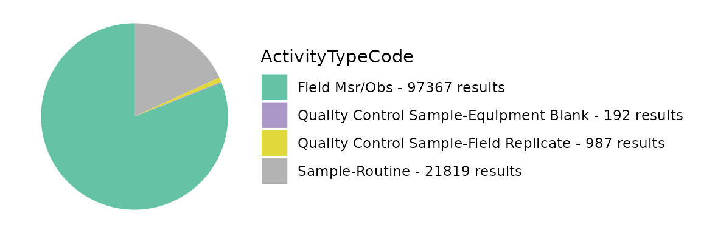
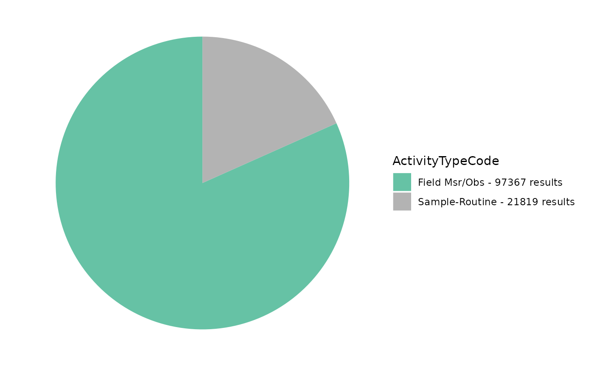
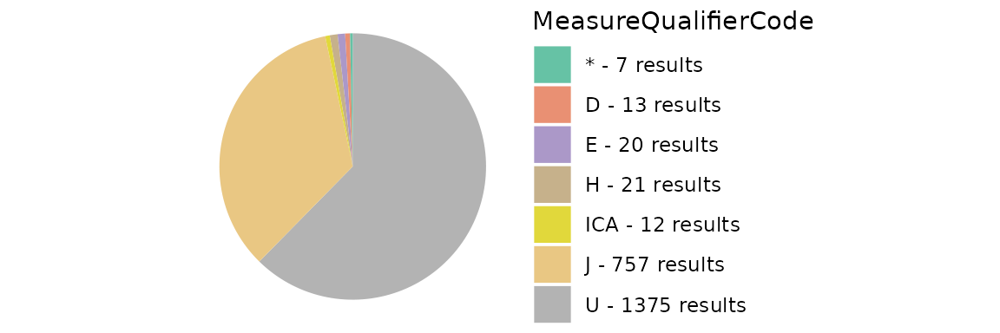
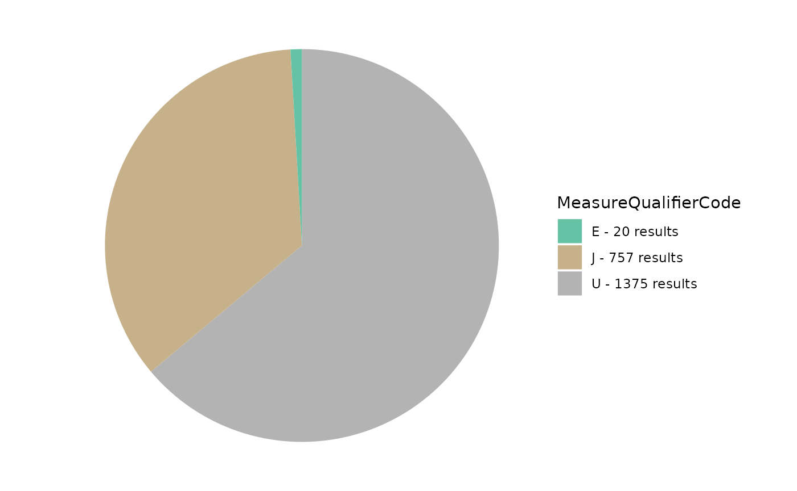
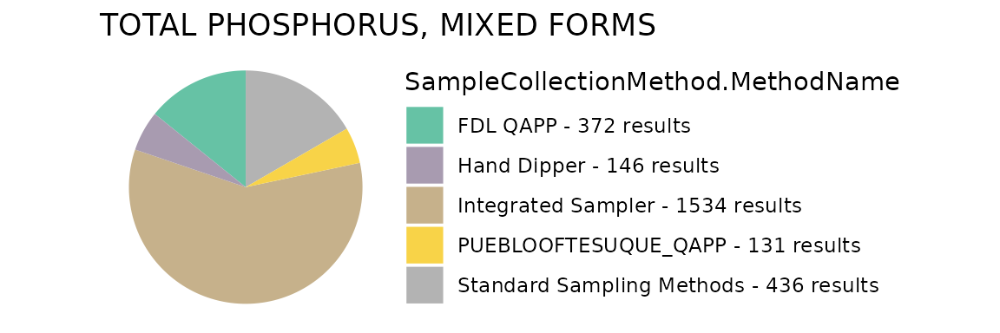
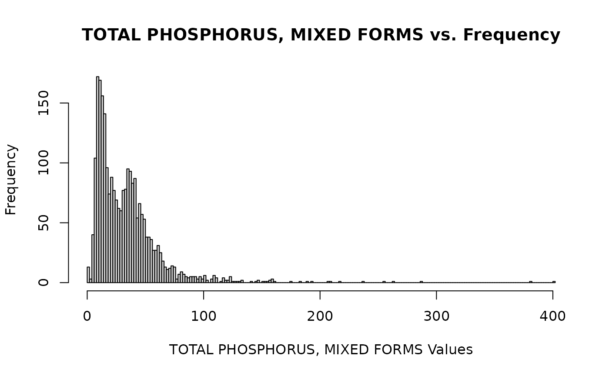
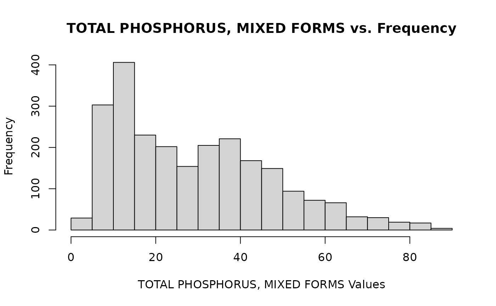

Tools for Automated Data Analysis (TADA) Module 1: Water Quality Portal Data Discovery and Cleaning
TADA Team
2023-05-24
Source:vignettes/TADAModule1.Rmd
TADAModule1.RmdOverview
This vignette will walk through how to discover and clean (i.e., wrangle, Quality Assure and Quality Control (QAQC), and harmonize) Water Quality Portal (WQP) data from multiple organizations.
Install and load packages
To install TADA, currently you need to install from GitHub using remotes (shown) or devtools.
First, install and load the “remotes” package specifying the repo. This is needed before installing TADA because it is only available on GitHub (not CRAN).
install.packages("remotes",
repos = "http://cran.us.r-project.org")
library(remotes)Next, install and load TADA. dataRetrieval and other TADA R Package dependencies will also be downloaded from CRAN with the TADA install, but the development version can be downloaded directly from GitHub if desired (un-comment).
# remotes::install_github("USGS-R/dataRetrieval", dependencies=TRUE)
# if you experience any issues installing TADA, try un-commenting and running
# the line below before the install
# options(download.file.method = "wininet")
remotes::install_github("USEPA/TADA",
ref = "develop",
dependencies = TRUE)
library(TADA)Retrieve WQP data
WQP data is retrieved and processed for compatibility with TADA. This function, TADAdataRetrieval, builds on the USGS dataRetrieval package functions. It joins four WQP profiles (i.e., Site metadata, Sample Results (narrow), Sample Results (physical/chemical metadata), and Project metadata. In addition, it changes all data in the Characteristic, Speciation, Fraction, and Unit fields to uppercase, removes true duplicates, and addressed result values that include special characters.
This function uses the same inputs as the dataRetrieval
readWQPdata function. readWQPdata does not
restrict the characteristics pulled from Water Quality Portal (WQP).
You may specify the desired characteristics by using, for instance:
characteristicName = “pH”.
Data retrieval filters include:
startDate
endDate
characteristicName
sampleMedia
siteType
statecode (review list of possible state and territory abbreviations)
countycode
siteid
organization
project
huc
characteristicType
Please be aware that the default TADAdataRetrieval function automatically runs the TADA autoclean and ConvertSpecialChars functions. Both are both required for subsequent functions within the TADA R package to run. As a general rule, TADA functions do not change any contents in the WQP-served columns (enter ?ConvertSpecialChars and ?autoclean into the console for more details). Instead, they add new columns with the prefix “TADA.” The following columns are numeric versions of their WQP origins:
- TADA.ResultMeasureValue
- TADA.DetectionQuantitationLimitMeasure.MeasureValue
- TADA.LatitudeMeasure
- TADA.LongitudeMeasureThese functions also add the columns TADA.ResultMeasureValueDataTypes.Flag and TADA.DetectionQuantitationLimitMeasure.MeasureValueDataTypes.Flag, which provide information about the result values that is needed to address censored data later on (i.e., nondetections). Specifically, these new columns flag if special characters are included in result values, and specifies what the special characters are.
Downloads using TADAdataRetrieval will have the same columns each time, but be aware that data are uploaded to the Water Quality Portal by individual organizations, which may or may not follow the same conventions. Data and metadata quality are not guaranteed! Make sure to carefully explore any data and make conservative quality assurance decisions where information is limited.
Tips:
-
All the query filters for the WQP work as an AND but within the fields there are ORs. For example:
Characteristics: If you choose pH & DO - it’s an OR. This means you will retrieve both pH OR DO data if available.
States: Similarly, if you choose VA and IL, it’s an OR. This means you will retrieve both VA OR IL data if available.
Combinations of fields are ANDs, such as State/VA AND Characteristic/DO”. This means you will receive all DO data available in VA.
“Characteristic” and “Characteristic Type” also work as an AND. This means that the Characteristic must fall within the CharacteristicGroup if both filters are being used, if not you will get an error.
The “siteid” is a general term WQP uses to describe both Site IDs from USGS databases and Monitoring Location Identifiers (from the Water Quality Portal). Each monitoring location in the Water Quality Portal (WQP) has a unique Monitoring Location Identifier, regardless of the database from which it derives. The Monitoring Location Identifier from the WQP is the concatenated Organization Identifier plus the Site ID number. Site IDs that only include a number are only unique identifiers for monitoring locations within USGS NWIS or EPA’s WQX databases separately.
Additional resources:
Review function documentation by entering the following code into the console: ?TADAdataRetrieval
dataRetrieval
Uncomment below if you would like to review differences between the profiles you would get using readWQPdata vs. TADAdataRetrieval. The profiles are different because TADAdataRetrieval automatically joins in data from multiple WQP profiles, and does some additional data cleaning as part of the data retrieval process.
This example includes monitoring data collected from Jan 2018 to present by six organizations: 1) Red Lake Band of Chippewa Indians, 2) Sac & Fox Nation, 3) Pueblo of Pojoaque, 4) Minnesota Chippewa Tribe (Fond du Lac Band), 5) Pueblo of Tesuque, and 6) The Chickasaw Nation
We will move forward with this example in the remainder of the vignette.
# dataRetrieval_example <- dataRetrieval::readWQPdata(organization = c("REDLAKE_WQX", "SFNOES_WQX", "PUEBLO_POJOAQUE", "FONDULAC_WQX", "PUEBLOOFTESUQUE", "CNENVSER"), startDate = "2018-01-01", ignore_attributes = TRUE)Use the code below to download data from the WQP using TADAdataRetrieval. Edit the code chuck below to define your own WQP query inputs.
Note: TADAdataRetrieval (by leveraging dataRetrieval), automatically converts the date times to UTC. It also automatically converts the data to dates, datetimes, and numerics based on a standard algorithm.
Enter ?TADAdataRetrieval into the console to review more example queries and additional information.
TADAProfile <- TADAdataRetrieval(organization = c("REDLAKE_WQX", "SFNOES_WQX", "PUEBLO_POJOAQUE", "FONDULAC_WQX", "PUEBLOOFTESUQUE", "CNENVSER"), startDate = "2018-01-01")
#> [1] "NOTE: This version of the TADA package is designed to work with data with sample media: 'WATER'. autoclean does not currently filter downloaded data to 'WATER'. The user must make this specification on their own outside of package functions. See the WQPDataHamornization vignette for an example."If you need to download a large amount of data from across a large area, and the TADAdataRetrieval function is not working due to WQP timeout issues, then the TADABigdataRetrieval function may work better.
This function does multiple synchronous data calls to the WQP (waterqualitydata.us). It uses the WQP summary service to limit the sites downloaded to only those with relevant data. It pulls back data from set number of stations at a time and then joins the data back together to produce a single TADA compatible dataframe as the output.
See ?TADABigdataRetrieval for more details. WARNING, some of the examples below can take multiple HOURS to run. The total run time depends on your query inputs.
# AK_AL_WaterTemp <- TADABigdataRetrieval(startDate = "2000-01-01", endDate = "2022-12-31", characteristicName = "Temperature, water", statecode = c("AK","AL"))
# AllWaterTemp <- TADABigdataRetrieval(characteristicName = "Temperature, water")
# AllPhosphorus <- TADABigdataRetrieval(characteristicName = "Phosphorus")
# AllCT <- TADABigdataRetrieval(statecode = "CT")Review all column names in the TADA Profile. Remove results that are not water samples or measurements (TADA is recommended for use with water data only).
colnames(TADAProfile)
#> [1] "OrganizationIdentifier"
#> [2] "OrganizationFormalName"
#> [3] "ActivityIdentifier"
#> [4] "ActivityTypeCode"
#> [5] "ActivityMediaName"
#> [6] "ActivityMediaSubdivisionName"
#> [7] "ActivityStartDate"
#> [8] "ActivityStartTime.Time"
#> [9] "ActivityStartTime.TimeZoneCode"
#> [10] "ActivityEndDate"
#> [11] "ActivityEndTime.Time"
#> [12] "ActivityEndTime.TimeZoneCode"
#> [13] "ActivityRelativeDepthName"
#> [14] "ActivityDepthHeightMeasure.MeasureValue"
#> [15] "ActivityDepthHeightMeasure.MeasureUnitCode"
#> [16] "ActivityDepthAltitudeReferencePointText"
#> [17] "ActivityTopDepthHeightMeasure.MeasureValue"
#> [18] "ActivityTopDepthHeightMeasure.MeasureUnitCode"
#> [19] "ActivityBottomDepthHeightMeasure.MeasureValue"
#> [20] "ActivityBottomDepthHeightMeasure.MeasureUnitCode"
#> [21] "ProjectIdentifier"
#> [22] "ProjectName"
#> [23] "ActivityConductingOrganizationText"
#> [24] "MonitoringLocationIdentifier"
#> [25] "MonitoringLocationName"
#> [26] "ActivityCommentText"
#> [27] "SampleAquifer"
#> [28] "HydrologicCondition"
#> [29] "HydrologicEvent"
#> [30] "ActivityLocation.LatitudeMeasure"
#> [31] "ActivityLocation.LongitudeMeasure"
#> [32] "SampleCollectionMethod.MethodIdentifier"
#> [33] "SampleCollectionMethod.MethodIdentifierContext"
#> [34] "SampleCollectionMethod.MethodName"
#> [35] "SampleCollectionMethod.MethodDescriptionText"
#> [36] "SampleCollectionEquipmentName"
#> [37] "ResultIdentifier"
#> [38] "ResultDetectionConditionText"
#> [39] "MethodSpeciationName"
#> [40] "CharacteristicName"
#> [41] "ResultSampleFractionText"
#> [42] "ResultMeasureValue"
#> [43] "ResultMeasure.MeasureUnitCode"
#> [44] "MeasureQualifierCode"
#> [45] "ResultStatusIdentifier"
#> [46] "StatisticalBaseCode"
#> [47] "ResultValueTypeName"
#> [48] "ResultWeightBasisText"
#> [49] "ResultTimeBasisText"
#> [50] "ResultTemperatureBasisText"
#> [51] "ResultParticleSizeBasisText"
#> [52] "DataQuality.PrecisionValue"
#> [53] "DataQuality.BiasValue"
#> [54] "DataQuality.ConfidenceIntervalValue"
#> [55] "DataQuality.UpperConfidenceLimitValue"
#> [56] "DataQuality.LowerConfidenceLimitValue"
#> [57] "ResultCommentText"
#> [58] "USGSPCode"
#> [59] "ResultDepthHeightMeasure.MeasureValue"
#> [60] "ResultDepthHeightMeasure.MeasureUnitCode"
#> [61] "ResultDepthAltitudeReferencePointText"
#> [62] "SubjectTaxonomicName"
#> [63] "SampleTissueAnatomyName"
#> [64] "BinaryObjectFileName"
#> [65] "BinaryObjectFileTypeCode"
#> [66] "ResultFileUrl"
#> [67] "ResultAnalyticalMethod.MethodIdentifier"
#> [68] "ResultAnalyticalMethod.MethodIdentifierContext"
#> [69] "ResultAnalyticalMethod.MethodName"
#> [70] "ResultAnalyticalMethod.MethodUrl"
#> [71] "ResultAnalyticalMethod.MethodDescriptionText"
#> [72] "LaboratoryName"
#> [73] "AnalysisStartDate"
#> [74] "ResultLaboratoryCommentText"
#> [75] "ResultDetectionQuantitationLimitUrl"
#> [76] "DetectionQuantitationLimitTypeName"
#> [77] "DetectionQuantitationLimitMeasure.MeasureValue"
#> [78] "DetectionQuantitationLimitMeasure.MeasureUnitCode"
#> [79] "LabSamplePreparationUrl"
#> [80] "LastUpdated"
#> [81] "ProviderName"
#> [82] "timeZoneStart"
#> [83] "timeZoneEnd"
#> [84] "ActivityStartDateTime"
#> [85] "ActivityEndDateTime"
#> [86] "MonitoringLocationTypeName"
#> [87] "MonitoringLocationDescriptionText"
#> [88] "HUCEightDigitCode"
#> [89] "DrainageAreaMeasure.MeasureValue"
#> [90] "DrainageAreaMeasure.MeasureUnitCode"
#> [91] "ContributingDrainageAreaMeasure.MeasureValue"
#> [92] "ContributingDrainageAreaMeasure.MeasureUnitCode"
#> [93] "LatitudeMeasure"
#> [94] "LongitudeMeasure"
#> [95] "SourceMapScaleNumeric"
#> [96] "HorizontalAccuracyMeasure.MeasureValue"
#> [97] "HorizontalAccuracyMeasure.MeasureUnitCode"
#> [98] "HorizontalCollectionMethodName"
#> [99] "HorizontalCoordinateReferenceSystemDatumName"
#> [100] "VerticalMeasure.MeasureValue"
#> [101] "VerticalMeasure.MeasureUnitCode"
#> [102] "VerticalAccuracyMeasure.MeasureValue"
#> [103] "VerticalAccuracyMeasure.MeasureUnitCode"
#> [104] "VerticalCollectionMethodName"
#> [105] "VerticalCoordinateReferenceSystemDatumName"
#> [106] "CountryCode"
#> [107] "StateCode"
#> [108] "CountyCode"
#> [109] "AquiferName"
#> [110] "LocalAqfrName"
#> [111] "FormationTypeText"
#> [112] "AquiferTypeName"
#> [113] "ConstructionDateText"
#> [114] "WellDepthMeasure.MeasureValue"
#> [115] "WellDepthMeasure.MeasureUnitCode"
#> [116] "WellHoleDepthMeasure.MeasureValue"
#> [117] "WellHoleDepthMeasure.MeasureUnitCode"
#> [118] "MethodSpecificationName"
#> [119] "ProjectDescriptionText"
#> [120] "SamplingDesignTypeCode"
#> [121] "QAPPApprovedIndicator"
#> [122] "QAPPApprovalAgencyName"
#> [123] "ProjectFileUrl"
#> [124] "ProjectMonitoringLocationWeightingUrl"
#> [125] "TADA.LatitudeMeasure"
#> [126] "TADA.LongitudeMeasure"
#> [127] "TADA.ActivityMediaName"
#> [128] "TADA.CharacteristicName"
#> [129] "TADA.ResultMeasureValue"
#> [130] "TADA.ResultMeasureValueDataTypes.Flag"
#> [131] "TADA.ResultMeasure.MeasureUnitCode"
#> [132] "TADA.MethodSpecificationName"
#> [133] "TADA.ResultSampleFractionText"
#> [134] "TADA.DetectionQuantitationLimitMeasure.MeasureValue"
#> [135] "TADA.DetectionQuantitationLimitMeasure.MeasureUnitCode"
#> [136] "TADA.DetectionQuantitationLimitMeasure.MeasureValueDataTypes.Flag"
TADAProfile_CharSummary <- TADA_summarizeColumn(TADAProfile, "TADA.CharacteristicName")
TADAProfile_CharSummary
#> # A tibble: 133 × 3
#> TADA.CharacteristicName n_sites n_records
#> <chr> <int> <int>
#> 1 .ALPHA.-ENDOSULFAN 6 7
#> 2 .BETA.-ENDOSULFAN 6 7
#> 3 ALDRIN 6 7
#> 4 ALKALINITY, TOTAL 159 3557
#> 5 ALPHA PARTICLE 10 24
#> 6 ALUMINUM 10 28
#> 7 AMMONIA 4 4
#> 8 AMMONIA-NITROGEN 104 1366
#> 9 AMMONIUM 17 214
#> 10 APPARENT COLOR 42 302
#> # ℹ 123 more rows
# Remove data for non-water media types
TADAProfile <- dplyr::filter(TADAProfile, TADA.ActivityMediaName == "WATER")Invalid coordinates
Review station locations and summary information using the TADAOverviewMap function. TADAOverviewMap counts the number of unique results, characteristics, and organizations at each monitoring location in the dataset and creates a tidy map for reviewing summary stats spatially. Larger point sizes indicate more results collected at a given site, while darker blue colors indicate more unique characteristics collected at the site. Users may click on a site to view a pop-up with this summary information, including the number of organizations that reported results at that site. This map may inform a user’s decision to remove/correct sites that are outside the US.
TADAOverviewMap(TADAProfile)The TADA InvalidCoordinates function identifies and flags potentially invalid coordinate data. While its functionality is showcased here, it is always important to review any invalid outputs before cleaning to reduce the risk of leaving out usable data/sites.
Allowable values for clean_outsideUSA are “no”, “remove”, or “change sign”. The default is “no” which flags latitude and longitude coordinates outside the USA. Assigning clean_ousideUSA = “remove” will remove rows of data with coordinates outside the USA. And assigning clean_outsideUSA = “change sign” will flip the sign of latitude or longitude coordinates flagged as outside the USA. The “change sign” option should only be used when it is known that coordinates were entered with the wrong sign in WQX; additionally, the data owner should fix these incorrect coordinates in the raw data through the WQX - for assistance email the WQX help desk: WQX@epa.gov
Allowable values for clean_imprecise are TRUE or FALSE. The default is FALSE which flags rows of data with invalid or imprecise coordinates without removing them. Assigning clean_imprecise = TRUE will remove rows of data with invalid or imprecise coordinates.
Allowable values for errorsonly are TRUE or FALSE. The default is FALSE which keeps all rows of data regardless of flag status. Assigning errorsonly = TRUE filters the dataframe to show only rows of data which are flagged.
When clean_outsideUSA = “no” and/or clean_imprecise = FALSE, a column will be appended titled “TADA.InvalidCoordinates.Flag” with the following flags (if relevant to dataframe):
If the latitude is less than zero, the row will be flagged with “LAT_OutsideUSA”. (Exception for American Samoa)
If the longitude is greater than zero AND less than 145, the row will be flagged as “LONG_OutsideUSA”. (Exceptions for Guam and the Northern Mariana Islands)
If the latitude or longitude contains the string, “999”, the row will be flagged as invalid.
Finally, precision can be measured by the number of decimal places in the latitude and longitude provided. If either does not have any numbers to the right of the decimal point, the row will be flagged as “Imprecise”.
# flag only
TADAProfileClean1 <- InvalidCoordinates(TADAProfile, clean_outsideUSA = "no", clean_imprecise = FALSE, errorsonly = FALSE)
# review unique flags in TADAProfileClean1
unique(TADAProfileClean1$TADA.InvalidCoordinates.Flag)
#> [1] "OK" "Imprecise_Longincludes999"
#> [3] "Imprecise_lessthan3decimaldigits"
# review unique MonitoringLocationIdentifiers in your flag dataframe
unique(TADAProfileClean1$MonitoringLocationIdentifier)
#> [1] "SFNOES_WQX-Veteran's Lake"
#> [2] "SFNOES_WQX-Veteran's Lake 005"
#> [3] "SFNOES_WQX-Cimarron 003"
#> [4] "SFNOES_WQX-Veteran's Lake 004"
#> [5] "SFNOES_WQX-Veteran's Lake 003"
#> [6] "SFNOES_WQX-Rock Creek 001"
#> [7] "SFNOES_WQX-Veteran's Lake 002"
#> [8] "SFNOES_WQX-North Canadian 002"
#> [9] "SFNOES_WQX-Cimarron River"
#> [10] "SFNOES_WQX-North Canadian 003"
#> [11] "SFNOES_WQX-Big Creek 001"
#> [12] "SFNOES_WQX-Euchee 003"
#> [13] "SFNOES_WQX-Skull 002"
#> [14] "SFNOES_WQX-Shan Creek 001"
#> [15] "SFNOES_WQX-North Canadian River"
#> [16] "SFNOES_WQX-Deer Creek 001"
#> [17] "SFNOES_WQX-Cimarron 002"
#> [18] "SFNOES_WQX-Wildhorse Creek"
#> [19] "REDLAKE_WQX-BATT-SB"
#> [20] "REDLAKE_WQX-LRE"
#> [21] "REDLAKE_WQX-ROCK-O"
#> [22] "REDLAKE_WQX-CHAI-M"
#> [23] "REDLAKE_WQX-PIKE-OR"
#> [24] "REDLAKE_WQX-LRW"
#> [25] "REDLAKE_WQX-ELEP"
#> [26] "REDLAKE_WQX-09RD003"
#> [27] "REDLAKE_WQX-SAND"
#> [28] "REDLAKE_WQX-URW-C"
#> [29] "REDLAKE_WQX-10RD011"
#> [30] "REDLAKE_WQX-CORM-B"
#> [31] "REDLAKE_WQX-GRAS"
#> [32] "REDLAKE_WQX-HEAR"
#> [33] "REDLAKE_WQX-BLAC-H"
#> [34] "REDLAKE_WQX-PIKE-B"
#> [35] "REDLAKE_WQX-BIGT"
#> [36] "REDLAKE_WQX-URC"
#> [37] "REDLAKE_WQX-TAMA-B"
#> [38] "REDLAKE_WQX-LONG"
#> [39] "REDLAKE_WQX-FRAN"
#> [40] "REDLAKE_WQX-SQUA"
#> [41] "REDLAKE_WQX-GREE-REDLAKE"
#> [42] "REDLAKE_WQX-KINN"
#> [43] "REDLAKE_WQX-LITT"
#> [44] "REDLAKE_WQX-MUDR-I"
#> [45] "REDLAKE_WQX-MORR"
#> [46] "REDLAKE_WQX-BLAK"
#> [47] "REDLAKE_WQX-RUSH"
#> [48] "REDLAKE_WQX-JOUR"
#> [49] "REDLAKE_WQX-ISLA"
#> [50] "REDLAKE_WQX-LRC"
#> [51] "REDLAKE_WQX-MUDR-M"
#> [52] "REDLAKE_WQX-REDL-O"
#> [53] "REDLAKE_WQX-CHAI-S"
#> [54] "REDLAKE_WQX-DICK"
#> [55] "REDLAKE_WQX-BLAC-I"
#> [56] "REDLAKE_WQX-URE"
#> [57] "REDLAKE_WQX-LRE-C"
#> [58] "REDLAKE_WQX-BIGT-BAY"
#> [59] "REDLAKE_WQX-TOWN"
#> [60] "REDLAKE_WQX-SHEL"
#> [61] "REDLAKE_WQX-BALI"
#> [62] "REDLAKE_WQX-SHEM"
#> [63] "REDLAKE_WQX-FAIR"
#> [64] "REDLAKE_WQX-CLWR-B"
#> [65] "REDLAKE_WQX-S002-123"
#> [66] "REDLAKE_WQX-JOHN"
#> [67] "REDLAKE_WQX-URE-C"
#> [68] "REDLAKE_WQX-MPCA2"
#> [69] "REDLAKE_WQX-LRW-C"
#> [70] "REDLAKE_WQX-MUER"
#> [71] "REDLAKE_WQX-GREE-REDBY"
#> [72] "REDLAKE_WQX-BASS-SE"
#> [73] "REDLAKE_WQX-ROUN"
#> [74] "REDLAKE_WQX-BATT-NB"
#> [75] "REDLAKE_WQX-FULL-W"
#> [76] "REDLAKE_WQX-LUSS"
#> [77] "REDLAKE_WQX-GWIN"
#> [78] "REDLAKE_WQX-STON-I"
#> [79] "REDLAKE_WQX-S007-884"
#> [80] "REDLAKE_WQX-FULL-E"
#> [81] "REDLAKE_WQX-DUNE"
#> [82] "REDLAKE_WQX-SANR-U"
#> [83] "REDLAKE_WQX-10RD014"
#> [84] "REDLAKE_WQX-URW"
#> [85] "REDLAKE_WQX-NONA"
#> [86] "REDLAKE_WQX-PIKE-I"
#> [87] "REDLAKE_WQX-BATT-I"
#> [88] "REDLAKE_WQX-EMER"
#> [89] "REDLAKE_WQX-LAXO"
#> [90] "REDLAKE_WQX-BUFF-BAY"
#> [91] "REDLAKE_WQX-PINE-I"
#> [92] "REDLAKE_WQX-BASS-NW"
#> [93] "REDLAKE_WQX-MUSKEG"
#> [94] "REDLAKE_WQX-FOX"
#> [95] "REDLAKE_WQX-BORD"
#> [96] "REDLAKE_WQX-KESA"
#> [97] "REDLAKE_WQX-CAHI"
#> [98] "REDLAKE_WQX-ANKE"
#> [99] "REDLAKE_WQX-MUD-SB"
#> [100] "REDLAKE_WQX-TEAL"
#> [101] "REDLAKE_WQX-POPL-I"
#> [102] "REDLAKE_WQX-BEAR-I"
#> [103] "REDLAKE_WQX-FLOW-4"
#> [104] "REDLAKE_WQX-PICK-I"
#> [105] "REDLAKE_WQX-GROU"
#> [106] "REDLAKE_WQX-10RD010"
#> [107] "REDLAKE_WQX-HARR-I"
#> [108] "REDLAKE_WQX-FLOW-2"
#> [109] "REDLAKE_WQX-REDH"
#> [110] "REDLAKE_WQX-UNAM-I"
#> [111] "REDLAKE_WQX-BT5"
#> [112] "REDLAKE_WQX-ALAS"
#> [113] "REDLAKE_WQX-09RD008"
#> [114] "REDLAKE_WQX-FROGS_BRIDGE"
#> [115] "REDLAKE_WQX-PIKE_BARTONS"
#> [116] "PUEBLOOFTESUQUE-MS05TB"
#> [117] "FONDULAC_WQX-102A"
#> [118] "CNENVSER-RCCC40ftMUR111303030602"
#> [119] "FONDULAC_WQX-204A"
#> [120] "PUEBLOOFTESUQUE-MS04NP"
#> [121] "FONDULAC_WQX-SLRM 46.5"
#> [122] "FONDULAC_WQX-116"
#> [123] "REDLAKE_WQX-LITTLE_ROCK_FIRELINE"
#> [124] "CNENVSER-Deleware"
#> [125] "FONDULAC_WQX-114A"
#> [126] "FONDULAC_WQX-SLRM 53"
#> [127] "FONDULAC_WQX-119"
#> [128] "FONDULAC_WQX-105"
#> [129] "CNENVSER-LS99"
#> [130] "FONDULAC_WQX-110"
#> [131] "FONDULAC_WQX-111"
#> [132] "CNENVSER-BRHB"
#> [133] "FONDULAC_WQX-113"
#> [134] "REDLAKE_WQX-10RD009"
#> [135] "FONDULAC_WQX-122"
#> [136] "CNENVSER-BLUE99JOHN111401020104"
#> [137] "FONDULAC_WQX-109"
#> [138] "CNENVSER-BC99"
#> [139] "FONDULAC_WQX-101"
#> [140] "REDLAKE_WQX-WILL"
#> [141] "PUEBLOOFTESUQUE-MS01AD"
#> [142] "FONDULAC_WQX-124"
#> [143] "CNENVSER-BR99"
#> [144] "FONDULAC_WQX-102B"
#> [145] "FONDULAC_WQX-104"
#> [146] "PUEBLOOFTESUQUE-MS08RC"
#> [147] "CNENVSER-Lake"
#> [148] "FONDULAC_WQX-123B"
#> [149] "CNENVSER-LS99PONT110902020406"
#> [150] "PUEBLOOFTESUQUE-MS06VG"
#> [151] "PUEBLOOFTESUQUE-MS02SB"
#> [152] "FONDULAC_WQX-115"
#> [153] "FONDULAC_WQX-118"
#> [154] "CNENVSER-PENN"
#> [155] "FONDULAC_WQX-SLRSID"
#> [156] "REDLAKE_WQX-SHAC"
#> [157] "CNENVSER-LSERPONT110902020406"
#> [158] "CNENVSER-HONEY"
#> [159] "PUEBLOOFTESUQUE-MS07AR"
#> [160] "FONDULAC_WQX-205"
#> [161] "CNENVSER-PCFFJOHN111303040203"
#> [162] "FONDULAC_WQX-114B"
#> [163] "FONDULAC_WQX-123A"
#> [164] "CNENVSER-BLUEHBJOHN111401020106"
#> [165] "CNENVSER-DCHRJOHN111401040201"
#> [166] "CNENVSER-RUSH"
#> [167] "FONDULAC_WQX-SLRM 38.5"
#> [168] "CNENVSER-LSHQ"
#> [169] "CNENVSER-RC40"
#> [170] "FONDULAC_WQX-107"
#> [171] "CNENVSER-GSCMUR111303030601"
#> [172] "CNENVSER-LSCC"
#> [173] "CNENVSER-LSER"
#> [174] "PUEBLOOFTESUQUE-MS03ID"
#> [175] "FONDULAC_WQX-108"
#> [176] "FONDULAC_WQX-121"
#> [177] "FONDULAC_WQX-103"
#> [178] "CNENVSER-LCOILPONT111401040104"
#> [179] "CNENVSER-RCOSMUR111303030602"
#> [180] "FONDULAC_WQX-112"
#> [181] "CNENVSER-RCOK"
#> [182] "FONDULAC_WQX-207B"
#> [183] "CNENVSER-LSHT"
#> [184] "CNENVSER-LSFR"
#> [185] "FONDULAC_WQX-202B"
#> [186] "PUEBLO_POJOAQUE-TR"
#> [187] "PUEBLO_POJOAQUE-NR"
#> [188] "FONDULAC_WQX-SLRM 40.5"
#> [189] "PUEBLO_POJOAQUE-PR"
#> [190] "CNENVSER-PCLWDJOHN111303040203"
#> [191] "REDLAKE_WQX-COLO"
#> [192] "CNENVSER-CBHWY99111401040102"
#> [193] "FONDULAC_WQX-SLRM 51"
#> [194] "FONDULAC_WQX-203A"
#> [195] "CNENVSER-PCSMJOHN111303040203"
#> [196] "FONDULAC_WQX-122J"
#> [197] "CNENVSER-HCI35MUR111303030805"
#> [198] "REDLAKE_WQX-GOUR"
#> [199] "PUEBLOOFTESUQUE-Fire Monitoring Site"
#> [200] "CNENVSER-GSBGMUR111303030601"
#> [201] "CNENVSER-GSCCMUR111303030601"
#> [202] "CNENVSER-BHCHWY177MUR111303030603"
#> [203] "SFNOES_WQX-Euchee Creek"
#> [204] "CNENVSER-PCGCJOHN111303040203"
#> [205] "FONDULAC_WQX-SLRSIU"
#> [206] "REDLAKE_WQX-GIBI"
#> [207] "CNENVSER-WASH"
#> [208] "PUEBLOOFTESUQUE-Seed Bank Well"
#> [209] "CNENVSER-RCCTMUR111303030602"
#> [210] "FONDULAC_WQX-106"
#> [211] "CNENVSER-BHCGYCMUR111303030603"
#> [212] "FONDULAC_WQX-122I"
#> [213] "PUEBLOOFTESUQUE-MS11NB"
#> [214] "CNENVSER-WRMUR111303030806"
#> [215] "FONDULAC_WQX-122K"
#> [216] "FONDULAC_WQX-122G"
#> [217] "FONDULAC_WQX-122Q"
#> [218] "FONDULAC_WQX-122E"
#> [219] "FONDULAC_WQX-122F"
#> [220] "CNENVSER-DBBHRMUR111303030603"
#> [221] "FONDULAC_WQX-204D"
Unique_InvalidCoordinateFlags <- TADAProfileClean1 %>%
dplyr::select('MonitoringLocationIdentifier',
'MonitoringLocationName',
'TADA.InvalidCoordinates.Flag',
'OrganizationIdentifier',
'TADA.LongitudeMeasure',
'TADA.LatitudeMeasure',
'MonitoringLocationTypeName',
'CountryCode',
'StateCode',
'CountyCode',
'HUCEightDigitCode',
'MonitoringLocationDescriptionText',
'ProjectName',
'ProjectIdentifier',
'OrganizationFormalName') %>%
dplyr::distinct()
Unique_InvalidCoordinateFlags
#> MonitoringLocationIdentifier
#> 1 SFNOES_WQX-Veteran's Lake
#> 2 SFNOES_WQX-Veteran's Lake 005
#> 3 SFNOES_WQX-Cimarron 003
#> 4 SFNOES_WQX-Veteran's Lake 004
#> 5 SFNOES_WQX-Veteran's Lake 003
#> 6 SFNOES_WQX-Rock Creek 001
#> 7 SFNOES_WQX-Veteran's Lake 002
#> 8 SFNOES_WQX-North Canadian 002
#> 9 SFNOES_WQX-Cimarron River
#> 10 SFNOES_WQX-North Canadian 003
#> 11 SFNOES_WQX-Big Creek 001
#> 12 SFNOES_WQX-Euchee 003
#> 13 SFNOES_WQX-Skull 002
#> 14 SFNOES_WQX-Shan Creek 001
#> 15 SFNOES_WQX-North Canadian River
#> 16 SFNOES_WQX-Deer Creek 001
#> 17 SFNOES_WQX-Cimarron 002
#> 18 SFNOES_WQX-Wildhorse Creek
#> 19 REDLAKE_WQX-BATT-SB
#> 20 REDLAKE_WQX-LRE
#> 21 REDLAKE_WQX-ROCK-O
#> 22 REDLAKE_WQX-CHAI-M
#> 23 REDLAKE_WQX-PIKE-OR
#> 24 REDLAKE_WQX-LRW
#> 25 REDLAKE_WQX-ELEP
#> 26 REDLAKE_WQX-09RD003
#> 27 REDLAKE_WQX-SAND
#> 28 REDLAKE_WQX-URW-C
#> 29 REDLAKE_WQX-10RD011
#> 30 REDLAKE_WQX-CORM-B
#> 31 REDLAKE_WQX-GRAS
#> 32 REDLAKE_WQX-HEAR
#> 33 REDLAKE_WQX-BLAC-H
#> 34 REDLAKE_WQX-PIKE-B
#> 35 REDLAKE_WQX-BIGT
#> 36 REDLAKE_WQX-URC
#> 37 REDLAKE_WQX-TAMA-B
#> 38 REDLAKE_WQX-LONG
#> 39 REDLAKE_WQX-FRAN
#> 40 REDLAKE_WQX-SQUA
#> 41 REDLAKE_WQX-GREE-REDLAKE
#> 42 REDLAKE_WQX-KINN
#> 43 REDLAKE_WQX-LITT
#> 44 REDLAKE_WQX-MUDR-I
#> 45 REDLAKE_WQX-MORR
#> 46 REDLAKE_WQX-BLAK
#> 47 REDLAKE_WQX-RUSH
#> 48 REDLAKE_WQX-JOUR
#> 49 REDLAKE_WQX-ISLA
#> 50 REDLAKE_WQX-LRC
#> 51 REDLAKE_WQX-MUDR-M
#> 52 REDLAKE_WQX-REDL-O
#> 53 REDLAKE_WQX-CHAI-S
#> 54 REDLAKE_WQX-DICK
#> 55 REDLAKE_WQX-BLAC-I
#> 56 REDLAKE_WQX-URE
#> 57 REDLAKE_WQX-LRE-C
#> 58 REDLAKE_WQX-BIGT-BAY
#> 59 REDLAKE_WQX-TOWN
#> 60 REDLAKE_WQX-SHEL
#> 61 REDLAKE_WQX-BALI
#> 62 REDLAKE_WQX-SHEM
#> 63 REDLAKE_WQX-FAIR
#> 64 REDLAKE_WQX-CLWR-B
#> 65 REDLAKE_WQX-S002-123
#> 66 REDLAKE_WQX-JOHN
#> 67 REDLAKE_WQX-URE-C
#> 68 REDLAKE_WQX-MPCA2
#> 69 REDLAKE_WQX-LRW-C
#> 70 REDLAKE_WQX-MUER
#> 71 REDLAKE_WQX-GREE-REDBY
#> 72 REDLAKE_WQX-BASS-SE
#> 73 REDLAKE_WQX-ROUN
#> 74 REDLAKE_WQX-BATT-NB
#> 75 REDLAKE_WQX-FULL-W
#> 76 REDLAKE_WQX-LUSS
#> 77 REDLAKE_WQX-GWIN
#> 78 REDLAKE_WQX-STON-I
#> 79 REDLAKE_WQX-TAMA-B
#> 80 REDLAKE_WQX-S007-884
#> 81 REDLAKE_WQX-FULL-E
#> 82 REDLAKE_WQX-DUNE
#> 83 REDLAKE_WQX-SANR-U
#> 84 REDLAKE_WQX-PIKE-OR
#> 85 REDLAKE_WQX-10RD014
#> 86 REDLAKE_WQX-URW
#> 87 REDLAKE_WQX-NONA
#> 88 REDLAKE_WQX-PIKE-I
#> 89 REDLAKE_WQX-BATT-I
#> 90 REDLAKE_WQX-PIKE-B
#> 91 REDLAKE_WQX-EMER
#> 92 REDLAKE_WQX-LAXO
#> 93 REDLAKE_WQX-BUFF-BAY
#> 94 REDLAKE_WQX-PINE-I
#> 95 REDLAKE_WQX-SQUA
#> 96 REDLAKE_WQX-BASS-NW
#> 97 REDLAKE_WQX-GREE-REDLAKE
#> 98 REDLAKE_WQX-ROCK-O
#> 99 REDLAKE_WQX-MUSKEG
#> 100 REDLAKE_WQX-MUSKEG
#> 101 REDLAKE_WQX-FOX
#> 102 REDLAKE_WQX-BORD
#> 103 REDLAKE_WQX-KESA
#> 104 REDLAKE_WQX-LUSS
#> 105 REDLAKE_WQX-CAHI
#> 106 REDLAKE_WQX-ANKE
#> 107 REDLAKE_WQX-REDL-O
#> 108 REDLAKE_WQX-ANKE
#> 109 REDLAKE_WQX-MUD-SB
#> 110 REDLAKE_WQX-BLAC-H
#> 111 REDLAKE_WQX-MUDR-I
#> 112 REDLAKE_WQX-TEAL
#> 113 REDLAKE_WQX-10RD014
#> 114 REDLAKE_WQX-S002-123
#> 115 REDLAKE_WQX-CORM-B
#> 116 REDLAKE_WQX-CLWR-B
#> 117 REDLAKE_WQX-POPL-I
#> 118 REDLAKE_WQX-BEAR-I
#> 119 REDLAKE_WQX-SHEM
#> 120 REDLAKE_WQX-09RD003
#> 121 REDLAKE_WQX-FLOW-4
#> 122 REDLAKE_WQX-PICK-I
#> 123 REDLAKE_WQX-GROU
#> 124 REDLAKE_WQX-10RD010
#> 125 REDLAKE_WQX-FLOW-4
#> 126 REDLAKE_WQX-HARR-I
#> 127 REDLAKE_WQX-SANR-U
#> 128 REDLAKE_WQX-PIKE-OR
#> 129 REDLAKE_WQX-FLOW-2
#> 130 REDLAKE_WQX-MUDR-I
#> 131 REDLAKE_WQX-REDH
#> 132 REDLAKE_WQX-UNAM-I
#> 133 REDLAKE_WQX-BT5
#> 134 REDLAKE_WQX-BATT-NB
#> 135 REDLAKE_WQX-BATT-I
#> 136 REDLAKE_WQX-BATT-SB
#> 137 REDLAKE_WQX-BATT-I
#> 138 REDLAKE_WQX-JOHN
#> 139 REDLAKE_WQX-LONG
#> 140 REDLAKE_WQX-ALAS
#> 141 REDLAKE_WQX-EMER
#> 142 REDLAKE_WQX-ROUN
#> 143 REDLAKE_WQX-GREE-REDBY
#> 144 REDLAKE_WQX-MPCA2
#> 145 REDLAKE_WQX-MUDR-M
#> 146 REDLAKE_WQX-PIKE-I
#> 147 REDLAKE_WQX-BASS-NW
#> 148 REDLAKE_WQX-KINN
#> 149 REDLAKE_WQX-BIGT-BAY
#> 150 REDLAKE_WQX-BLAC-I
#> 151 REDLAKE_WQX-MUD-SB
#> 152 REDLAKE_WQX-MORR
#> 153 REDLAKE_WQX-LITT
#> 154 REDLAKE_WQX-BUFF-BAY
#> 155 REDLAKE_WQX-PIKE-B
#> 156 REDLAKE_WQX-BORD
#> 157 REDLAKE_WQX-BLAC-I
#> 158 REDLAKE_WQX-CHAI-S
#> 159 REDLAKE_WQX-TAMA-B
#> 160 REDLAKE_WQX-CORM-B
#> 161 REDLAKE_WQX-09RD008
#> 162 REDLAKE_WQX-JOUR
#> 163 REDLAKE_WQX-BASS-SE
#> 164 REDLAKE_WQX-FULL-E
#> 165 REDLAKE_WQX-MUDR-M
#> 166 REDLAKE_WQX-FROGS_BRIDGE
#> 167 REDLAKE_WQX-SANR-U
#> 168 REDLAKE_WQX-BT5
#> 169 REDLAKE_WQX-HEAR
#> 170 REDLAKE_WQX-BIGT
#> 171 REDLAKE_WQX-CLWR-B
#> 172 REDLAKE_WQX-FULL-W
#> 173 REDLAKE_WQX-BALI
#> 174 REDLAKE_WQX-PIKE-I
#> 175 REDLAKE_WQX-SHEL
#> 176 REDLAKE_WQX-TOWN
#> 177 REDLAKE_WQX-SAND
#> 178 REDLAKE_WQX-FLOW-2
#> 179 REDLAKE_WQX-DICK
#> 180 REDLAKE_WQX-REDL-O
#> 181 REDLAKE_WQX-BATT-SB
#> 182 REDLAKE_WQX-ELEP
#> 183 REDLAKE_WQX-PIKE_BARTONS
#> 184 REDLAKE_WQX-09RD003
#> 185 REDLAKE_WQX-ISLA
#> 186 PUEBLOOFTESUQUE-MS05TB
#> 187 FONDULAC_WQX-102A
#> 188 REDLAKE_WQX-10RD014
#> 189 REDLAKE_WQX-CHAI-M
#> 190 CNENVSER-RCCC40ftMUR111303030602
#> 191 REDLAKE_WQX-BATT-NB
#> 192 REDLAKE_WQX-ROCK-O
#> 193 REDLAKE_WQX-BLAC-H
#> 194 FONDULAC_WQX-204A
#> 195 PUEBLOOFTESUQUE-MS04NP
#> 196 REDLAKE_WQX-10RD011
#> 197 FONDULAC_WQX-SLRM 46.5
#> 198 FONDULAC_WQX-116
#> 199 REDLAKE_WQX-FLOW-2
#> 200 REDLAKE_WQX-LITTLE_ROCK_FIRELINE
#> 201 CNENVSER-Deleware
#> 202 FONDULAC_WQX-114A
#> 203 FONDULAC_WQX-SLRM 53
#> 204 FONDULAC_WQX-119
#> 205 FONDULAC_WQX-105
#> 206 CNENVSER-LS99
#> 207 REDLAKE_WQX-09RD003
#> 208 FONDULAC_WQX-110
#> 209 FONDULAC_WQX-111
#> 210 CNENVSER-BRHB
#> 211 FONDULAC_WQX-113
#> 212 REDLAKE_WQX-10RD009
#> 213 FONDULAC_WQX-122
#> 214 CNENVSER-BLUE99JOHN111401020104
#> 215 FONDULAC_WQX-109
#> 216 CNENVSER-BC99
#> 217 FONDULAC_WQX-101
#> 218 REDLAKE_WQX-WILL
#> 219 PUEBLOOFTESUQUE-MS01AD
#> 220 FONDULAC_WQX-124
#> 221 CNENVSER-BR99
#> 222 FONDULAC_WQX-102B
#> 223 FONDULAC_WQX-104
#> 224 PUEBLOOFTESUQUE-MS08RC
#> 225 CNENVSER-Lake
#> 226 FONDULAC_WQX-123B
#> 227 CNENVSER-LS99PONT110902020406
#> 228 PUEBLOOFTESUQUE-MS06VG
#> 229 PUEBLOOFTESUQUE-MS02SB
#> 230 FONDULAC_WQX-115
#> 231 FONDULAC_WQX-118
#> 232 CNENVSER-PENN
#> 233 FONDULAC_WQX-SLRSID
#> 234 REDLAKE_WQX-SHAC
#> 235 CNENVSER-LSERPONT110902020406
#> 236 CNENVSER-HONEY
#> 237 PUEBLOOFTESUQUE-MS07AR
#> 238 FONDULAC_WQX-205
#> 239 CNENVSER-PCFFJOHN111303040203
#> 240 FONDULAC_WQX-114B
#> 241 FONDULAC_WQX-123A
#> 242 CNENVSER-BLUEHBJOHN111401020106
#> 243 CNENVSER-DCHRJOHN111401040201
#> 244 CNENVSER-RUSH
#> 245 FONDULAC_WQX-SLRM 38.5
#> 246 CNENVSER-LSHQ
#> 247 CNENVSER-RC40
#> 248 FONDULAC_WQX-107
#> 249 CNENVSER-GSCMUR111303030601
#> 250 CNENVSER-LSCC
#> 251 CNENVSER-LSER
#> 252 PUEBLOOFTESUQUE-MS03ID
#> 253 FONDULAC_WQX-108
#> 254 FONDULAC_WQX-121
#> 255 FONDULAC_WQX-103
#> 256 CNENVSER-LCOILPONT111401040104
#> 257 CNENVSER-RCOSMUR111303030602
#> 258 REDLAKE_WQX-NONA
#> 259 FONDULAC_WQX-112
#> 260 CNENVSER-RCOK
#> 261 FONDULAC_WQX-207B
#> 262 CNENVSER-LSHT
#> 263 CNENVSER-LSFR
#> 264 FONDULAC_WQX-202B
#> 265 PUEBLO_POJOAQUE-TR
#> 266 PUEBLO_POJOAQUE-NR
#> 267 FONDULAC_WQX-SLRM 40.5
#> 268 PUEBLO_POJOAQUE-PR
#> 269 PUEBLO_POJOAQUE-NR
#> 270 PUEBLO_POJOAQUE-TR
#> 271 PUEBLO_POJOAQUE-PR
#> 272 CNENVSER-PCLWDJOHN111303040203
#> 273 PUEBLO_POJOAQUE-NR
#> 274 PUEBLO_POJOAQUE-PR
#> 275 REDLAKE_WQX-PIKE_BARTONS
#> 276 REDLAKE_WQX-COLO
#> 277 CNENVSER-CBHWY99111401040102
#> 278 PUEBLO_POJOAQUE-TR
#> 279 FONDULAC_WQX-SLRM 51
#> 280 PUEBLO_POJOAQUE-TR
#> 281 FONDULAC_WQX-203A
#> 282 CNENVSER-PCSMJOHN111303040203
#> 283 FONDULAC_WQX-122J
#> 284 CNENVSER-HCI35MUR111303030805
#> 285 REDLAKE_WQX-GOUR
#> 286 PUEBLOOFTESUQUE-Fire Monitoring Site
#> 287 REDLAKE_WQX-URE
#> 288 CNENVSER-GSBGMUR111303030601
#> 289 CNENVSER-GSCCMUR111303030601
#> 290 CNENVSER-BHCHWY177MUR111303030603
#> 291 SFNOES_WQX-Euchee Creek
#> 292 REDLAKE_WQX-FLOW-4
#> 293 CNENVSER-PCGCJOHN111303040203
#> 294 FONDULAC_WQX-SLRSIU
#> 295 REDLAKE_WQX-GIBI
#> 296 CNENVSER-WASH
#> 297 PUEBLOOFTESUQUE-Seed Bank Well
#> 298 PUEBLO_POJOAQUE-NR
#> 299 CNENVSER-RCCTMUR111303030602
#> 300 FONDULAC_WQX-106
#> 301 CNENVSER-BHCGYCMUR111303030603
#> 302 FONDULAC_WQX-122I
#> 303 PUEBLO_POJOAQUE-PR
#> 304 PUEBLO_POJOAQUE-PR
#> 305 PUEBLO_POJOAQUE-NR
#> 306 PUEBLO_POJOAQUE-PR
#> 307 PUEBLOOFTESUQUE-MS11NB
#> 308 PUEBLO_POJOAQUE-TR
#> 309 PUEBLO_POJOAQUE-NR
#> 310 CNENVSER-WRMUR111303030806
#> 311 PUEBLO_POJOAQUE-TR
#> 312 FONDULAC_WQX-122K
#> 313 FONDULAC_WQX-122G
#> 314 FONDULAC_WQX-122Q
#> 315 FONDULAC_WQX-122E
#> 316 FONDULAC_WQX-122F
#> 317 CNENVSER-DBBHRMUR111303030603
#> 318 FONDULAC_WQX-204D
#> MonitoringLocationName
#> 1 Veteran's Lake
#> 2 Veteran's Lake 005
#> 3 Cimarron 003
#> 4 Veteran's Lake 004
#> 5 Veteran's Lake 003
#> 6 Rock Creek 001
#> 7 Veteran's Lake 002
#> 8 North Canadian 002
#> 9 Cimarron River
#> 10 North Canadian 003
#> 11 Big Creek 001
#> 12 Euchee 003
#> 13 Skull 002
#> 14 Shan Creek 001
#> 15 North Canadian River
#> 16 Deer Creek 001
#> 17 Cimarron 002
#> 18 Wildhorse Creek
#> 19 Battle River South Branch
#> 20 Lower Red Lake : East
#> 21 Red Lake River at Rock Dam
#> 22 Chain: Middle Lake
#> 23 Pike Creek Off Reservation
#> 24 Lower Red Lake : West
#> 25 Elephant Ear Lake
#> 26 Sandy River at Gonvick Truck Trail
#> 27 Sandy Lake
#> 28 Upper Red Lake: West-Central
#> 29 Hay Creek on Ponemah Rd
#> 30 Cormorant River at Hwy 23 Culverts
#> 31 Grass Island Lake
#> 32 Heart Lake
#> 33 Blackduck River at Hwy 1 Bridge
#> 34 Pike Creek at South Boundary
#> 35 Big Thunder Lake
#> 36 Upper Red Lake: Central
#> 37 Tamarac River at Steel Bridge
#> 38 Long Lake (Burt)
#> 39 Francis Lake
#> 40 Squaw Smith Lake
#> 41 Green Lake (Red Lake)
#> 42 Kinney Lake
#> 43 Little Thunder Lake
#> 44 Mud River Inlet
#> 45 Morrison Lake
#> 46 Blake Lake
#> 47 Rush Lake
#> 48 Jourdain Lake
#> 49 Island Lake
#> 50 Lower Red Lake : Central
#> 51 Mud River Middle
#> 52 Red Lake River at Outlet
#> 53 Chain: South Lake
#> 54 Dickens Lake
#> 55 Blackduck River Inlet
#> 56 Upper Red Lake: East
#> 57 Lower Red Lake : East Central
#> 58 Big Traverse Bay
#> 59 Townline Lake
#> 60 Shell Lake
#> 61 Balif Lake
#> 62 Shemahgun Lake
#> 63 Fairbanks Lake
#> 64 Clearwater River at Boundary
#> 65 Red Lake River at Lower Red Lake Outlet Dam
#> 66 Johnson Lake
#> 67 Upper Red Lake: East Central
#> 68 Lake of the Woods at Big Traverse Bay
#> 69 Lower Red Lake: West Central
#> 70 Muerlin Lake
#> 71 Green Lake (Redby)
#> 72 Bass Lake: Southeast Basin
#> 73 Round Lake (Sylvia)
#> 74 Battle River North Branch
#> 75 Fullers Lake: West Basin
#> 76 Lussier Lake
#> 77 Gwin Lake
#> 78 Stony Creek Inlet
#> 79 Tamarac River at Steel Bridge
#> 80 S007-884 SHOTLEY BK AT CSAH-23
#> 81 Fullers Lake: East Basin
#> 82 Dune Lake
#> 83 Sandy River Upstream
#> 84 Pike Creek Off Reservation
#> 85 Mud River at MUDR-M
#> 86 Upper Red Lake: West
#> 87 No-Name Lake
#> 88 Pike Creek Inlet
#> 89 Battle River Inlet
#> 90 Pike Creek at South Boundary
#> 91 Emerald Lake
#> 92 Laxon Lake
#> 93 Buffalo Bay
#> 94 Pine Creek Inlet
#> 95 Squaw Smith Lake
#> 96 Bass Lake: Northwest Basin
#> 97 Green Lake (Red Lake)
#> 98 Red Lake River at Rock Dam
#> 99 Lake of the Woods at Muskeg Bay
#> 100 Lake of the Woods at Muskeg Bay
#> 101 Fox Lake
#> 102 Border Lake
#> 103 Kesagiagan Lake
#> 104 Lussier Lake
#> 105 Cahill Lake
#> 106 Ankeewinsee Lake
#> 107 Red Lake River at Outlet
#> 108 Ankeewinsee Lake
#> 109 Mud River at South Boundary Road
#> 110 Blackduck River at Hwy 1 Bridge
#> 111 Mud River Inlet
#> 112 Teal Lake
#> 113 Mud River at MUDR-M
#> 114 Red Lake River at Lower Red Lake Outlet Dam
#> 115 Cormorant River at Hwy 23 Culverts
#> 116 Clearwater River at Boundary
#> 117 Poplar Creek Inlet
#> 118 Bear Creek Inlet
#> 119 Shemahgun Lake
#> 120 Sandy River at Gonvick Truck Trail
#> 121 Flowing Well 4 on Old Nebish Road
#> 122 Pickerel Creek Inlet
#> 123 Grouse Lake
#> 124 Mud River on East Fireline Trail
#> 125 Flowing Well 4 on Old Nebish Road
#> 126 Harrison Creek Inlet
#> 127 Sandy River Upstream
#> 128 Pike Creek Off Reservation
#> 129 Flowing Well 2 on Hwy 1
#> 130 Mud River Inlet
#> 131 Redhead Lake
#> 132 Unamed Creek Inlet
#> 133 Lake of the Woods at Central Big Traverse Bay
#> 134 Battle River North Branch
#> 135 Battle River Inlet
#> 136 Battle River South Branch
#> 137 Battle River Inlet
#> 138 Johnson Lake
#> 139 Long Lake (Burt)
#> 140 Alaska Lake
#> 141 Emerald Lake
#> 142 Round Lake (Sylvia)
#> 143 Green Lake (Redby)
#> 144 Lake of the Woods at Big Traverse Bay
#> 145 Mud River Middle
#> 146 Pike Creek Inlet
#> 147 Bass Lake: Northwest Basin
#> 148 Kinney Lake
#> 149 Big Traverse Bay
#> 150 Blackduck River Inlet
#> 151 Mud River at South Boundary Road
#> 152 Morrison Lake
#> 153 Little Thunder Lake
#> 154 Buffalo Bay
#> 155 Pike Creek at South Boundary
#> 156 Border Lake
#> 157 Blackduck River Inlet
#> 158 Chain: South Lake
#> 159 Tamarac River at Steel Bridge
#> 160 Cormorant River at Hwy 23 Culverts
#> 161 Pike Creek on West Fireline Rd
#> 162 Jourdain Lake
#> 163 Bass Lake: Southeast Basin
#> 164 Fullers Lake: East Basin
#> 165 Mud River Middle
#> 166 Red Lake River at Frog's Bridge
#> 167 Sandy River Upstream
#> 168 Lake of the Woods at Central Big Traverse Bay
#> 169 Heart Lake
#> 170 Big Thunder Lake
#> 171 Clearwater River at Boundary
#> 172 Fullers Lake: West Basin
#> 173 Balif Lake
#> 174 Pike Creek Inlet
#> 175 Shell Lake
#> 176 Townline Lake
#> 177 Sandy Lake
#> 178 Flowing Well 2 on Hwy 1
#> 179 Dickens Lake
#> 180 Red Lake River at Outlet
#> 181 Battle River South Branch
#> 182 Elephant Ear Lake
#> 183 Pike Creek at Barton's Camp Trail
#> 184 Sandy River at Gonvick Truck Trail
#> 185 Island Lake
#> 186 Tesuque Pueblo Bridge
#> 187 Big Lake (North Basin)
#> 188 Mud River at MUDR-M
#> 189 Chain: Middle Lake
#> 190 Rock Creek Cultural Center (40ft hole)
#> 191 Battle River North Branch
#> 192 Red Lake River at Rock Dam
#> 193 Blackduck River at Hwy 1 Bridge
#> 194 Otter Creek (Station 1)
#> 195 Navajo Pond
#> 196 Hay Creek on Ponemah Rd
#> 197 SLRM 46.5
#> 198 Second Lake
#> 199 Flowing Well 2 on Hwy 1
#> 200 Little Rock Creek at East Fireline Rd
#> 201 Deleware Creek Clear Boggy Water Shed
#> 202 Perch Lake (North Basin)
#> 203 SLRM 53
#> 204 Sofie Lake
#> 205 East Twin Lake
#> 206 Little Sandy Highway 99
#> 207 Sandy River at Gonvick Truck Trail
#> 208 Lost Lake
#> 209 Joe Martin Lake
#> 210 Blue River Hughes Bridge
#> 211 Pat Martin Lake
#> 212 Mud River at MUDR-U
#> 213 Third Lake
#> 214 Blue River Highway 99
#> 215 Lac Lake
#> 216 Boggy Creek Highway 99
#> 217 Bang (Long) Lake
#> 218 Williams Lake
#> 219 USGS Guaging station Above Diversions/USFS Boundary
#> 220 Wild Rice Lake
#> 221 Blue River Highway 99
#> 222 Big Lake (South Basin)
#> 223 Deadfish Lake
#> 224 Rio Chupadero
#> 225 Lake Creek Clear Boggy Water Shed
#> 226 West Twin Lake (South Basin)
#> 227 Little Sandy Highway 99
#> 228 Vigil Grant
#> 229 South Boundary
#> 230 Rice Portage Lake
#> 231 Simian Lake
#> 232 Pennington Creek
#> 233 Spirit Island (Downstream)
#> 234 Shackle Lake
#> 235 Little Sandy Egypt Road
#> 236 Honey Creek
#> 237 Aspen Ranch
#> 238 Simian Creek Station 1
#> 239 Pennington Creek (Fish Farm)
#> 240 Perch Lake (South Basin)
#> 241 West Twin Lake (North Basin)
#> 242 Blue River Hughes Bridge
#> 243 Delaware Creek (east of Conerville over road )
#> 244 Rush Creek
#> 245 SLRM 38.5
#> 246 Little Sandy Head Quarters
#> 247 Rock Creek 40 ft
#> 248 Hardwood Lake
#> 249 Guy Sandy Creek Chickasaw Recreation
#> 250 Little Sandy Country Club
#> 251 Little Sandy Egypt Rd.
#> 252 Infiltration Diversion/Upper Ponds
#> 253 Jaskari Lake
#> 254 Spruce (Spirit) Lake
#> 255 Cedar Lake
#> 256 Lake Creek HWY 99A-oil wells
#> 257 Rock Creek Oklahoma Street-Sulphur
#> 258 No-Name Lake
#> 259 Miller (Mud) Lake
#> 260 Rock Creek Oklahoma St.
#> 261 Stoney Brook Station 2
#> 262 Little Sandy Horse Track
#> 263 Little Sandy Fulkerson Rd.
#> 264 Fond du Lac Creek Station 2
#> 265 Tesuque River
#> 266 Nambe River
#> 267 SLRM 40.5
#> 268 Pojoaque River
#> 269 Nambe River
#> 270 Tesuque River
#> 271 Pojoaque River
#> 272 Pennington Creek Tish Low Water Dam
#> 273 Nambe River
#> 274 Pojoaque River
#> 275 Pike Creek at Barton's Camp Trail
#> 276 Colombo Lake
#> 277 Clear Boggy HWY 99
#> 278 Tesuque River
#> 279 SLRM 51
#> 280 Tesuque River
#> 281 Martin Branch (Marshall Rd.)
#> 282 Pennington Creek Saw Mill Site
#> 283 THIRD LAKE (19')
#> 284 Honey Creek (under I-35)
#> 285 Gourd Lake
#> 286 Rio Chupadero
#> 287 Upper Red Lake: East
#> 288 Guy Sandy Buel Green Rd
#> 289 Guy Sandy Cox Coll Rd
#> 290 Buckhorn Creek US-177
#> 291 Euchee Creek
#> 292 Flowing Well 4 on Old Nebish Road
#> 293 Pennington Creek (Golf Course)
#> 294 Spirit Island (Upstream)
#> 295 Gibibwisher Lake
#> 296 Washita River
#> 297 Seed Bank Well
#> 298 Nambe River
#> 299 Rock Creek (Chickasaw Turnpike)
#> 300 First Lake
#> 301 Buckhorn Creek (Goddard Youth Camp)
#> 302 THIRD LAKE (18')
#> 303 Pojoaque River
#> 304 Pojoaque River
#> 305 Nambe River
#> 306 Pojoaque River
#> 307 Rio Tesuque
#> 308 Tesuque River
#> 309 Nambe River
#> 310 Washita River
#> 311 Tesuque River
#> 312 THIRD LAKE (20')
#> 313 THIRD LAKE (17')
#> 314 Third Lake (14')
#> 315 THIRD LAKE (13')
#> 316 THIRD LAKE (16')
#> 317 Dry Branch
#> 318 Otter Creek Station 3
#> TADA.InvalidCoordinates.Flag OrganizationIdentifier
#> 1 OK SFNOES_WQX
#> 2 OK SFNOES_WQX
#> 3 OK SFNOES_WQX
#> 4 OK SFNOES_WQX
#> 5 OK SFNOES_WQX
#> 6 OK SFNOES_WQX
#> 7 OK SFNOES_WQX
#> 8 OK SFNOES_WQX
#> 9 OK SFNOES_WQX
#> 10 OK SFNOES_WQX
#> 11 OK SFNOES_WQX
#> 12 OK SFNOES_WQX
#> 13 OK SFNOES_WQX
#> 14 OK SFNOES_WQX
#> 15 OK SFNOES_WQX
#> 16 OK SFNOES_WQX
#> 17 OK SFNOES_WQX
#> 18 OK SFNOES_WQX
#> 19 OK REDLAKE_WQX
#> 20 OK REDLAKE_WQX
#> 21 OK REDLAKE_WQX
#> 22 OK REDLAKE_WQX
#> 23 OK REDLAKE_WQX
#> 24 OK REDLAKE_WQX
#> 25 OK REDLAKE_WQX
#> 26 OK REDLAKE_WQX
#> 27 OK REDLAKE_WQX
#> 28 OK REDLAKE_WQX
#> 29 OK REDLAKE_WQX
#> 30 OK REDLAKE_WQX
#> 31 OK REDLAKE_WQX
#> 32 OK REDLAKE_WQX
#> 33 OK REDLAKE_WQX
#> 34 OK REDLAKE_WQX
#> 35 OK REDLAKE_WQX
#> 36 OK REDLAKE_WQX
#> 37 OK REDLAKE_WQX
#> 38 OK REDLAKE_WQX
#> 39 OK REDLAKE_WQX
#> 40 OK REDLAKE_WQX
#> 41 OK REDLAKE_WQX
#> 42 OK REDLAKE_WQX
#> 43 OK REDLAKE_WQX
#> 44 OK REDLAKE_WQX
#> 45 OK REDLAKE_WQX
#> 46 OK REDLAKE_WQX
#> 47 OK REDLAKE_WQX
#> 48 OK REDLAKE_WQX
#> 49 OK REDLAKE_WQX
#> 50 OK REDLAKE_WQX
#> 51 Imprecise_Longincludes999 REDLAKE_WQX
#> 52 OK REDLAKE_WQX
#> 53 OK REDLAKE_WQX
#> 54 OK REDLAKE_WQX
#> 55 OK REDLAKE_WQX
#> 56 OK REDLAKE_WQX
#> 57 OK REDLAKE_WQX
#> 58 OK REDLAKE_WQX
#> 59 OK REDLAKE_WQX
#> 60 OK REDLAKE_WQX
#> 61 OK REDLAKE_WQX
#> 62 OK REDLAKE_WQX
#> 63 OK REDLAKE_WQX
#> 64 OK REDLAKE_WQX
#> 65 OK REDLAKE_WQX
#> 66 OK REDLAKE_WQX
#> 67 OK REDLAKE_WQX
#> 68 OK REDLAKE_WQX
#> 69 OK REDLAKE_WQX
#> 70 OK REDLAKE_WQX
#> 71 OK REDLAKE_WQX
#> 72 OK REDLAKE_WQX
#> 73 OK REDLAKE_WQX
#> 74 OK REDLAKE_WQX
#> 75 OK REDLAKE_WQX
#> 76 OK REDLAKE_WQX
#> 77 OK REDLAKE_WQX
#> 78 OK REDLAKE_WQX
#> 79 OK REDLAKE_WQX
#> 80 OK REDLAKE_WQX
#> 81 OK REDLAKE_WQX
#> 82 OK REDLAKE_WQX
#> 83 OK REDLAKE_WQX
#> 84 OK REDLAKE_WQX
#> 85 Imprecise_Longincludes999 REDLAKE_WQX
#> 86 OK REDLAKE_WQX
#> 87 OK REDLAKE_WQX
#> 88 OK REDLAKE_WQX
#> 89 OK REDLAKE_WQX
#> 90 OK REDLAKE_WQX
#> 91 OK REDLAKE_WQX
#> 92 OK REDLAKE_WQX
#> 93 OK REDLAKE_WQX
#> 94 OK REDLAKE_WQX
#> 95 OK REDLAKE_WQX
#> 96 OK REDLAKE_WQX
#> 97 OK REDLAKE_WQX
#> 98 OK REDLAKE_WQX
#> 99 OK REDLAKE_WQX
#> 100 OK REDLAKE_WQX
#> 101 OK REDLAKE_WQX
#> 102 OK REDLAKE_WQX
#> 103 OK REDLAKE_WQX
#> 104 OK REDLAKE_WQX
#> 105 OK REDLAKE_WQX
#> 106 OK REDLAKE_WQX
#> 107 OK REDLAKE_WQX
#> 108 OK REDLAKE_WQX
#> 109 OK REDLAKE_WQX
#> 110 OK REDLAKE_WQX
#> 111 OK REDLAKE_WQX
#> 112 OK REDLAKE_WQX
#> 113 Imprecise_Longincludes999 REDLAKE_WQX
#> 114 OK REDLAKE_WQX
#> 115 OK REDLAKE_WQX
#> 116 OK REDLAKE_WQX
#> 117 OK REDLAKE_WQX
#> 118 OK REDLAKE_WQX
#> 119 OK REDLAKE_WQX
#> 120 OK REDLAKE_WQX
#> 121 OK REDLAKE_WQX
#> 122 OK REDLAKE_WQX
#> 123 OK REDLAKE_WQX
#> 124 OK REDLAKE_WQX
#> 125 OK REDLAKE_WQX
#> 126 OK REDLAKE_WQX
#> 127 OK REDLAKE_WQX
#> 128 OK REDLAKE_WQX
#> 129 OK REDLAKE_WQX
#> 130 OK REDLAKE_WQX
#> 131 OK REDLAKE_WQX
#> 132 OK REDLAKE_WQX
#> 133 OK REDLAKE_WQX
#> 134 OK REDLAKE_WQX
#> 135 OK REDLAKE_WQX
#> 136 OK REDLAKE_WQX
#> 137 OK REDLAKE_WQX
#> 138 OK REDLAKE_WQX
#> 139 OK REDLAKE_WQX
#> 140 OK REDLAKE_WQX
#> 141 OK REDLAKE_WQX
#> 142 OK REDLAKE_WQX
#> 143 OK REDLAKE_WQX
#> 144 OK REDLAKE_WQX
#> 145 Imprecise_Longincludes999 REDLAKE_WQX
#> 146 OK REDLAKE_WQX
#> 147 OK REDLAKE_WQX
#> 148 OK REDLAKE_WQX
#> 149 OK REDLAKE_WQX
#> 150 OK REDLAKE_WQX
#> 151 OK REDLAKE_WQX
#> 152 OK REDLAKE_WQX
#> 153 OK REDLAKE_WQX
#> 154 OK REDLAKE_WQX
#> 155 OK REDLAKE_WQX
#> 156 OK REDLAKE_WQX
#> 157 OK REDLAKE_WQX
#> 158 OK REDLAKE_WQX
#> 159 OK REDLAKE_WQX
#> 160 OK REDLAKE_WQX
#> 161 OK REDLAKE_WQX
#> 162 OK REDLAKE_WQX
#> 163 OK REDLAKE_WQX
#> 164 OK REDLAKE_WQX
#> 165 Imprecise_Longincludes999 REDLAKE_WQX
#> 166 OK REDLAKE_WQX
#> 167 OK REDLAKE_WQX
#> 168 OK REDLAKE_WQX
#> 169 OK REDLAKE_WQX
#> 170 OK REDLAKE_WQX
#> 171 OK REDLAKE_WQX
#> 172 OK REDLAKE_WQX
#> 173 OK REDLAKE_WQX
#> 174 OK REDLAKE_WQX
#> 175 OK REDLAKE_WQX
#> 176 OK REDLAKE_WQX
#> 177 OK REDLAKE_WQX
#> 178 OK REDLAKE_WQX
#> 179 OK REDLAKE_WQX
#> 180 OK REDLAKE_WQX
#> 181 OK REDLAKE_WQX
#> 182 OK REDLAKE_WQX
#> 183 OK REDLAKE_WQX
#> 184 OK REDLAKE_WQX
#> 185 OK REDLAKE_WQX
#> 186 OK PUEBLOOFTESUQUE
#> 187 OK FONDULAC_WQX
#> 188 Imprecise_Longincludes999 REDLAKE_WQX
#> 189 OK REDLAKE_WQX
#> 190 OK CNENVSER
#> 191 OK REDLAKE_WQX
#> 192 OK REDLAKE_WQX
#> 193 OK REDLAKE_WQX
#> 194 OK FONDULAC_WQX
#> 195 OK PUEBLOOFTESUQUE
#> 196 OK REDLAKE_WQX
#> 197 OK FONDULAC_WQX
#> 198 OK FONDULAC_WQX
#> 199 OK REDLAKE_WQX
#> 200 OK REDLAKE_WQX
#> 201 OK CNENVSER
#> 202 OK FONDULAC_WQX
#> 203 OK FONDULAC_WQX
#> 204 OK FONDULAC_WQX
#> 205 OK FONDULAC_WQX
#> 206 OK CNENVSER
#> 207 OK REDLAKE_WQX
#> 208 OK FONDULAC_WQX
#> 209 OK FONDULAC_WQX
#> 210 OK CNENVSER
#> 211 OK FONDULAC_WQX
#> 212 OK REDLAKE_WQX
#> 213 OK FONDULAC_WQX
#> 214 OK CNENVSER
#> 215 OK FONDULAC_WQX
#> 216 OK CNENVSER
#> 217 OK FONDULAC_WQX
#> 218 OK REDLAKE_WQX
#> 219 Imprecise_lessthan3decimaldigits PUEBLOOFTESUQUE
#> 220 OK FONDULAC_WQX
#> 221 OK CNENVSER
#> 222 OK FONDULAC_WQX
#> 223 OK FONDULAC_WQX
#> 224 OK PUEBLOOFTESUQUE
#> 225 OK CNENVSER
#> 226 OK FONDULAC_WQX
#> 227 OK CNENVSER
#> 228 Imprecise_lessthan3decimaldigits PUEBLOOFTESUQUE
#> 229 OK PUEBLOOFTESUQUE
#> 230 OK FONDULAC_WQX
#> 231 OK FONDULAC_WQX
#> 232 OK CNENVSER
#> 233 OK FONDULAC_WQX
#> 234 OK REDLAKE_WQX
#> 235 OK CNENVSER
#> 236 OK CNENVSER
#> 237 OK PUEBLOOFTESUQUE
#> 238 OK FONDULAC_WQX
#> 239 Imprecise_lessthan3decimaldigits CNENVSER
#> 240 OK FONDULAC_WQX
#> 241 OK FONDULAC_WQX
#> 242 OK CNENVSER
#> 243 OK CNENVSER
#> 244 OK CNENVSER
#> 245 OK FONDULAC_WQX
#> 246 OK CNENVSER
#> 247 OK CNENVSER
#> 248 OK FONDULAC_WQX
#> 249 OK CNENVSER
#> 250 OK CNENVSER
#> 251 OK CNENVSER
#> 252 OK PUEBLOOFTESUQUE
#> 253 OK FONDULAC_WQX
#> 254 OK FONDULAC_WQX
#> 255 OK FONDULAC_WQX
#> 256 OK CNENVSER
#> 257 OK CNENVSER
#> 258 OK REDLAKE_WQX
#> 259 OK FONDULAC_WQX
#> 260 OK CNENVSER
#> 261 OK FONDULAC_WQX
#> 262 OK CNENVSER
#> 263 OK CNENVSER
#> 264 OK FONDULAC_WQX
#> 265 OK PUEBLO_POJOAQUE
#> 266 OK PUEBLO_POJOAQUE
#> 267 OK FONDULAC_WQX
#> 268 OK PUEBLO_POJOAQUE
#> 269 OK PUEBLO_POJOAQUE
#> 270 OK PUEBLO_POJOAQUE
#> 271 OK PUEBLO_POJOAQUE
#> 272 OK CNENVSER
#> 273 OK PUEBLO_POJOAQUE
#> 274 OK PUEBLO_POJOAQUE
#> 275 OK REDLAKE_WQX
#> 276 OK REDLAKE_WQX
#> 277 OK CNENVSER
#> 278 OK PUEBLO_POJOAQUE
#> 279 OK FONDULAC_WQX
#> 280 OK PUEBLO_POJOAQUE
#> 281 OK FONDULAC_WQX
#> 282 OK CNENVSER
#> 283 OK FONDULAC_WQX
#> 284 OK CNENVSER
#> 285 OK REDLAKE_WQX
#> 286 OK PUEBLOOFTESUQUE
#> 287 OK REDLAKE_WQX
#> 288 OK CNENVSER
#> 289 OK CNENVSER
#> 290 OK CNENVSER
#> 291 OK SFNOES_WQX
#> 292 OK REDLAKE_WQX
#> 293 OK CNENVSER
#> 294 OK FONDULAC_WQX
#> 295 OK REDLAKE_WQX
#> 296 OK CNENVSER
#> 297 OK PUEBLOOFTESUQUE
#> 298 OK PUEBLO_POJOAQUE
#> 299 OK CNENVSER
#> 300 OK FONDULAC_WQX
#> 301 OK CNENVSER
#> 302 OK FONDULAC_WQX
#> 303 OK PUEBLO_POJOAQUE
#> 304 OK PUEBLO_POJOAQUE
#> 305 OK PUEBLO_POJOAQUE
#> 306 OK PUEBLO_POJOAQUE
#> 307 OK PUEBLOOFTESUQUE
#> 308 OK PUEBLO_POJOAQUE
#> 309 OK PUEBLO_POJOAQUE
#> 310 Imprecise_lessthan3decimaldigits CNENVSER
#> 311 OK PUEBLO_POJOAQUE
#> 312 OK FONDULAC_WQX
#> 313 OK FONDULAC_WQX
#> 314 OK FONDULAC_WQX
#> 315 OK FONDULAC_WQX
#> 316 OK FONDULAC_WQX
#> 317 OK CNENVSER
#> 318 OK FONDULAC_WQX
#> TADA.LongitudeMeasure TADA.LatitudeMeasure MonitoringLocationTypeName
#> 1 -96.65822 35.67758 Lake
#> 2 -96.65796 35.67758 Lake
#> 3 -96.59417 36.06011 River/Stream
#> 4 -96.65819 35.67717 Lake
#> 5 -96.65740 35.67753 Lake
#> 6 -96.87660 35.41759 River/Stream
#> 7 -96.65786 35.67797 Lake
#> 8 -96.86912 35.33286 River/Stream
#> 9 -96.82044 36.04454 River/Stream
#> 10 -96.66954 35.40028 River/Stream
#> 11 -96.86927 36.01489 River/Stream
#> 12 -96.64280 36.01695 River/Stream
#> 13 -96.70892 36.04373 River/Stream
#> 14 -96.66940 35.40244 River/Stream
#> 15 -96.78989 35.41005 River/Stream
#> 16 -96.79448 35.41967 River/Stream
#> 17 -96.90758 36.02743 River/Stream
#> 18 -96.73136 35.92023 River/Stream
#> 19 -94.67648 47.98038 River/Stream
#> 20 -94.90723 47.95751 Lake
#> 21 -95.47727 47.97744 River/Stream
#> 22 -94.94542 47.85129 Lake
#> 23 -94.94990 47.78907 River/Stream
#> 24 -95.14613 47.95862 Lake
#> 25 -94.93389 47.86097 Lake
#> 26 -95.22528 47.84401 River/Stream
#> 27 -95.10836 47.83386 Lake
#> 28 -94.82084 48.12529 Lake
#> 29 -94.80026 47.87438 River/Stream
#> 30 -94.67676 47.93308 River/Stream
#> 31 -95.08323 47.85253 Lake
#> 32 -94.96467 47.87461 Lake
#> 33 -94.71217 47.87550 River/Stream
#> 34 -94.94827 47.80283 River/Stream
#> 35 -95.02643 47.86358 Lake
#> 36 -94.74613 48.14084 Lake
#> 37 -94.50223 48.15576 River/Stream
#> 38 -95.06807 47.84942 Lake
#> 39 -95.09303 47.85634 Lake
#> 40 -94.93663 47.85780 Lake
#> 41 -95.05071 47.85457 Lake
#> 42 -94.92630 47.83751 Lake
#> 43 -95.02878 47.86755 Lake
#> 44 -94.90489 47.88184 River/Stream
#> 45 -95.22109 47.80883 Lake
#> 46 -95.08650 47.86160 Lake
#> 47 -95.10422 47.85060 Lake
#> 48 -95.00080 47.87324 Lake
#> 49 -94.92841 47.86558 Lake
#> 50 -95.01834 47.95862 Lake
#> 51 -94.89993 47.87549 River/Stream
#> 52 -95.27469 47.95980 River/Stream
#> 53 -94.94565 47.84991 Lake
#> 54 -94.99578 47.81658 Lake
#> 55 -94.76551 47.89285 River/Stream
#> 56 -94.63389 48.16139 Lake
#> 57 -94.96139 47.95751 Lake
#> 58 -94.86911 49.19735 Lake
#> 59 -94.98080 47.84701 Lake
#> 60 -95.08545 47.81541 Lake
#> 61 -94.98696 47.87028 Lake
#> 62 -94.95552 47.86941 Lake
#> 63 -95.09716 47.84584 Lake
#> 64 -95.42632 47.83226 River/Stream
#> 65 -95.27549 47.96023 River/Stream
#> 66 -95.15414 47.85637 Lake
#> 67 -94.68806 48.15223 Lake
#> 68 -94.72784 48.92199 Lake
#> 69 -95.07751 47.95862 Lake
#> 70 -95.02904 47.81188 Lake
#> 71 -94.91195 47.86010 Lake
#> 72 -95.07118 47.82621 Lake
#> 73 -95.17574 47.80547 Lake
#> 74 -94.67644 48.00389 River/Stream
#> 75 -95.06275 47.86476 Lake
#> 76 -95.03209 47.85638 Lake
#> 77 -95.09391 47.82060 Lake
#> 78 -95.12655 49.20074 River/Stream
#> 79 -94.50223 48.15576 River/Stream
#> 80 -94.58502 48.07717 River/Stream
#> 81 -95.05512 47.86560 Lake
#> 82 -95.12218 47.85158 Lake
#> 83 -95.23998 47.86895 River/Stream
#> 84 -94.94990 47.78907 River/Stream
#> 85 -94.89993 47.87549 River/Stream
#> 86 -94.89584 48.10972 Lake
#> 87 -95.00404 47.82175 Lake
#> 88 -95.01872 47.87538 River/Stream
#> 89 -94.73993 47.96113 River/Stream
#> 90 -94.94827 47.80283 River/Stream
#> 91 -94.95724 47.86174 Lake
#> 92 -95.07116 47.85380 Lake
#> 93 -95.15340 49.15282 Lake
#> 94 -95.06873 49.33796 River/Stream
#> 95 -94.93663 47.85780 Lake
#> 96 -95.07943 47.83423 Lake
#> 97 -95.05071 47.85457 Lake
#> 98 -95.47727 47.97744 River/Stream
#> 99 -95.17834 48.97869 Lake
#> 100 -95.17834 48.97869 Lake
#> 101 -95.04481 47.84316 Lake
#> 102 -94.99725 47.80376 Lake
#> 103 -95.11409 47.81944 Lake
#> 104 -95.03209 47.85638 Lake
#> 105 -95.46179 48.01492 Lake
#> 106 -95.00712 47.81450 Lake
#> 107 -95.27469 47.95980 River/Stream
#> 108 -95.00712 47.81450 Lake
#> 109 -94.89239 47.80314 River/Stream
#> 110 -94.71217 47.87550 River/Stream
#> 111 -94.90489 47.88184 River/Stream
#> 112 -95.34637 47.99780 Lake
#> 113 -94.89993 47.87549 River/Stream
#> 114 -95.27549 47.96023 River/Stream
#> 115 -94.67676 47.93308 River/Stream
#> 116 -95.42632 47.83226 River/Stream
#> 117 -95.12971 49.34424 River/Stream
#> 118 -95.14041 49.36351 River/Stream
#> 119 -94.95552 47.86941 Lake
#> 120 -95.22528 47.84401 River/Stream
#> 121 -94.89988 47.81810 Other-Ground Water
#> 122 -94.95212 49.26953 River/Stream
#> 123 -95.35297 48.00312 Lake
#> 124 -94.89583 47.81957 River/Stream
#> 125 -94.89988 47.81810 Other-Ground Water
#> 126 -95.15158 49.36966 River/Stream
#> 127 -95.23998 47.86895 River/Stream
#> 128 -94.94990 47.78907 River/Stream
#> 129 -95.27853 47.93856 Other-Ground Water
#> 130 -94.90489 47.88184 River/Stream
#> 131 -95.34163 47.99565 Lake
#> 132 -95.02827 49.33788 River/Stream
#> 133 -95.00102 49.00134 Lake
#> 134 -94.67644 48.00389 River/Stream
#> 135 -94.73993 47.96113 River/Stream
#> 136 -94.67648 47.98038 River/Stream
#> 137 -94.73993 47.96113 River/Stream
#> 138 -95.15414 47.85637 Lake
#> 139 -95.06807 47.84942 Lake
#> 140 -95.11253 47.80223 Lake
#> 141 -94.95724 47.86174 Lake
#> 142 -95.17574 47.80547 Lake
#> 143 -94.91195 47.86010 Lake
#> 144 -94.72784 48.92199 Lake
#> 145 -94.89993 47.87549 River/Stream
#> 146 -95.01872 47.87538 River/Stream
#> 147 -95.07943 47.83423 Lake
#> 148 -94.92630 47.83751 Lake
#> 149 -94.86911 49.19735 Lake
#> 150 -94.76551 47.89285 River/Stream
#> 151 -94.89239 47.80314 River/Stream
#> 152 -95.22109 47.80883 Lake
#> 153 -95.02878 47.86755 Lake
#> 154 -95.15340 49.15282 Lake
#> 155 -94.94827 47.80283 River/Stream
#> 156 -94.99725 47.80376 Lake
#> 157 -94.76551 47.89285 River/Stream
#> 158 -94.94565 47.84991 Lake
#> 159 -94.50223 48.15576 River/Stream
#> 160 -94.67676 47.93308 River/Stream
#> 161 -94.95585 47.81242 River/Stream
#> 162 -95.00080 47.87324 Lake
#> 163 -95.07118 47.82621 Lake
#> 164 -95.05512 47.86560 Lake
#> 165 -94.89993 47.87549 River/Stream
#> 166 -95.39505 47.97003 River/Stream
#> 167 -95.23998 47.86895 River/Stream
#> 168 -95.00102 49.00134 Lake
#> 169 -94.96467 47.87461 Lake
#> 170 -95.02643 47.86358 Lake
#> 171 -95.42632 47.83226 River/Stream
#> 172 -95.06275 47.86476 Lake
#> 173 -94.98696 47.87028 Lake
#> 174 -95.01872 47.87538 River/Stream
#> 175 -95.08545 47.81541 Lake
#> 176 -94.98080 47.84701 Lake
#> 177 -95.10836 47.83386 Lake
#> 178 -95.27853 47.93856 Other-Ground Water
#> 179 -94.99578 47.81658 Lake
#> 180 -95.27469 47.95980 River/Stream
#> 181 -94.67648 47.98038 River/Stream
#> 182 -94.93389 47.86097 Lake
#> 183 -94.99143 47.85121 River/Stream
#> 184 -95.22528 47.84401 River/Stream
#> 185 -94.92841 47.86558 Lake
#> 186 -105.97400 35.80300 River/Stream
#> 187 -92.63110 46.70530 Lake
#> 188 -94.89993 47.87549 River/Stream
#> 189 -94.94542 47.85129 Lake
#> 190 -96.99200 34.49200 River/Stream
#> 191 -94.67644 48.00389 River/Stream
#> 192 -95.47727 47.97744 River/Stream
#> 193 -94.71217 47.87550 River/Stream
#> 194 -92.48140 46.66390 River/Stream
#> 195 -105.95700 35.78600 River/Stream
#> 196 -94.80026 47.87438 River/Stream
#> 197 -92.52440 46.81330 River/Stream
#> 198 -92.49560 46.71220 Lake
#> 199 -95.27853 47.93856 Other-Ground Water
#> 200 -95.02265 47.81996 River/Stream
#> 201 -96.55669 34.44865 River/Stream
#> 202 -92.65640 46.69890 Lake
#> 203 -92.61500 46.87140 River/Stream
#> 204 -92.64440 46.69390 Lake
#> 205 -92.57810 46.79690 Lake
#> 206 -96.68603 34.84259 River/Stream
#> 207 -95.22528 47.84401 River/Stream
#> 208 -92.65440 46.78970 Lake
#> 209 -92.69470 46.83220 Lake
#> 210 -96.59603 34.32150 River/Stream
#> 211 -92.54530 46.76060 Lake
#> 212 -94.90299 47.84571 River/Stream
#> 213 -92.50220 46.71140 Lake
#> 214 -96.63600 34.45400 River/Stream
#> 215 -92.69440 46.73640 Lake
#> 216 -96.63506 34.70345 River/Stream
#> 217 -92.71110 46.66920 Lake
#> 218 -94.93192 47.84158 Lake
#> 219 -105.89900 35.74000 River/Stream
#> 220 -92.60280 46.67310 Lake
#> 221 -96.63575 34.45445 River/Stream
#> 222 -92.62690 46.69080 Lake
#> 223 -92.69060 46.74780 Lake
#> 224 -105.94223 35.83410 River/Stream
#> 225 -96.57224 34.61522 River/Stream
#> 226 -92.59140 46.79940 Lake
#> 227 -96.68600 34.84300 River/Stream
#> 228 -105.83400 35.78000 River/Stream
#> 229 -105.93800 35.76600 River/Stream
#> 230 -92.68610 46.70060 Lake
#> 231 -92.52470 46.78720 Lake
#> 232 -96.71038 34.35333 River/Stream
#> 233 -92.18895 46.68910 River/Stream Perennial
#> 234 -94.93381 47.85082 Lake
#> 235 -96.70600 34.81100 River/Stream
#> 236 -97.13284 34.44717 River/Stream
#> 237 -105.83200 35.80300 River/Stream
#> 238 -92.51330 46.80420 River/Stream
#> 239 -96.71000 34.35300 River/Stream
#> 240 -92.68140 46.67920 Lake
#> 241 -92.58970 46.80330 Lake
#> 242 -96.59600 34.32100 River/Stream
#> 243 -96.55700 34.44900 River/Stream
#> 244 -97.59921 34.69614 River/Stream
#> 245 -92.49140 46.75420 River/Stream
#> 246 -96.67297 34.78290 River/Stream
#> 247 -96.99213 34.51109 River/Stream
#> 248 -92.65610 46.76220 Lake
#> 249 -97.03200 34.48500 River/Stream
#> 250 -96.65265 34.80145 River/Stream
#> 251 -96.70629 34.81070 River/Stream
#> 252 -105.94100 35.77200 River/Stream
#> 253 -92.69970 46.67780 Lake
#> 254 -92.72610 46.70110 Lake
#> 255 -92.60940 46.73580 Lake
#> 256 -96.57200 34.61500 River/Stream
#> 257 -96.97251 34.51100 River/Stream
#> 258 -95.00404 47.82175 Lake
#> 259 -92.70190 46.72690 Lake
#> 260 -96.97248 34.49173 River/Stream
#> 261 -92.60720 46.85420 River/Stream
#> 262 -96.65161 34.82532 River/Stream
#> 263 -96.66966 34.83941 River/Stream
#> 264 -92.49560 46.74830 River/Stream
#> 265 -106.00613 35.86310 River/Stream
#> 266 -105.99611 35.89356 River/Stream
#> 267 -92.46830 46.78140 River/Stream
#> 268 -106.04737 35.89179 River/Stream
#> 269 -105.99611 35.89356 River/Stream
#> 270 -106.00613 35.86310 River/Stream
#> 271 -106.04737 35.89179 River/Stream
#> 272 -96.68800 34.22400 River/Stream
#> 273 -105.99611 35.89356 River/Stream
#> 274 -106.04737 35.89179 River/Stream
#> 275 -94.99143 47.85121 River/Stream
#> 276 -94.97095 47.86166 Lake
#> 277 -96.63500 34.70400 River/Stream
#> 278 -106.00613 35.86310 River/Stream
#> 279 -92.57330 46.85360 River/Stream
#> 280 -106.00613 35.86310 River/Stream
#> 281 -92.63940 46.83940 River/Stream
#> 282 -96.68200 34.24250 River/Stream
#> 283 -92.50220 46.71140 Lake
#> 284 -97.13300 34.44700 River/Stream
#> 285 -94.96666 47.81128 Lake
#> 286 -105.86120 35.78774 River/Stream
#> 287 -94.63389 48.16139 Lake
#> 288 -97.01630 34.57891 River/Stream
#> 289 -97.02655 34.52094 River/Stream
#> 290 -96.95065 34.42621 River/Stream
#> 291 -96.68983 35.97124 River/Stream
#> 292 -94.89988 47.81810 Other-Ground Water
#> 293 -96.68420 34.25703 River/Stream
#> 294 -92.18984 46.68587 River/Stream Perennial
#> 295 -94.87120 47.81424 Lake
#> 296 -97.14031 34.49252 River/Stream
#> 297 -105.95998 35.79339 Well
#> 298 -105.99611 35.89356 River/Stream
#> 299 -96.95883 34.54463 River/Stream
#> 300 -92.48690 46.71580 Lake
#> 301 -96.97274 34.41535 River/Stream
#> 302 -92.50220 46.71140 Lake
#> 303 -106.04737 35.89179 River/Stream
#> 304 -106.04737 35.89179 River/Stream
#> 305 -105.99611 35.89356 River/Stream
#> 306 -106.04737 35.89179 River/Stream
#> 307 -105.98610 35.83578 River/Stream
#> 308 -106.00613 35.86310 River/Stream
#> 309 -105.99611 35.89356 River/Stream
#> 310 -97.14000 34.49300 River/Stream
#> 311 -106.00613 35.86310 River/Stream
#> 312 -92.50220 46.71140 Lake
#> 313 -92.50220 46.71140 Lake
#> 314 -92.50220 46.71140 Lake
#> 315 -92.50220 46.71140 Lake
#> 316 -92.50220 46.71140 Lake
#> 317 -96.96290 34.43380 River/Stream
#> 318 -92.51220 46.68890 River/Stream
#> CountryCode StateCode CountyCode HUCEightDigitCode
#> 1 US 40 81 11100303
#> 2 US 40 81 11100303
#> 3 US 40 37 11050003
#> 4 US 40 81 11100303
#> 5 US 40 81 11100303
#> 6 US 40 125 11100302
#> 7 US 40 81 11100303
#> 8 US 40 125 11100302
#> 9 US 40 119 11050003
#> 10 US 40 125 11100302
#> 11 US 40 119 11050003
#> 12 US 40 119 11050003
#> 13 US 40 119 11050003
#> 14 US 40 125 11100302
#> 15 US 40 125 11100302
#> 16 US 40 125 11100302
#> 17 US 40 119 11050003
#> 18 US 40 81 11050003
#> 19 US 27 7 09020302
#> 20 US 27 7 09020302
#> 21 US 27 29 09020303
#> 22 US 27 7 09020302
#> 23 US 27 7 09020302
#> 24 US 27 7 09020302
#> 25 US 27 7 09020302
#> 26 US 27 29 09020302
#> 27 US 27 7 09020302
#> 28 US 27 7 09020302
#> 29 US 27 7 09020302
#> 30 US 27 7 09020302
#> 31 US 27 7 09020302
#> 32 US 27 7 09020302
#> 33 US 27 7 09020302
#> 34 US 27 7 09020302
#> 35 US 27 7 09020302
#> 36 US 27 7 09020302
#> 37 US 27 7 09020302
#> 38 US 27 7 09020302
#> 39 US 27 7 09020302
#> 40 US 27 7 09020302
#> 41 US 27 7 09020302
#> 42 US 27 7 09020302
#> 43 US 27 7 09020302
#> 44 US 27 7 09020302
#> 45 US 27 29 09020302
#> 46 US 27 7 09020302
#> 47 US 27 7 09020302
#> 48 US 27 7 09020302
#> 49 US 27 7 09020302
#> 50 US 27 7 09020302
#> 51 US 27 7 09020302
#> 52 US 27 29 09020303
#> 53 US 27 7 09020302
#> 54 US 27 7 09020302
#> 55 US 27 7 09020302
#> 56 US 27 7 09020302
#> 57 US 27 7 09020302
#> 58 US 27 77 09030009
#> 59 US 27 7 09020302
#> 60 US 27 7 09020302
#> 61 US 27 7 09020302
#> 62 US 27 7 09020302
#> 63 US 27 7 09020302
#> 64 US 27 29 09020305
#> 65 US 27 29 09020303
#> 66 US 27 7 09020302
#> 67 US 27 7 09020302
#> 68 US 27 77 09030009
#> 69 US 27 7 09020302
#> 70 US 27 7 09020302
#> 71 US 27 7 09020302
#> 72 US 27 7 09020302
#> 73 US 27 7 09020302
#> 74 US 27 7 09020302
#> 75 US 27 7 09020302
#> 76 US 27 7 09020302
#> 77 US 27 7 09020302
#> 78 US 27 77 09030009
#> 79 US 27 7 09020302
#> 80 US 27 7 09020302
#> 81 US 27 7 09020302
#> 82 US 27 7 09020302
#> 83 US 27 29 09020302
#> 84 US 27 7 09020302
#> 85 US 27 7 09020302
#> 86 US 27 7 09020302
#> 87 US 27 7 09020302
#> 88 US 27 7 09020302
#> 89 US 27 7 09020302
#> 90 US 27 7 09020302
#> 91 US 27 7 09020302
#> 92 US 27 7 09020302
#> 93 <NA> <NA> NA 09030009
#> 94 US 27 77 09030009
#> 95 US 27 7 09020302
#> 96 US 27 7 09020302
#> 97 US 27 7 09020302
#> 98 US 27 29 09020303
#> 99 US 27 77 09030009
#> 100 US 27 77 09030009
#> 101 US 27 7 09020302
#> 102 US 27 7 09020302
#> 103 US 27 7 09020302
#> 104 US 27 7 09020302
#> 105 US 27 29 09020303
#> 106 US 27 7 09020302
#> 107 US 27 29 09020303
#> 108 US 27 7 09020302
#> 109 US 27 7 09020302
#> 110 US 27 7 09020302
#> 111 US 27 7 09020302
#> 112 US 27 29 09020303
#> 113 US 27 7 09020302
#> 114 US 27 29 09020303
#> 115 US 27 7 09020302
#> 116 US 27 29 09020305
#> 117 US 27 77 09030009
#> 118 US 27 77 09030009
#> 119 US 27 7 09020302
#> 120 US 27 29 09020302
#> 121 US 27 7 09020302
#> 122 US 27 77 09030009
#> 123 US 27 29 09020303
#> 124 US 27 7 09020302
#> 125 US 27 7 09020302
#> 126 US 27 77 09030009
#> 127 US 27 29 09020302
#> 128 US 27 7 09020302
#> 129 US 27 29 09020303
#> 130 US 27 7 09020302
#> 131 US 27 29 09020303
#> 132 US 27 77 09030009
#> 133 US 27 77 09030009
#> 134 US 27 7 09020302
#> 135 US 27 7 09020302
#> 136 US 27 7 09020302
#> 137 US 27 7 09020302
#> 138 US 27 7 09020302
#> 139 US 27 7 09020302
#> 140 US 27 7 09020302
#> 141 US 27 7 09020302
#> 142 US 27 7 09020302
#> 143 US 27 7 09020302
#> 144 US 27 77 09030009
#> 145 US 27 7 09020302
#> 146 US 27 7 09020302
#> 147 US 27 7 09020302
#> 148 US 27 7 09020302
#> 149 US 27 77 09030009
#> 150 US 27 7 09020302
#> 151 US 27 7 09020302
#> 152 US 27 29 09020302
#> 153 US 27 7 09020302
#> 154 <NA> <NA> NA 09030009
#> 155 US 27 7 09020302
#> 156 US 27 7 09020302
#> 157 US 27 7 09020302
#> 158 US 27 7 09020302
#> 159 US 27 7 09020302
#> 160 US 27 7 09020302
#> 161 US 27 7 09020302
#> 162 US 27 7 09020302
#> 163 US 27 7 09020302
#> 164 US 27 7 09020302
#> 165 US 27 7 09020302
#> 166 US 27 29 09020303
#> 167 US 27 29 09020302
#> 168 US 27 77 09030009
#> 169 US 27 7 09020302
#> 170 US 27 7 09020302
#> 171 US 27 29 09020305
#> 172 US 27 7 09020302
#> 173 US 27 7 09020302
#> 174 US 27 7 09020302
#> 175 US 27 7 09020302
#> 176 US 27 7 09020302
#> 177 US 27 7 09020302
#> 178 US 27 29 09020303
#> 179 US 27 7 09020302
#> 180 US 27 29 09020303
#> 181 US 27 7 09020302
#> 182 US 27 7 09020302
#> 183 US 27 7 09020302
#> 184 US 27 29 09020302
#> 185 US 27 7 09020302
#> 186 US 35 49 13020101
#> 187 US 27 17 04010201
#> 188 US 27 7 09020302
#> 189 US 27 7 09020302
#> 190 US 40 99 11130303
#> 191 US 27 7 09020302
#> 192 US 27 29 09020303
#> 193 US 27 7 09020302
#> 194 US 27 17 04010201
#> 195 US 35 49 13020101
#> 196 US 27 7 09020302
#> 197 US 27 137 04010201
#> 198 US 27 17 04010201
#> 199 US 27 29 09020303
#> 200 US 27 7 09020302
#> 201 US 40 69 11140104
#> 202 US 27 17 04010201
#> 203 US 27 137 04010201
#> 204 US 27 17 04010201
#> 205 US 27 137 04010201
#> 206 US 40 123 11090202
#> 207 US 27 29 09020302
#> 208 US 27 137 04010201
#> 209 US 27 137 04010201
#> 210 US 40 69 11140102
#> 211 US 27 17 04010201
#> 212 US 27 7 09020302
#> 213 US 27 17 04010201
#> 214 US 40 69 11140102
#> 215 US 27 17 04010201
#> 216 US 40 123 11140104
#> 217 US 27 17 04010201
#> 218 US 27 7 09020302
#> 219 US 35 49 13020101
#> 220 US 27 17 07030003
#> 221 US 40 69 11140102
#> 222 US 27 17 04010201
#> 223 US 27 17 04010201
#> 224 US 35 49 13020101
#> 225 US 40 123 11140104
#> 226 US 27 137 04010201
#> 227 US 40 123 11090202
#> 228 US 35 49 13020101
#> 229 US 35 49 13020101
#> 230 US 27 17 04010201
#> 231 US 27 137 04010201
#> 232 US 40 69 11130304
#> 233 US 27 137 04010201
#> 234 US 27 7 09020302
#> 235 US 40 123 11090202
#> 236 US 40 99 11130303
#> 237 US 35 49 13020101
#> 238 US 27 137 04010201
#> 239 US 40 69 11130304
#> 240 US 27 17 04010201
#> 241 US 27 137 04010201
#> 242 US 40 69 11140102
#> 243 US 40 69 11140104
#> 244 US 40 49 11130303
#> 245 US 27 17 04010201
#> 246 US 40 123 11090202
#> 247 US 40 99 11130303
#> 248 US 27 17 04010201
#> 249 US 40 99 11130303
#> 250 US 40 123 11090202
#> 251 US 40 123 11090202
#> 252 US 35 49 13020101
#> 253 US 27 17 04010201
#> 254 US 27 17 04010201
#> 255 US 27 17 04010201
#> 256 US 40 123 11140104
#> 257 US 40 99 11130303
#> 258 US 27 7 09020302
#> 259 US 27 17 04010201
#> 260 US 40 99 11130303
#> 261 US 27 137 04010201
#> 262 US 40 123 11090202
#> 263 US 40 123 11090202
#> 264 US 27 17 04010201
#> 265 US 35 49 13020101
#> 266 US 35 49 13020101
#> 267 US 27 137 04010201
#> 268 US 35 49 13020101
#> 269 US 35 49 13020101
#> 270 US 35 49 13020101
#> 271 US 35 49 13020101
#> 272 US 40 69 11130304
#> 273 US 35 49 13020101
#> 274 US 35 49 13020101
#> 275 US 27 7 09020302
#> 276 US 27 7 09020302
#> 277 US 40 123 11140104
#> 278 US 35 49 13020101
#> 279 US 27 137 04010201
#> 280 US 35 49 13020101
#> 281 US 27 137 04010201
#> 282 US 40 69 11130304
#> 283 US 27 17 04010201
#> 284 US 40 99 11130303
#> 285 US 27 7 09020302
#> 286 US 35 49 13020101
#> 287 US 27 7 09020302
#> 288 US 40 99 11130303
#> 289 US 40 99 11130303
#> 290 US 40 99 11130303
#> 291 US 40 119 11050003
#> 292 US 27 7 09020302
#> 293 US 40 69 11130304
#> 294 US 27 137 04010201
#> 295 US 27 7 09020302
#> 296 US 40 99 11130303
#> 297 US 35 49 13020101
#> 298 US 35 49 13020101
#> 299 US 40 99 11130303
#> 300 US 27 17 04010201
#> 301 US 40 99 11130303
#> 302 US 27 17 04010201
#> 303 US 35 49 13020101
#> 304 US 35 49 13020101
#> 305 US 35 49 13020101
#> 306 US 35 49 13020101
#> 307 US 35 49 13020101
#> 308 US 35 49 13020101
#> 309 US 35 49 13020101
#> 310 US 40 99 11130303
#> 311 US 35 49 13020101
#> 312 US 27 17 04010201
#> 313 US 27 17 04010201
#> 314 US 27 17 04010201
#> 315 US 27 17 04010201
#> 316 US 27 17 04010201
#> 317 US 40 99 11130303
#> 318 US 27 17 04010201
#> MonitoringLocationDescriptionText
#> 1 <NA>
#> 2 <NA>
#> 3 Bridge Access
#> 4 <NA>
#> 5 <NA>
#> 6 <NA>
#> 7 <NA>
#> 8 <NA>
#> 9 <NA>
#> 10 <NA>
#> 11 Bridge Access
#> 12 Bridge Access
#> 13 Bridge Access
#> 14 <NA>
#> 15 <NA>
#> 16 <NA>
#> 17 Bridge Access
#> 18 <NA>
#> 19 <NA>
#> 20 <NA>
#> 21 <NA>
#> 22 <NA>
#> 23 <NA>
#> 24 <NA>
#> 25 <NA>
#> 26 <NA>
#> 27 <NA>
#> 28 <NA>
#> 29 <NA>
#> 30 <NA>
#> 31 <NA>
#> 32 <NA>
#> 33 <NA>
#> 34 <NA>
#> 35 <NA>
#> 36 <NA>
#> 37 <NA>
#> 38 <NA>
#> 39 <NA>
#> 40 <NA>
#> 41 <NA>
#> 42 <NA>
#> 43 <NA>
#> 44 <NA>
#> 45 <NA>
#> 46 <NA>
#> 47 <NA>
#> 48 <NA>
#> 49 <NA>
#> 50 <NA>
#> 51 <NA>
#> 52 <NA>
#> 53 <NA>
#> 54 <NA>
#> 55 <NA>
#> 56 <NA>
#> 57 <NA>
#> 58 <NA>
#> 59 <NA>
#> 60 <NA>
#> 61 <NA>
#> 62 <NA>
#> 63 <NA>
#> 64 <NA>
#> 65 Red Lake River at Lower Red Lake Outlet Dam at Hwy 1 Bridge sampled as part of Data Gap project
#> 66 <NA>
#> 67 <NA>
#> 68 Minnesota Pollution Control Agency Site 2 is located on the eastern side of Lake of the Woods at Big Traverse Bay
#> 69 <NA>
#> 70 <NA>
#> 71 <NA>
#> 72 <NA>
#> 73 <NA>
#> 74 <NA>
#> 75 <NA>
#> 76 <NA>
#> 77 <NA>
#> 78 <NA>
#> 79 <NA>
#> 80 Shotley Brook at CSAH-23 sampled as part of SWAG (2014-2015) and Data gap project (2018-2020)
#> 81 <NA>
#> 82 <NA>
#> 83 <NA>
#> 84 <NA>
#> 85 <NA>
#> 86 <NA>
#> 87 <NA>
#> 88 <NA>
#> 89 <NA>
#> 90 <NA>
#> 91 <NA>
#> 92 <NA>
#> 93 <NA>
#> 94 <NA>
#> 95 <NA>
#> 96 <NA>
#> 97 <NA>
#> 98 <NA>
#> 99 southwestern Lake of the Woods at Muskeg Bay
#> 100 southwestern Lake of the Woods at Muskeg Bay
#> 101 <NA>
#> 102 <NA>
#> 103 <NA>
#> 104 <NA>
#> 105 <NA>
#> 106 <NA>
#> 107 <NA>
#> 108 <NA>
#> 109 <NA>
#> 110 <NA>
#> 111 <NA>
#> 112 <NA>
#> 113 <NA>
#> 114 Red Lake River at Lower Red Lake Outlet Dam at Hwy 1 Bridge sampled as part of Data Gap project
#> 115 <NA>
#> 116 <NA>
#> 117 <NA>
#> 118 <NA>
#> 119 <NA>
#> 120 <NA>
#> 121 <NA>
#> 122 <NA>
#> 123 <NA>
#> 124 <NA>
#> 125 <NA>
#> 126 <NA>
#> 127 <NA>
#> 128 <NA>
#> 129 <NA>
#> 130 <NA>
#> 131 <NA>
#> 132 <NA>
#> 133 Big Traverse Bay Site 5 is a centrally located site in Lake of the Woods at Big Traverse Bay
#> 134 <NA>
#> 135 <NA>
#> 136 <NA>
#> 137 <NA>
#> 138 <NA>
#> 139 <NA>
#> 140 <NA>
#> 141 <NA>
#> 142 <NA>
#> 143 <NA>
#> 144 Minnesota Pollution Control Agency Site 2 is located on the eastern side of Lake of the Woods at Big Traverse Bay
#> 145 <NA>
#> 146 <NA>
#> 147 <NA>
#> 148 <NA>
#> 149 <NA>
#> 150 <NA>
#> 151 <NA>
#> 152 <NA>
#> 153 <NA>
#> 154 <NA>
#> 155 <NA>
#> 156 <NA>
#> 157 <NA>
#> 158 <NA>
#> 159 <NA>
#> 160 <NA>
#> 161 <NA>
#> 162 <NA>
#> 163 <NA>
#> 164 <NA>
#> 165 <NA>
#> 166 <NA>
#> 167 <NA>
#> 168 Big Traverse Bay Site 5 is a centrally located site in Lake of the Woods at Big Traverse Bay
#> 169 <NA>
#> 170 <NA>
#> 171 <NA>
#> 172 <NA>
#> 173 <NA>
#> 174 <NA>
#> 175 <NA>
#> 176 <NA>
#> 177 <NA>
#> 178 <NA>
#> 179 <NA>
#> 180 <NA>
#> 181 <NA>
#> 182 <NA>
#> 183 <NA>
#> 184 <NA>
#> 185 <NA>
#> 186 <NA>
#> 187 <NA>
#> 188 <NA>
#> 189 <NA>
#> 190 <NA>
#> 191 <NA>
#> 192 <NA>
#> 193 <NA>
#> 194 <NA>
#> 195 <NA>
#> 196 <NA>
#> 197 <NA>
#> 198 <NA>
#> 199 <NA>
#> 200 Stream site established and sampled as part of EPA Competitive 319 project. Culvert to be replaced in 2023.
#> 201 <NA>
#> 202 <NA>
#> 203 <NA>
#> 204 <NA>
#> 205 <NA>
#> 206 <NA>
#> 207 <NA>
#> 208 <NA>
#> 209 <NA>
#> 210 <NA>
#> 211 <NA>
#> 212 <NA>
#> 213 <NA>
#> 214 <NA>
#> 215 <NA>
#> 216 <NA>
#> 217 <NA>
#> 218 <NA>
#> 219 <NA>
#> 220 <NA>
#> 221 <NA>
#> 222 <NA>
#> 223 <NA>
#> 224 <NA>
#> 225 <NA>
#> 226 <NA>
#> 227 <NA>
#> 228 <NA>
#> 229 <NA>
#> 230 <NA>
#> 231 <NA>
#> 232 <NA>
#> 233 <NA>
#> 234 <NA>
#> 235 <NA>
#> 236 <NA>
#> 237 <NA>
#> 238 <NA>
#> 239 <NA>
#> 240 <NA>
#> 241 <NA>
#> 242 <NA>
#> 243 <NA>
#> 244 <NA>
#> 245 <NA>
#> 246 <NA>
#> 247 <NA>
#> 248 <NA>
#> 249 <NA>
#> 250 <NA>
#> 251 <NA>
#> 252 <NA>
#> 253 <NA>
#> 254 <NA>
#> 255 <NA>
#> 256 <NA>
#> 257 <NA>
#> 258 <NA>
#> 259 <NA>
#> 260 <NA>
#> 261 <NA>
#> 262 <NA>
#> 263 <NA>
#> 264 <NA>
#> 265 Near the Southern border with Tesuque Pueblo.
#> 266 Near the Eastern border with Nambe Pueblo.
#> 267 <NA>
#> 268 Near the Western border with San Ildefonso Pueblo Jaconita and El Rancho villages.
#> 269 Near the Eastern border with Nambe Pueblo.
#> 270 Near the Southern border with Tesuque Pueblo.
#> 271 Near the Western border with San Ildefonso Pueblo Jaconita and El Rancho villages.
#> 272 <NA>
#> 273 Near the Eastern border with Nambe Pueblo.
#> 274 Near the Western border with San Ildefonso Pueblo Jaconita and El Rancho villages.
#> 275 <NA>
#> 276 <NA>
#> 277 <NA>
#> 278 Near the Southern border with Tesuque Pueblo.
#> 279 <NA>
#> 280 Near the Southern border with Tesuque Pueblo.
#> 281 <NA>
#> 282 <NA>
#> 283 <NA>
#> 284 <NA>
#> 285 <NA>
#> 286 <NA>
#> 287 <NA>
#> 288 <NA>
#> 289 <NA>
#> 290 <NA>
#> 291 <NA>
#> 292 <NA>
#> 293 <NA>
#> 294 <NA>
#> 295 <NA>
#> 296 <NA>
#> 297 <NA>
#> 298 Near the Eastern border with Nambe Pueblo.
#> 299 <NA>
#> 300 <NA>
#> 301 <NA>
#> 302 <NA>
#> 303 Near the Western border with San Ildefonso Pueblo Jaconita and El Rancho villages.
#> 304 Near the Western border with San Ildefonso Pueblo Jaconita and El Rancho villages.
#> 305 Near the Eastern border with Nambe Pueblo.
#> 306 Near the Western border with San Ildefonso Pueblo Jaconita and El Rancho villages.
#> 307 <NA>
#> 308 Near the Southern border with Tesuque Pueblo.
#> 309 Near the Eastern border with Nambe Pueblo.
#> 310 <NA>
#> 311 Near the Southern border with Tesuque Pueblo.
#> 312 <NA>
#> 313 <NA>
#> 314 <NA>
#> 315 <NA>
#> 316 <NA>
#> 317 <NA>
#> 318 <NA>
#> ProjectName
#> 1 Sac and Fox Nation 106 sampling
#> 2 Sac and Fox Nation 106 sampling
#> 3 Sac and Fox Nation 106 sampling
#> 4 Sac and Fox Nation 106 sampling
#> 5 Sac and Fox Nation 106 sampling
#> 6 Sac and Fox Nation 106 sampling
#> 7 Sac and Fox Nation 106 sampling
#> 8 Sac and Fox Nation 106 sampling
#> 9 Sac and Fox Nation 106 sampling
#> 10 Sac and Fox Nation 106 sampling
#> 11 Sac and Fox Nation 106 sampling
#> 12 Sac and Fox Nation 106 sampling
#> 13 Sac and Fox Nation 106 sampling
#> 14 Sac and Fox Nation 106 sampling
#> 15 Sac and Fox Nation 106 sampling
#> 16 Sac and Fox Nation 106 sampling
#> 17 Sac and Fox Nation 106 sampling
#> 18 Sac and Fox Nation 106 sampling
#> 19 Surface Water Quality Monitoring;Streams
#> 20 Lakes;Red Lakes;Surface Water Quality Monitoring
#> 21 Surface Water Quality Monitoring;Streams
#> 22 Lakes;Surface Water Quality Monitoring;Small Lakes
#> 23 Surface Water Quality Monitoring;Streams
#> 24 Lakes;Red Lakes;Surface Water Quality Monitoring
#> 25 Lakes;Surface Water Quality Monitoring;Small Lakes
#> 26 Surface Water Quality Monitoring;Region 5 Regional Monitoring Network for Streams
#> 27 Lakes;Surface Water Quality Monitoring;Small Lakes
#> 28 Lakes;Red Lakes;Surface Water Quality Monitoring
#> 29 Surface Water Quality Monitoring;Streams
#> 30 Surface Water Quality Monitoring;Streams
#> 31 Lakes;Surface Water Quality Monitoring;Small Lakes
#> 32 Lakes;Surface Water Quality Monitoring;Small Lakes
#> 33 Surface Water Quality Monitoring;Streams
#> 34 Surface Water Quality Monitoring;Streams
#> 35 Lakes;Surface Water Quality Monitoring;Small Lakes
#> 36 Lakes;Red Lakes;Surface Water Quality Monitoring
#> 37 Surface Water Quality Monitoring;Streams
#> 38 Lakes;Surface Water Quality Monitoring;Small Lakes
#> 39 Lakes;Surface Water Quality Monitoring;Small Lakes
#> 40 Lakes;Surface Water Quality Monitoring;Small Lakes
#> 41 Lakes;Surface Water Quality Monitoring;Small Lakes
#> 42 Lakes;Surface Water Quality Monitoring;Small Lakes
#> 43 Lakes;Surface Water Quality Monitoring;Small Lakes
#> 44 Surface Water Quality Monitoring;Streams
#> 45 Lakes;Surface Water Quality Monitoring;Small Lakes
#> 46 Lakes;Surface Water Quality Monitoring;Small Lakes
#> 47 Lakes;Surface Water Quality Monitoring;Small Lakes
#> 48 Lakes;Surface Water Quality Monitoring;Small Lakes
#> 49 Lakes;Surface Water Quality Monitoring;Small Lakes
#> 50 Lakes;Red Lakes;Surface Water Quality Monitoring
#> 51 Surface Water Quality Monitoring;Streams
#> 52 Surface Water Quality Monitoring;Streams
#> 53 Lakes;Surface Water Quality Monitoring;Small Lakes
#> 54 Lakes;Surface Water Quality Monitoring;Small Lakes
#> 55 Surface Water Quality Monitoring;Streams
#> 56 Lakes;Red Lakes;Surface Water Quality Monitoring
#> 57 Lakes;Red Lakes;Surface Water Quality Monitoring
#> 58 Northwest Angle;Surface Water Quality Monitoring
#> 59 Lakes;Surface Water Quality Monitoring;Small Lakes
#> 60 Lakes;Surface Water Quality Monitoring;Small Lakes
#> 61 Lakes;Surface Water Quality Monitoring;Small Lakes
#> 62 Lakes;Surface Water Quality Monitoring;Small Lakes
#> 63 Lakes;Surface Water Quality Monitoring;Small Lakes
#> 64 Surface Water Quality Monitoring;Streams
#> 65 Surface Water Quality Monitoring;Streams
#> 66 Lakes;Surface Water Quality Monitoring;Small Lakes
#> 67 Lakes;Red Lakes;Surface Water Quality Monitoring
#> 68 Northwest Angle
#> 69 Lakes;Red Lakes;Surface Water Quality Monitoring
#> 70 Lakes;Surface Water Quality Monitoring;Small Lakes
#> 71 Lakes;Surface Water Quality Monitoring;Small Lakes
#> 72 Lakes;Surface Water Quality Monitoring;Small Lakes
#> 73 Lakes;Surface Water Quality Monitoring;Small Lakes
#> 74 Surface Water Quality Monitoring;Streams
#> 75 Lakes;Surface Water Quality Monitoring;Small Lakes
#> 76 Lakes;Surface Water Quality Monitoring;Small Lakes
#> 77 Lakes;Surface Water Quality Monitoring;Small Lakes
#> 78 Northwest Angle;Surface Water Quality Monitoring
#> 79 Streams
#> 80 Surface Water Quality Monitoring;Streams
#> 81 Lakes;Surface Water Quality Monitoring;Small Lakes
#> 82 Lakes;Surface Water Quality Monitoring;Small Lakes
#> 83 Surface Water Quality Monitoring;Streams
#> 84 Streams
#> 85 Surface Water Quality Monitoring;Region 5 Regional Monitoring Network for Streams
#> 86 Lakes;Red Lakes;Surface Water Quality Monitoring
#> 87 Lakes;Surface Water Quality Monitoring;Small Lakes
#> 88 Surface Water Quality Monitoring;Streams
#> 89 Surface Water Quality Monitoring;Streams
#> 90 Streams
#> 91 Lakes;Surface Water Quality Monitoring;Small Lakes
#> 92 Lakes;Surface Water Quality Monitoring;Small Lakes
#> 93 Northwest Angle;Surface Water Quality Monitoring
#> 94 Northwest Angle;Surface Water Quality Monitoring
#> 95 Lakes;Small Lakes
#> 96 Lakes;Surface Water Quality Monitoring;Small Lakes
#> 97 Lakes;Small Lakes
#> 98 Streams
#> 99 Northwest Angle;Surface Water Quality Monitoring
#> 100 Northwest Angle
#> 101 Lakes;Surface Water Quality Monitoring;Small Lakes
#> 102 Lakes;Surface Water Quality Monitoring;Small Lakes
#> 103 Lakes;Surface Water Quality Monitoring;Small Lakes
#> 104 Lakes;Small Lakes
#> 105 Lakes;Surface Water Quality Monitoring;Shallow Lakes
#> 106 Lakes;Surface Water Quality Monitoring;Small Lakes
#> 107 Streams
#> 108 Lakes;Small Lakes
#> 109 Bioassessment;Surface Water Quality Monitoring
#> 110 Streams
#> 111 Streams
#> 112 Lakes;Surface Water Quality Monitoring;Shallow Lakes
#> 113 Surface Water Quality Monitoring;Streams
#> 114 Streams
#> 115 Surface Water Quality Monitoring
#> 116 Streams
#> 117 Northwest Angle;Surface Water Quality Monitoring
#> 118 Northwest Angle;Surface Water Quality Monitoring
#> 119 Lakes;Small Lakes
#> 120 Surface Water Quality Monitoring;Streams
#> 121 Flowing Wells;Surface Water Quality Monitoring
#> 122 Northwest Angle;Surface Water Quality Monitoring
#> 123 Lakes;Surface Water Quality Monitoring;Shallow Lakes
#> 124 Bioassessment;Surface Water Quality Monitoring
#> 125 Flowing Wells
#> 126 Northwest Angle;Surface Water Quality Monitoring
#> 127 Streams
#> 128 Surface Water Quality Monitoring
#> 129 Flowing Wells;Surface Water Quality Monitoring
#> 130 Surface Water Quality Monitoring
#> 131 Lakes;Surface Water Quality Monitoring;Shallow Lakes
#> 132 Northwest Angle;Surface Water Quality Monitoring
#> 133 Northwest Angle
#> 134 Streams
#> 135 Surface Water Quality Monitoring
#> 136 Streams
#> 137 Streams
#> 138 Lakes;Small Lakes
#> 139 Lakes;Small Lakes
#> 140 Lakes;Surface Water Quality Monitoring;Shallow Lakes
#> 141 Lakes;Small Lakes
#> 142 Lakes;Small Lakes
#> 143 Lakes;Small Lakes
#> 144 Northwest Angle;Surface Water Quality Monitoring
#> 145 Streams
#> 146 Streams
#> 147 Lakes;Small Lakes
#> 148 Lakes;Small Lakes
#> 149 Northwest Angle
#> 150 Streams
#> 151 Surface Water Quality Monitoring;Streams
#> 152 Lakes;Small Lakes
#> 153 Lakes;Small Lakes
#> 154 Northwest Angle
#> 155 Surface Water Quality Monitoring
#> 156 Lakes;Small Lakes
#> 157 Surface Water Quality Monitoring
#> 158 Lakes;Small Lakes
#> 159 Surface Water Quality Monitoring
#> 160 Streams
#> 161 Bioassessment;Surface Water Quality Monitoring
#> 162 Lakes;Small Lakes
#> 163 Lakes;Small Lakes
#> 164 Lakes;Small Lakes
#> 165 Surface Water Quality Monitoring
#> 166 Surface Water Quality Monitoring;Streams
#> 167 Surface Water Quality Monitoring
#> 168 Northwest Angle;Surface Water Quality Monitoring
#> 169 Lakes;Small Lakes
#> 170 Lakes;Small Lakes
#> 171 Surface Water Quality Monitoring
#> 172 Lakes;Small Lakes
#> 173 Lakes;Small Lakes
#> 174 Surface Water Quality Monitoring
#> 175 Lakes;Small Lakes
#> 176 Lakes;Small Lakes
#> 177 Lakes;Small Lakes
#> 178 Flowing Wells
#> 179 Lakes;Small Lakes
#> 180 Surface Water Quality Monitoring
#> 181 Surface Water Quality Monitoring
#> 182 Lakes;Small Lakes
#> 183 Bioassessment;Surface Water Quality Monitoring
#> 184 Bioassessment;Surface Water Quality Monitoring
#> 185 Lakes;Small Lakes
#> 186 Pueblo of Tesuque Water Quality Monitoring
#> 187 Fond du Lac Reservation Water Monitoring
#> 188 Bioassessment;Surface Water Quality Monitoring
#> 189 Lakes;Small Lakes
#> 190 Chickasaw Nation Physical-Chemical Data
#> 191 Surface Water Quality Monitoring
#> 192 Surface Water Quality Monitoring
#> 193 Surface Water Quality Monitoring
#> 194 Fond du Lac Reservation Water Monitoring
#> 195 Pueblo of Tesuque Water Quality Monitoring
#> 196 Bioassessment;Surface Water Quality Monitoring
#> 197 Fond du Lac Reservation Water Monitoring
#> 198 Fond du Lac Reservation Water Monitoring
#> 199 Surface Water Quality Monitoring
#> 200 Bioassessment;Surface Water Quality Monitoring
#> 201 CN BLM Water Penn
#> 202 Fond du Lac Reservation Water Monitoring
#> 203 Fond du Lac Reservation Water Monitoring
#> 204 Fond du Lac Reservation Water Monitoring
#> 205 Fond du Lac Reservation Water Monitoring
#> 206 CN BLM Water Penn
#> 207 Bioassessment;Surface Water Quality Monitoring;Region 5 Regional Monitoring Network for Streams
#> 208 Fond du Lac Reservation Water Monitoring
#> 209 Fond du Lac Reservation Water Monitoring
#> 210 CN BLM Water Penn
#> 211 Fond du Lac Reservation Water Monitoring
#> 212 Bioassessment;Surface Water Quality Monitoring
#> 213 Fond du Lac Reservation Water Monitoring
#> 214 Chickasaw Nation Physical-Chemical Data
#> 215 Fond du Lac Reservation Water Monitoring
#> 216 CN BLM Water Penn
#> 217 Fond du Lac Reservation Water Monitoring
#> 218 Lakes;Surface Water Quality Monitoring;Small Lakes
#> 219 Pueblo of Tesuque Water Quality Monitoring
#> 220 Fond du Lac Reservation Water Monitoring
#> 221 CN BLM Water Penn
#> 222 Fond du Lac Reservation Water Monitoring
#> 223 Fond du Lac Reservation Water Monitoring
#> 224 Pueblo of Tesuque Water Quality Monitoring
#> 225 CN BLM Water Penn
#> 226 Fond du Lac Reservation Water Monitoring
#> 227 Chickasaw Nation Physical-Chemical Data
#> 228 Pueblo of Tesuque Water Quality Monitoring
#> 229 Pueblo of Tesuque Water Quality Monitoring
#> 230 Fond du Lac Reservation Water Monitoring
#> 231 Fond du Lac Reservation Water Monitoring
#> 232 CN BLM Water Penn
#> 233 Fond du Lac Reservation Water Monitoring
#> 234 Lakes;Surface Water Quality Monitoring;Small Lakes
#> 235 Chickasaw Nation Physical-Chemical Data
#> 236 CN BLM Water Penn
#> 237 Pueblo of Tesuque Water Quality Monitoring
#> 238 Fond du Lac Reservation Water Monitoring
#> 239 Chickasaw Nation Physical-Chemical Data
#> 240 Fond du Lac Reservation Water Monitoring
#> 241 Fond du Lac Reservation Water Monitoring
#> 242 Chickasaw Nation Physical-Chemical Data
#> 243 Chickasaw Nation Physical-Chemical Data
#> 244 CN BLM Water Penn
#> 245 Fond du Lac Reservation Water Monitoring
#> 246 CN BLM Water Penn
#> 247 CN BLM Water Penn
#> 248 Fond du Lac Reservation Water Monitoring
#> 249 Chickasaw Nation Physical-Chemical Data
#> 250 CN BLM Water Penn
#> 251 CN BLM Water Penn
#> 252 Pueblo of Tesuque Water Quality Monitoring
#> 253 Fond du Lac Reservation Water Monitoring
#> 254 Fond du Lac Reservation Water Monitoring
#> 255 Fond du Lac Reservation Water Monitoring
#> 256 Chickasaw Nation Physical-Chemical Data
#> 257 Chickasaw Nation Physical-Chemical Data
#> 258 Lakes;Small Lakes
#> 259 Fond du Lac Reservation Water Monitoring
#> 260 CN BLM Water Penn
#> 261 Fond du Lac Reservation Water Monitoring
#> 262 CN BLM Water Penn
#> 263 CN BLM Water Penn
#> 264 Fond du Lac Reservation Water Monitoring
#> 265 Surface Water Monitoring
#> 266 Surface Water Monitoring
#> 267 Fond du Lac Reservation Water Monitoring
#> 268 Surface Water Monitoring
#> 269 POP Water Monitoring FY2021-2022
#> 270 Surface Water Monitoring
#> 271 POP Water Monitoring FY2023
#> 272 Chickasaw Nation Physical-Chemical Data
#> 273 POP Water Monitoring FY2020
#> 274 POP Water Monitoring FY2021-2022
#> 275 Surface Water Quality Monitoring;Streams
#> 276 Lakes;Surface Water Quality Monitoring;Small Lakes
#> 277 Chickasaw Nation Physical-Chemical Data
#> 278 POP Water Monitoring FY2020
#> 279 Fond du Lac Reservation Water Monitoring
#> 280 POP Water Monitoring FY2023
#> 281 Fond du Lac Reservation Water Monitoring
#> 282 Chickasaw Nation Physical-Chemical Data
#> 283 Fond du Lac Reservation Water Monitoring
#> 284 Chickasaw Nation Physical-Chemical Data
#> 285 Lakes;Surface Water Quality Monitoring;Small Lakes
#> 286 Pueblo of Tesuque Water Quality Monitoring
#> 287 Red Lakes;Surface Water Quality Monitoring
#> 288 Chickasaw Nation Physical-Chemical Data
#> 289 Chickasaw Nation Physical-Chemical Data
#> 290 Chickasaw Nation Physical-Chemical Data
#> 291 Sac and Fox Nation 106 sampling
#> 292 Surface Water Quality Monitoring
#> 293 Chickasaw Nation Physical-Chemical Data
#> 294 Fond du Lac Reservation Water Monitoring
#> 295 Lakes;Surface Water Quality Monitoring;Small Lakes
#> 296 CN BLM Water Penn
#> 297 Pueblo of Tesuque Water Quality Monitoring
#> 298 Surface Water Monitoring
#> 299 Chickasaw Nation Physical-Chemical Data
#> 300 Fond du Lac Reservation Water Monitoring
#> 301 Chickasaw Nation Physical-Chemical Data
#> 302 Fond du Lac Reservation Water Monitoring
#> 303 POP Water Monitoring FY2020
#> 304 Surface Water Monitoring
#> 305 POP Water Monitoring FY2023
#> 306 POP Water Monitoring FY2021
#> 307 Pueblo of Tesuque Water Quality Monitoring
#> 308 POP Water Monitoring FY2021-2022
#> 309 POP Water Monitoring FY2021
#> 310 Chickasaw Nation Physical-Chemical Data
#> 311 POP Water Monitoring FY2021
#> 312 Fond du Lac Reservation Water Monitoring
#> 313 Fond du Lac Reservation Water Monitoring
#> 314 Fond du Lac Reservation Water Monitoring
#> 315 Fond du Lac Reservation Water Monitoring
#> 316 Fond du Lac Reservation Water Monitoring
#> 317 Chickasaw Nation Physical-Chemical Data
#> 318 Fond du Lac Reservation Water Monitoring
#> ProjectIdentifier OrganizationFormalName
#> 1 SFN 106 Sac and Fox Nation (Tribal)
#> 2 SFN 106 Sac and Fox Nation (Tribal)
#> 3 SFN 106 Sac and Fox Nation (Tribal)
#> 4 SFN 106 Sac and Fox Nation (Tribal)
#> 5 SFN 106 Sac and Fox Nation (Tribal)
#> 6 SFN 106 Sac and Fox Nation (Tribal)
#> 7 SFN 106 Sac and Fox Nation (Tribal)
#> 8 SFN 106 Sac and Fox Nation (Tribal)
#> 9 SFN 106 Sac and Fox Nation (Tribal)
#> 10 SFN 106 Sac and Fox Nation (Tribal)
#> 11 SFN 106 Sac and Fox Nation (Tribal)
#> 12 SFN 106 Sac and Fox Nation (Tribal)
#> 13 SFN 106 Sac and Fox Nation (Tribal)
#> 14 SFN 106 Sac and Fox Nation (Tribal)
#> 15 SFN 106 Sac and Fox Nation (Tribal)
#> 16 SFN 106 Sac and Fox Nation (Tribal)
#> 17 SFN 106 Sac and Fox Nation (Tribal)
#> 18 SFN 106 Sac and Fox Nation (Tribal)
#> 19 RLSWQD;Streams Red Lake DNR
#> 20 Lakes;Red Lakes;RLSWQD Red Lake DNR
#> 21 RLSWQD;Streams Red Lake DNR
#> 22 Lakes;RLSWQD;Small Lakes Red Lake DNR
#> 23 RLSWQD;Streams Red Lake DNR
#> 24 Lakes;Red Lakes;RLSWQD Red Lake DNR
#> 25 Lakes;RLSWQD;Small Lakes Red Lake DNR
#> 26 RLSWQD;RMN Streams Red Lake DNR
#> 27 Lakes;RLSWQD;Small Lakes Red Lake DNR
#> 28 Lakes;Red Lakes;RLSWQD Red Lake DNR
#> 29 RLSWQD;Streams Red Lake DNR
#> 30 RLSWQD;Streams Red Lake DNR
#> 31 Lakes;RLSWQD;Small Lakes Red Lake DNR
#> 32 Lakes;RLSWQD;Small Lakes Red Lake DNR
#> 33 RLSWQD;Streams Red Lake DNR
#> 34 RLSWQD;Streams Red Lake DNR
#> 35 Lakes;RLSWQD;Small Lakes Red Lake DNR
#> 36 Lakes;Red Lakes;RLSWQD Red Lake DNR
#> 37 RLSWQD;Streams Red Lake DNR
#> 38 Lakes;RLSWQD;Small Lakes Red Lake DNR
#> 39 Lakes;RLSWQD;Small Lakes Red Lake DNR
#> 40 Lakes;RLSWQD;Small Lakes Red Lake DNR
#> 41 Lakes;RLSWQD;Small Lakes Red Lake DNR
#> 42 Lakes;RLSWQD;Small Lakes Red Lake DNR
#> 43 Lakes;RLSWQD;Small Lakes Red Lake DNR
#> 44 RLSWQD;Streams Red Lake DNR
#> 45 Lakes;RLSWQD;Small Lakes Red Lake DNR
#> 46 Lakes;RLSWQD;Small Lakes Red Lake DNR
#> 47 Lakes;RLSWQD;Small Lakes Red Lake DNR
#> 48 Lakes;RLSWQD;Small Lakes Red Lake DNR
#> 49 Lakes;RLSWQD;Small Lakes Red Lake DNR
#> 50 Lakes;Red Lakes;RLSWQD Red Lake DNR
#> 51 RLSWQD;Streams Red Lake DNR
#> 52 RLSWQD;Streams Red Lake DNR
#> 53 Lakes;RLSWQD;Small Lakes Red Lake DNR
#> 54 Lakes;RLSWQD;Small Lakes Red Lake DNR
#> 55 RLSWQD;Streams Red Lake DNR
#> 56 Lakes;Red Lakes;RLSWQD Red Lake DNR
#> 57 Lakes;Red Lakes;RLSWQD Red Lake DNR
#> 58 Northwest Angle;RLSWQD Red Lake DNR
#> 59 Lakes;RLSWQD;Small Lakes Red Lake DNR
#> 60 Lakes;RLSWQD;Small Lakes Red Lake DNR
#> 61 Lakes;RLSWQD;Small Lakes Red Lake DNR
#> 62 Lakes;RLSWQD;Small Lakes Red Lake DNR
#> 63 Lakes;RLSWQD;Small Lakes Red Lake DNR
#> 64 RLSWQD;Streams Red Lake DNR
#> 65 RLSWQD;Streams Red Lake DNR
#> 66 Lakes;RLSWQD;Small Lakes Red Lake DNR
#> 67 Lakes;Red Lakes;RLSWQD Red Lake DNR
#> 68 Northwest Angle Red Lake DNR
#> 69 Lakes;Red Lakes;RLSWQD Red Lake DNR
#> 70 Lakes;RLSWQD;Small Lakes Red Lake DNR
#> 71 Lakes;RLSWQD;Small Lakes Red Lake DNR
#> 72 Lakes;RLSWQD;Small Lakes Red Lake DNR
#> 73 Lakes;RLSWQD;Small Lakes Red Lake DNR
#> 74 RLSWQD;Streams Red Lake DNR
#> 75 Lakes;RLSWQD;Small Lakes Red Lake DNR
#> 76 Lakes;RLSWQD;Small Lakes Red Lake DNR
#> 77 Lakes;RLSWQD;Small Lakes Red Lake DNR
#> 78 Northwest Angle;RLSWQD Red Lake DNR
#> 79 Streams Red Lake DNR
#> 80 RLSWQD;Streams Red Lake DNR
#> 81 Lakes;RLSWQD;Small Lakes Red Lake DNR
#> 82 Lakes;RLSWQD;Small Lakes Red Lake DNR
#> 83 RLSWQD;Streams Red Lake DNR
#> 84 Streams Red Lake DNR
#> 85 RLSWQD;RMN Streams Red Lake DNR
#> 86 Lakes;Red Lakes;RLSWQD Red Lake DNR
#> 87 Lakes;RLSWQD;Small Lakes Red Lake DNR
#> 88 RLSWQD;Streams Red Lake DNR
#> 89 RLSWQD;Streams Red Lake DNR
#> 90 Streams Red Lake DNR
#> 91 Lakes;RLSWQD;Small Lakes Red Lake DNR
#> 92 Lakes;RLSWQD;Small Lakes Red Lake DNR
#> 93 Northwest Angle;RLSWQD Red Lake DNR
#> 94 Northwest Angle;RLSWQD Red Lake DNR
#> 95 Lakes;Small Lakes Red Lake DNR
#> 96 Lakes;RLSWQD;Small Lakes Red Lake DNR
#> 97 Lakes;Small Lakes Red Lake DNR
#> 98 Streams Red Lake DNR
#> 99 Northwest Angle;RLSWQD Red Lake DNR
#> 100 Northwest Angle Red Lake DNR
#> 101 Lakes;RLSWQD;Small Lakes Red Lake DNR
#> 102 Lakes;RLSWQD;Small Lakes Red Lake DNR
#> 103 Lakes;RLSWQD;Small Lakes Red Lake DNR
#> 104 Lakes;Small Lakes Red Lake DNR
#> 105 Lakes;RLSWQD;Shallow Lakes Red Lake DNR
#> 106 Lakes;RLSWQD;Small Lakes Red Lake DNR
#> 107 Streams Red Lake DNR
#> 108 Lakes;Small Lakes Red Lake DNR
#> 109 Bioassessment;RLSWQD Red Lake DNR
#> 110 Streams Red Lake DNR
#> 111 Streams Red Lake DNR
#> 112 Lakes;RLSWQD;Shallow Lakes Red Lake DNR
#> 113 RLSWQD;Streams Red Lake DNR
#> 114 Streams Red Lake DNR
#> 115 RLSWQD Red Lake DNR
#> 116 Streams Red Lake DNR
#> 117 Northwest Angle;RLSWQD Red Lake DNR
#> 118 Northwest Angle;RLSWQD Red Lake DNR
#> 119 Lakes;Small Lakes Red Lake DNR
#> 120 RLSWQD;Streams Red Lake DNR
#> 121 Flowing Wells;RLSWQD Red Lake DNR
#> 122 Northwest Angle;RLSWQD Red Lake DNR
#> 123 Lakes;RLSWQD;Shallow Lakes Red Lake DNR
#> 124 Bioassessment;RLSWQD Red Lake DNR
#> 125 Flowing Wells Red Lake DNR
#> 126 Northwest Angle;RLSWQD Red Lake DNR
#> 127 Streams Red Lake DNR
#> 128 RLSWQD Red Lake DNR
#> 129 Flowing Wells;RLSWQD Red Lake DNR
#> 130 RLSWQD Red Lake DNR
#> 131 Lakes;RLSWQD;Shallow Lakes Red Lake DNR
#> 132 Northwest Angle;RLSWQD Red Lake DNR
#> 133 Northwest Angle Red Lake DNR
#> 134 Streams Red Lake DNR
#> 135 RLSWQD Red Lake DNR
#> 136 Streams Red Lake DNR
#> 137 Streams Red Lake DNR
#> 138 Lakes;Small Lakes Red Lake DNR
#> 139 Lakes;Small Lakes Red Lake DNR
#> 140 Lakes;RLSWQD;Shallow Lakes Red Lake DNR
#> 141 Lakes;Small Lakes Red Lake DNR
#> 142 Lakes;Small Lakes Red Lake DNR
#> 143 Lakes;Small Lakes Red Lake DNR
#> 144 Northwest Angle;RLSWQD Red Lake DNR
#> 145 Streams Red Lake DNR
#> 146 Streams Red Lake DNR
#> 147 Lakes;Small Lakes Red Lake DNR
#> 148 Lakes;Small Lakes Red Lake DNR
#> 149 Northwest Angle Red Lake DNR
#> 150 Streams Red Lake DNR
#> 151 RLSWQD;Streams Red Lake DNR
#> 152 Lakes;Small Lakes Red Lake DNR
#> 153 Lakes;Small Lakes Red Lake DNR
#> 154 Northwest Angle Red Lake DNR
#> 155 RLSWQD Red Lake DNR
#> 156 Lakes;Small Lakes Red Lake DNR
#> 157 RLSWQD Red Lake DNR
#> 158 Lakes;Small Lakes Red Lake DNR
#> 159 RLSWQD Red Lake DNR
#> 160 Streams Red Lake DNR
#> 161 Bioassessment;RLSWQD Red Lake DNR
#> 162 Lakes;Small Lakes Red Lake DNR
#> 163 Lakes;Small Lakes Red Lake DNR
#> 164 Lakes;Small Lakes Red Lake DNR
#> 165 RLSWQD Red Lake DNR
#> 166 RLSWQD;Streams Red Lake DNR
#> 167 RLSWQD Red Lake DNR
#> 168 Northwest Angle;RLSWQD Red Lake DNR
#> 169 Lakes;Small Lakes Red Lake DNR
#> 170 Lakes;Small Lakes Red Lake DNR
#> 171 RLSWQD Red Lake DNR
#> 172 Lakes;Small Lakes Red Lake DNR
#> 173 Lakes;Small Lakes Red Lake DNR
#> 174 RLSWQD Red Lake DNR
#> 175 Lakes;Small Lakes Red Lake DNR
#> 176 Lakes;Small Lakes Red Lake DNR
#> 177 Lakes;Small Lakes Red Lake DNR
#> 178 Flowing Wells Red Lake DNR
#> 179 Lakes;Small Lakes Red Lake DNR
#> 180 RLSWQD Red Lake DNR
#> 181 RLSWQD Red Lake DNR
#> 182 Lakes;Small Lakes Red Lake DNR
#> 183 Bioassessment;RLSWQD Red Lake DNR
#> 184 Bioassessment;RLSWQD Red Lake DNR
#> 185 Lakes;Small Lakes Red Lake DNR
#> 186 PT_MONIT Pueblo Of Tesuque
#> 187 FDL_MONIT Fond du Lac Band of Chippewa (MN)
#> 188 Bioassessment;RLSWQD Red Lake DNR
#> 189 Lakes;Small Lakes Red Lake DNR
#> 190 CNCWA106CHEMDATA Chickasaw Nation Environmental Service
#> 191 RLSWQD Red Lake DNR
#> 192 RLSWQD Red Lake DNR
#> 193 RLSWQD Red Lake DNR
#> 194 FDL_MONIT Fond du Lac Band of Chippewa (MN)
#> 195 PT_MONIT Pueblo Of Tesuque
#> 196 Bioassessment;RLSWQD Red Lake DNR
#> 197 FDL_MONIT Fond du Lac Band of Chippewa (MN)
#> 198 FDL_MONIT Fond du Lac Band of Chippewa (MN)
#> 199 RLSWQD Red Lake DNR
#> 200 Bioassessment;RLSWQD Red Lake DNR
#> 201 CNBLMWP Chickasaw Nation Environmental Service
#> 202 FDL_MONIT Fond du Lac Band of Chippewa (MN)
#> 203 FDL_MONIT Fond du Lac Band of Chippewa (MN)
#> 204 FDL_MONIT Fond du Lac Band of Chippewa (MN)
#> 205 FDL_MONIT Fond du Lac Band of Chippewa (MN)
#> 206 CNBLMWP Chickasaw Nation Environmental Service
#> 207 Bioassessment;RLSWQD;RMN Streams Red Lake DNR
#> 208 FDL_MONIT Fond du Lac Band of Chippewa (MN)
#> 209 FDL_MONIT Fond du Lac Band of Chippewa (MN)
#> 210 CNBLMWP Chickasaw Nation Environmental Service
#> 211 FDL_MONIT Fond du Lac Band of Chippewa (MN)
#> 212 Bioassessment;RLSWQD Red Lake DNR
#> 213 FDL_MONIT Fond du Lac Band of Chippewa (MN)
#> 214 CNCWA106CHEMDATA Chickasaw Nation Environmental Service
#> 215 FDL_MONIT Fond du Lac Band of Chippewa (MN)
#> 216 CNBLMWP Chickasaw Nation Environmental Service
#> 217 FDL_MONIT Fond du Lac Band of Chippewa (MN)
#> 218 Lakes;RLSWQD;Small Lakes Red Lake DNR
#> 219 PT_MONIT Pueblo Of Tesuque
#> 220 FDL_MONIT Fond du Lac Band of Chippewa (MN)
#> 221 CNBLMWP Chickasaw Nation Environmental Service
#> 222 FDL_MONIT Fond du Lac Band of Chippewa (MN)
#> 223 FDL_MONIT Fond du Lac Band of Chippewa (MN)
#> 224 PT_MONIT Pueblo Of Tesuque
#> 225 CNBLMWP Chickasaw Nation Environmental Service
#> 226 FDL_MONIT Fond du Lac Band of Chippewa (MN)
#> 227 CNCWA106CHEMDATA Chickasaw Nation Environmental Service
#> 228 PT_MONIT Pueblo Of Tesuque
#> 229 PT_MONIT Pueblo Of Tesuque
#> 230 FDL_MONIT Fond du Lac Band of Chippewa (MN)
#> 231 FDL_MONIT Fond du Lac Band of Chippewa (MN)
#> 232 CNBLMWP Chickasaw Nation Environmental Service
#> 233 FDL_MONIT Fond du Lac Band of Chippewa (MN)
#> 234 Lakes;RLSWQD;Small Lakes Red Lake DNR
#> 235 CNCWA106CHEMDATA Chickasaw Nation Environmental Service
#> 236 CNBLMWP Chickasaw Nation Environmental Service
#> 237 PT_MONIT Pueblo Of Tesuque
#> 238 FDL_MONIT Fond du Lac Band of Chippewa (MN)
#> 239 CNCWA106CHEMDATA Chickasaw Nation Environmental Service
#> 240 FDL_MONIT Fond du Lac Band of Chippewa (MN)
#> 241 FDL_MONIT Fond du Lac Band of Chippewa (MN)
#> 242 CNCWA106CHEMDATA Chickasaw Nation Environmental Service
#> 243 CNCWA106CHEMDATA Chickasaw Nation Environmental Service
#> 244 CNBLMWP Chickasaw Nation Environmental Service
#> 245 FDL_MONIT Fond du Lac Band of Chippewa (MN)
#> 246 CNBLMWP Chickasaw Nation Environmental Service
#> 247 CNBLMWP Chickasaw Nation Environmental Service
#> 248 FDL_MONIT Fond du Lac Band of Chippewa (MN)
#> 249 CNCWA106CHEMDATA Chickasaw Nation Environmental Service
#> 250 CNBLMWP Chickasaw Nation Environmental Service
#> 251 CNBLMWP Chickasaw Nation Environmental Service
#> 252 PT_MONIT Pueblo Of Tesuque
#> 253 FDL_MONIT Fond du Lac Band of Chippewa (MN)
#> 254 FDL_MONIT Fond du Lac Band of Chippewa (MN)
#> 255 FDL_MONIT Fond du Lac Band of Chippewa (MN)
#> 256 CNCWA106CHEMDATA Chickasaw Nation Environmental Service
#> 257 CNCWA106CHEMDATA Chickasaw Nation Environmental Service
#> 258 Lakes;Small Lakes Red Lake DNR
#> 259 FDL_MONIT Fond du Lac Band of Chippewa (MN)
#> 260 CNBLMWP Chickasaw Nation Environmental Service
#> 261 FDL_MONIT Fond du Lac Band of Chippewa (MN)
#> 262 CNBLMWP Chickasaw Nation Environmental Service
#> 263 CNBLMWP Chickasaw Nation Environmental Service
#> 264 FDL_MONIT Fond du Lac Band of Chippewa (MN)
#> 265 POP Water Monitoring FY2019 Pueblo of Pojoaque
#> 266 POP Water Monitoring FY2019 Pueblo of Pojoaque
#> 267 FDL_MONIT Fond du Lac Band of Chippewa (MN)
#> 268 POP Water Monitoring FY2019 Pueblo of Pojoaque
#> 269 POP Water Monitoring FY2022 Pueblo of Pojoaque
#> 270 POP Water Monitoring FY2018 Pueblo of Pojoaque
#> 271 POP Water Monitoring FY2023 Pueblo of Pojoaque
#> 272 CNCWA106CHEMDATA Chickasaw Nation Environmental Service
#> 273 POP Water Monitoring FY2020 Pueblo of Pojoaque
#> 274 POP Water Monitoring FY2022 Pueblo of Pojoaque
#> 275 RLSWQD;Streams Red Lake DNR
#> 276 Lakes;RLSWQD;Small Lakes Red Lake DNR
#> 277 CNCWA106CHEMDATA Chickasaw Nation Environmental Service
#> 278 POP Water Monitoring FY2020 Pueblo of Pojoaque
#> 279 FDL_MONIT Fond du Lac Band of Chippewa (MN)
#> 280 POP Water Monitoring FY2023 Pueblo of Pojoaque
#> 281 FDL_MONIT Fond du Lac Band of Chippewa (MN)
#> 282 CNCWA106CHEMDATA Chickasaw Nation Environmental Service
#> 283 FDL_MONIT Fond du Lac Band of Chippewa (MN)
#> 284 CNCWA106CHEMDATA Chickasaw Nation Environmental Service
#> 285 Lakes;RLSWQD;Small Lakes Red Lake DNR
#> 286 PT_MONIT Pueblo Of Tesuque
#> 287 Red Lakes;RLSWQD Red Lake DNR
#> 288 CNCWA106CHEMDATA Chickasaw Nation Environmental Service
#> 289 CNCWA106CHEMDATA Chickasaw Nation Environmental Service
#> 290 CNCWA106CHEMDATA Chickasaw Nation Environmental Service
#> 291 SFN 106 Sac and Fox Nation (Tribal)
#> 292 RLSWQD Red Lake DNR
#> 293 CNCWA106CHEMDATA Chickasaw Nation Environmental Service
#> 294 FDL_MONIT Fond du Lac Band of Chippewa (MN)
#> 295 Lakes;RLSWQD;Small Lakes Red Lake DNR
#> 296 CNBLMWP Chickasaw Nation Environmental Service
#> 297 PT_MONIT Pueblo Of Tesuque
#> 298 POP Water Monitoring FY2018 Pueblo of Pojoaque
#> 299 CNCWA106CHEMDATA Chickasaw Nation Environmental Service
#> 300 FDL_MONIT Fond du Lac Band of Chippewa (MN)
#> 301 CNCWA106CHEMDATA Chickasaw Nation Environmental Service
#> 302 FDL_MONIT Fond du Lac Band of Chippewa (MN)
#> 303 POP Water Monitoring FY2020 Pueblo of Pojoaque
#> 304 POP Water Monitoring FY2018 Pueblo of Pojoaque
#> 305 POP Water Monitoring FY2023 Pueblo of Pojoaque
#> 306 POP Water Monitoring FY2021 Pueblo of Pojoaque
#> 307 PT_MONIT Pueblo Of Tesuque
#> 308 POP Water Monitoring FY2022 Pueblo of Pojoaque
#> 309 POP Water Monitoring FY2021 Pueblo of Pojoaque
#> 310 CNCWA106CHEMDATA Chickasaw Nation Environmental Service
#> 311 POP Water Monitoring FY2021 Pueblo of Pojoaque
#> 312 FDL_MONIT Fond du Lac Band of Chippewa (MN)
#> 313 FDL_MONIT Fond du Lac Band of Chippewa (MN)
#> 314 FDL_MONIT Fond du Lac Band of Chippewa (MN)
#> 315 FDL_MONIT Fond du Lac Band of Chippewa (MN)
#> 316 FDL_MONIT Fond du Lac Band of Chippewa (MN)
#> 317 CNCWA106CHEMDATA Chickasaw Nation Environmental Service
#> 318 FDL_MONIT Fond du Lac Band of Chippewa (MN)
# if needed, un-comment below to change the sign for all data for sites flagged as outside the USA. You can also change FALSE to TRUE if you want to remove sites outside of the US or sites with imprecise lat/longs
# TADAProfileClean1 <- InvalidCoordinates(TADAProfile, clean_outsideUSA = "change sign", clean_imprecise = FALSE, errorsonly = FALSE)Depth unit conversions
The ConvertDepthUnits function converts depth units to a consistent unit. Depth values and units are most commonly associated with lake data, and are populated in the ActivityDepthHeightMeasure, ActivityTopDepthHeightMeasure, ActivityBottomDepthHeightMeasure, and ResultDepthHeightMeasure Result Value/Unit columns.
This function first checks the dataframe for depth profile data. Where depth profile columns are populated, the function appends ‘Conversion Factor’ columns and populates those columns based on the original unit and the target unit, which is defined in the ‘unit’ argument. A ‘Depth Target Unit’ column is also appended, indicating the unit all selected depth data is converted to. When transform = FALSE, the output includes all ‘Conversion Factor’ columns and the ‘Depth Target Unit’ column. When transform = TRUE, the output includes converted depth data and the ‘Depth Target Unit’ column, which acts as a flag indicating which rows have been converted. Default is transform = TRUE.
The depth profile function can harmonize the depth units across all the following fields (or only a specific one): “ActivityDepthHeightMeasure”, “ActivityTopDepthHeightMeasure”, “ActivityBottomDepthHeightMeasure”, “ResultDepthHeightMeasure”). It creates new result value/unit columns with the prefix “TADA.” to all converted columns. The default is to check all four Depth Height columns.
Allowable values for ‘unit’ are either ‘m’ (meter), ‘ft’ (feet), or ‘in’ (inch). ‘unit’ accepts only one allowable value as an input. Default is unit = “m”.
See additional function documentation for additional function options by entering the following code in the console: ?ConvertDepthUnits
#converts all depth profile data to meters
TADAProfileClean2 <- ConvertDepthUnits(TADAProfileClean1,
unit = "m",
transform = TRUE)Result unit conversions
The ConvertResultUnits function converts all results to WQX target units. WQX target units are pulled from the MeasureUnit domain table:
See additional function documentation for additional function options by entering the following code in the console: ?ConvertResultUnits
#Converts all results to WQX target units
TADAProfileClean3 <- ConvertResultUnits(TADAProfileClean2, transform = TRUE)Statistically aggregated data
The AggregatedContinuousData function checks for and removes statistically aggregated high frequency (i.e., continuous) data, if present.
The Water Quality Portal (WQP) is not currently designed to store high-frequency sensor data (more than 1 value per day). However, sometimes data providers choose to aggregate their continuous data to a daily avg, max, or min value, and then submit that aggregated data to the WQP through WQX. Alternatively, some organizations aggregate their high frequency data (15 min or 1 hour data) to 2 or 4 hour interval averages, and they also submit that data to the WQP through WQX. This type of high frequency data may (or may not) be suitable for integration with discrete water quality data for assessments. Therefore, this function uses metadata submitted by data providers to flag rows with aggregated continuous data. This is done by flagging results where the ResultDetectionConditionText = “Reported in Raw Data (attached)”.
When clean = FALSE, a column titled “TADA.AggregatedContinuousData” is added to the dataframe to indicate if the row includes aggregated continuous data, “Y”, or not, “N”.
When clean = TRUE, rows with aggregated continuous data are removed from the dataframe and no column will be appended. The default is clean = TRUE.
An additional input called errorsonly will allow the user to filter data to show only rows of aggregated continuous data. Allowable values for errorsonly are TRUE or FALSE. The default is FALSE which keeps all rows of data regardless of flag status. Assigning errorsonly = TRUE filters the dataframe to show only rows of data which are flagged “Y”.
See function documentation for additional function options by entering the following code in the console: ?AggregatedContinuousData
TADAProfileClean4 <- AggregatedContinuousData(TADAProfileClean3, clean = FALSE)
#> [1] "No evidence of aggregated continuous data in your dataframe. Returning the input dataframe with TADA.AggregatedContinuousData.Flag column for tracking."
# uncomment below to create a dataframe of only the aggregated continuous data
# TADAProfile_aggcont <- AggregatedContinuousData(TADAProfileClean3, clean = FALSE, errorsonly = TRUE)WQX Quality Assurance and Quality Control (QAQC) Service Result Flags
Run the following result functions to address invalid method, fraction, speciation, and unit metadata by characteristic. The default is clean = TRUE, which will remove invalid results. You can change this to clean = FALSE to flag results, but not remove them.
See documentation for more details:
-
?InvalidMethod
When clean = FALSE, this function adds the following column to your dataframe: TADA.AnalyticalMethod.Flag. This column flags invalid TADA.CharacteristicName, ResultAnalyticalMethod/MethodIdentifier, and ResultAnalyticalMethod/MethodIdentifierContext combinations in your dataframe either “Nonstandardized”, “Invalid”, or “Valid”.
When clean = TRUE, “Invalid” rows are removed from the dataframe and no column will be appended.
When errorsonly = TRUE, the dataframe is filtered to only the rows flagged as “Invalid”; default is errorsonly = FALSE.
-
?InvalidSpeciation
When clean = “none”, this function adds the following column to your dataframe: TADA.MethodSpeciation.Flag. This column flags each TADA.CharacteristicName and MethodSpecificationName combination in your dataframe as either “Nonstandardized”, “Invalid”, or “Valid”.
When clean = “invalid_only”, only “Invalid” rows are removed from the dataframe. Default is clean = “invalid_only”.
When clean = “nonstandardized_only”, only “Nonstandardized” rows are removed from the dataframe.
When clean = “both”, “Invalid” and “Nonstandardized” rows are removed from the dataframe.
When clean = “none”, no rows are removed from the dataframe.
When errorsonly = TRUE, the dataframe is filtered to only the rows flagged as “Invalid” or “Nonstandardized”; default is errorsonly = FALSE.
-
?InvalidResultUnit
When clean = FALSE, the following column will be added to your dataframe: TADA.ResultUnit.Flag. This column flags each TADA.CharacteristicName, TADA.ActivityMediaName, and TADA.ResultMeasure.MeasureUnitCode combination in your dataframe as either “Nonstandardized”, “Invalid”, or “Valid”.
When clean = TRUE, “Invalid” rows are removed from the dataframe and no column will be appended.
When errorsonly = TRUE, the dataframe is filtered to only the rows flagged as “Invalid”; default is errorsonly = FALSE.
-
?InvalidFraction
- When clean = FALSE, this function adds the following column to your dataframe: TADA.SampleFraction.Flag. This column flags each TADA.CharacteristicName and TADA.ResultSampleFractionText combination in your dataframe as either “Nonstandardized”, “Invalid”, or “Valid”.
- When clean = TRUE, “Invalid” rows are removed from the dataframe and no column will be appended.
- When errorsonly = TRUE, the dataframe is filtered to only the rows flagged as “Invalid”; default is errorsonly = FALSE.
TADAProfileClean5 <- InvalidMethod(TADAProfileClean4, clean = TRUE)
TADAProfileClean6 <- InvalidFraction(TADAProfileClean5, clean = TRUE)
TADAProfileClean7 <- InvalidSpeciation(TADAProfileClean6, clean = "invalid_only")
TADAProfileClean8 <- InvalidResultUnit(TADAProfileClean7, clean = "invalid_only")WQX national upper and lower thresholds
Run the following code to flag or remove results that are above or below the national upper and lower bound for each characteristic and unit combination. See documentation for more details:
-
?AboveNationalWQXUpperThreshold
When clean = FALSE, the following column is added to your dataframe: TADA.ResultValueAboveUpperThreshold.Flag. This column flags rows with data that are above the upper WQX threshold.
When clean = TRUE, data that is above the upper WQX threshold is removed from the dataframe. The default is clean = TRUE.
When errorsonly = TRUE, the dataframe is filtered to only the rows flagged as above the upper WQX threshold; default is errorsonly = FALSE.
-
?BelowNationalWQXLowerThreshold
When clean = FALSE, the following column is added to your dataframe: TADA.ResultValueBelowLowerThreshold.Flag. This column flags rows with data that are below the lower WQX threshold.
When clean = TRUE, data that is below the lower WQX threshold is removed from the dataframe. The default is clean = TRUE.
When errorsonly = TRUE, the dataframe is filtered to only the rows flagged as below the lower WQX threshold; default is errorsonly = FALSE.
TADAProfileClean9 <- AboveNationalWQXUpperThreshold(TADAProfileClean8, clean = TRUE)
TADAProfileClean10 <- BelowNationalWQXLowerThreshold(TADAProfileClean9, clean = TRUE)Potential duplicates
Sometimes multiple organizations submit the exact same data to Water Quality Portal (WQP), which can affect water quality analyses and assessments. This function checks for and identifies data that is identical in all fields excluding organization-specific and comment text fields. Each pair or group of potential duplicate rows is flagged with a unique ID. For more information, review the documentation by entering the following into the console:
-
?PotentialDuplicateRowID
When clean = FALSE, the following column will be added to you dataframe: TADA.PotentialDupRowIDs.Flag. This column flags potential duplicate rows of data in your dataframe, and assigns each potential duplicate combination a unique number linking the two potential duplication rows.
When clean = TRUE, the function retains the first occurrence of each potential duplicate in the dataframe and removes potential duplicate rows. No column is appended. The default is clean = TRUE.
When errorsonly = TRUE, the dataframe is filtered to only the rows flagged as potential duplicates; default is errorsonly = FALSE.
TADAProfileClean11 <- PotentialDuplicateRowID(TADAProfileClean10, clean = TRUE, errorsonly = FALSE)
#> [1] "No potential duplicates found in your dataframe."Review QAPP information
The QAPPapproved function checks data for an approved QAPP.
This function checks to see if there is any information in the column “QAPPApprovedIndicator”. Some organizations submit data for this field to indicate if the data produced has an approved Quality Assurance Project Plan (QAPP) or not. In this field, Y indicates yes, N indicates no.
This function has three default inputs: clean = TRUE, cleanNA = FALSE, and errorsonly = FALSE. These defaults remove rows of data where the QAPPApprovedIndicator equals “N”.
Users could alternatively remove both N’s and NA’s using the inputs clean = TRUE, cleanNA = TRUE, and errorsonly = FALSE.
Additionally, users could filter to show only N’s and NA’s by using the inputs clean = FALSE, cleanNA = FALSE, and errorsonly = TRUE.
If clean = FALSE, cleanNA = FALSE, and errorsonly = FALSE, the function will not do anything.
TADAProfileClean12 <- QAPPapproved(TADAProfileClean11, clean = FALSE, cleanNA = FALSE)
#> [1] "Data is flagged but not removed because clean and cleanNA were FALSE"The QAPPDocAvailable function checks to see if a QAPP Doc is Available
This function checks data submitted under the “ProjectFileUrl” column to determine if a QAPP document is available to review. When clean = FALSE, a column will be appended to flag results that do have an associated QAPP document URL provided. When clean = TRUE, rows that do not have an associated QAPP document are removed from the dataframe and no column will be appended. When errorsonly = TRUE, the dataframe is filtered to show only rows that do not have an associated QAPP document. The defaults are clean = FALSE and errorsonly = FALSE. This function should only be used to remove data if an accompanying QAPP document is required to use data in assessments.
TADAProfileClean13 <- QAPPDocAvailable(TADAProfileClean12,
clean = FALSE)
#> [1] "No QAPP document url data found in your dataframe. Returning input dataframe with TADA.QAPPDocAvailable column for tracking."Full Dataframe Filtering
In this section a TADA user will want to review the unique values in specific fields and may choose to remove data with particular values.
To start, review the list of common fields used for filtering, and the number of unique values in each field using the FilterFields function.
This function returns counts for you entire data frame for each of the following fields (if populated, columns that are populated only with NA’s are not included in the output):
“ActivityTypeCode”
“TADA.ActivityMediaName”
“ActivityMediaSubdivisionName”
“ActivityCommentText”
“MonitoringLocationTypeName”
“StateName”
“TribalLandName”
“OrganizationFormalName”
“TADA.CharacteristicName”
“HydrologicCondition”
“HydrologicEvent”
“BiologicalIntentName”
“MeasureQualifierCode”
“ActivityGroup”
“AssemblageSampledName”
“ProjectName”
“CharacteristicNameUserSupplied”
“DetectionQuantitationLimitTypeName”
“SampleTissueAnatomyName”
“LaboratoryName”
# multiple options
# print table to console
FilterFields(TADAProfileClean13)
#> Fields Count
#> 1 ActivityCommentText 601
#> 2 TADA.CharacteristicName 97
#> 3 ProjectName 25
#> 4 MeasureQualifierCode 8
#> 5 LaboratoryName 8
#> 6 OrganizationFormalName 6
#> 7 DetectionQuantitationLimitTypeName 5
#> 8 MonitoringLocationTypeName 5
#> 9 ActivityTypeCode 4
#> 10 ActivityMediaSubdivisionName 2
#> 11 HydrologicCondition 1
#> 12 HydrologicEvent 1
#> 13 SampleTissueAnatomyName 1
#> 14 TADA.ActivityMediaName 1
# create object of table
FilterFields_Table <- FilterFields(TADAProfileClean13)
#> Fields Count
#> 1 ActivityCommentText 601
#> 2 TADA.CharacteristicName 97
#> 3 ProjectName 25
#> 4 MeasureQualifierCode 8
#> 5 LaboratoryName 8
#> 6 OrganizationFormalName 6
#> 7 DetectionQuantitationLimitTypeName 5
#> 8 MonitoringLocationTypeName 5
#> 9 ActivityTypeCode 4
#> 10 ActivityMediaSubdivisionName 2
#> 11 HydrologicCondition 1
#> 12 HydrologicEvent 1
#> 13 SampleTissueAnatomyName 1
#> 14 TADA.ActivityMediaName 1Next, choose a field from the list generated above to see the unique values in that field, as well as the number of times each value appears in the dataframe using the FilterFieldReview function. We’ll start with ActivityTypeCode.
# Un-comment to print table in console, and generate a pie chart plot
# FilterFieldReview("ActivityTypeCode", TADAProfileClean13)
# Write table to environment, and generate a pie chart plot
FilterFieldReview_Table <- FilterFieldReview("ActivityTypeCode", TADAProfileClean13)
#> FieldValues Count
#> 1 Field Msr/Obs 97367
#> 4 Sample-Routine 21819
#> 3 Quality Control Sample-Field Replicate 987
#> 2 Quality Control Sample-Equipment Blank 192
#> Legend
#> 1 Field Msr/Obs - 97367 results
#> 4 Sample-Routine - 21819 results
#> 3 Quality Control Sample-Field Replicate - 987 results
#> 2 Quality Control Sample-Equipment Blank - 192 results
# View table
FilterFieldReview_Table
#> FieldValues Count
#> 1 Field Msr/Obs 97367
#> 4 Sample-Routine 21819
#> 3 Quality Control Sample-Field Replicate 987
#> 2 Quality Control Sample-Equipment Blank 192
#> Legend
#> 1 Field Msr/Obs - 97367 results
#> 4 Sample-Routine - 21819 results
#> 3 Quality Control Sample-Field Replicate - 987 results
#> 2 Quality Control Sample-Equipment Blank - 192 resultsThe ActivityTypeCode field has multiple unique values. In this example we remove Quality Control (QC) values using the TADA QualityControlActivity function.
# Remove all QC samples using the TADA QualityControlActivity function:
# enter ?QualityControlActivity into the console for more information
TADAProfileClean14 <- QualityControlActivity(TADAProfileClean13, clean = TRUE)
#> [1] "Quality control samples have been removed or were not present in the input dataframe. Returning dataframe with TADA.ActivityType.Flag column for tracking."
# See WQX domain file to review all the ActivityTypeCode allowable values:
# https://cdx.epa.gov/wqx/download/DomainValues/ActivityType.CSV
# Access all WQX Domain Files
# https://www.epa.gov/waterdata/storage-and-retrieval-and-water-quality-exchange-domain-services-and-downloads
# regenerate table and pie chart
FilterFieldReview("ActivityTypeCode",
TADAProfileClean14)
#> FieldValues Count Legend
#> 1 Field Msr/Obs 97367 Field Msr/Obs - 97367 results
#> 2 Sample-Routine 21819 Sample-Routine - 21819 resultsWe’ve completed our review of the ActivityTypeCode.
Now, let’s move on to a different field and see if there are any values that we want to remove.
In this next example, there are multiple MeasureQualifierCode values to review.
FilterFieldReview("MeasureQualifierCode", TADAProfileClean14)
#> FieldValues Count Legend
#> 7 U 1375 U - 1375 results
#> 6 J 757 J - 757 results
#> 4 H 21 H - 21 results
#> 3 E 20 E - 20 results
#> 2 D 13 D - 13 results
#> 5 ICA 12 ICA - 12 results
#> 1 * 7 * - 7 resultsMeasureQualifierCode definitions are available here. Values and definitions relevant to this example data frame are included below:
D: Contract Required Quantitation Limit (CRQL) not met due to sample matrix interference, dilution required
H: Holding time exceeded
ICA: Incorrect Initial Calibration Associated with Sample
*: Sample was warm when received
E: Concentration of analyte being analyzed exceeded calibration range of instrument.
J: Estimated: The analyte was positively identified and the associated numerical value is the approximate concentration of the analyte in the sample.
U: Not Detected: The analyte was analyzed for, but was not detected at a level greater than or equal to the level of the adjusted Contract Required Quantitation Limit (CRQL) for sample and method.
In this example, we show how to remove specific values and regenerate the pie chart.
TADAProfileClean15 <- dplyr::filter(TADAProfileClean14, !(MeasureQualifierCode %in% c("D", "H", "ICA", "*")))
# regenerate table and pie chart
FilterFieldReview("MeasureQualifierCode", TADAProfileClean15)
#> FieldValues Count Legend
#> 3 U 1375 U - 1375 results
#> 2 J 757 J - 757 results
#> 1 E 20 E - 20 resultsCensored data
Censored data are measurements for which the true value is not known, but we can estimate the value based on lower or upper detection conditions and limit types. TADA fills missing TADA.ResultMeasureValue and TADA.ResultMeasure.MeasureUnitCode values with values and units from TADA.DetectionQuantitationLimitMeasure.MeasureValue and TADA.DetectionQuantitationLimitMeasure.MeasureUnitCode, respectively, using the autoclean function. In other words, detection limit information is copied and pasted into the result value column when the original value is NA and detection limit information is available. The two columns TADA focuses on to define and flag censored data are ResultDetectionConditionText and DetectionQuantitationLimitTypeName.
The TADA package currently has functions that summarize censored data incidence in the dataset and perform simple substitutions of censored data values, including x times the detection limit and random selection of a value between 0 and the detection limit. The user may specify the methods used for non-detects and over-detects separately in the input to the simpleCensoredMethods function.
All censored data functions depend first on the idCensoredData utility function, which assigns a TADA.CensoredData.Flag to all data records and identifies over-detects from non-detects using the ResultDetectionConditionText and DetectionQuantitationLimitTypeName. This utility function is automatically run within the summary and simple methods functions if the dataset does not contain the TADA.CensoredData.Flag. All records receive one of the following classifications: - Uncensored - Not filled with detection limit value; a detection. - Non-Detect - Left-censored - Over-Detect - Right-censored - Other Condition/Limit Populated - detection condition or limit type are ambiguous or not associated with a lower/upper detection limit. - Conflict between Condition and Limit - detection condition and limit type for a single record do not agree, e.g. one suggests over-detect and the other suggests non-detect. - Censored but not Categorized - detection condition or limit type is not characterized in the TADA reference tables, which are based on WQX domain tables. Causes function to produce a warning.
In the example below, we first summarize the censored data in the dataset using the default grouping variables TADA.CharacteristicName, TADA.ResultMeasure.MeasureUnitCode,TADA.ResultSampleFractionText, and TADA.MethodSpecificationName. The user can specify any columns in the TADA dataframe they’d like to use to aggregate their censored data counts. For example, some may want to aggregate both by characteristic and HUC or characteristic and monitoring location.
The next step we take in this example is to perform simple conversions to the censored data in the dataset: we keep over-detects as is (no conversion made) and convert non-detect values to 0.5 times the detection limit (half the detection limit). Please review ?summarizeCensoredData and ?simpleCensoredMethods for more information.
TADAProfileClean15_censoredSummary <- summarizeCensoredData(TADAProfileClean15, spec_cols = c("TADA.CharacteristicName", "TADA.ResultMeasure.MeasureUnitCode", "TADA.ResultSampleFractionText", "TADA.MethodSpecificationName"))
#> Warning in summarizeCensoredData(TADAProfileClean15, spec_cols =
#> c("TADA.CharacteristicName", : Dataset contains data missing both a result
#> value and a detection limit. Suggest removing or handling. See TADA
#> Harmonization vignette for an example.
TADAProfileClean15_censoredSummary
#> TADA.CharacteristicName
#> 1 ALPHA PARTICLE
#> 2 ALPHA PARTICLE
#> 3 ALUMINUM
#> 4 AMMONIA
#> 5 AMMONIA-NITROGEN
#> 6 AMMONIA-NITROGEN
#> 7 AMMONIA-NITROGEN
#> 8 AMMONIA-NITROGEN
#> 9 AMMONIA-NITROGEN
#> 10 ARSENIC
#> 11 ARSENIC
#> 12 BENZENE HEXACHLORIDE, ALPHA (BHC)
#> 13 BERYLLIUM
#> 14 BHC, .BETA.-BHC & .GAMMA.-BHC MIX, UNSPECIFIED
#> 15 BIOCHEMICAL OXYGEN DEMAND, STANDARD CONDITIONS
#> 16 BORON
#> 17 CADMIUM
#> 18 CADMIUM
#> 19 CHLORIDE
#> 20 CHLOROPHYLL A
#> 21 CHLOROPHYLL A, CORRECTED FOR PHEOPHYTIN
#> 22 CHROMIUM
#> 23 CHROMIUM
#> 24 COBALT
#> 25 COPPER
#> 26 COPPER
#> 27 CYANIDE
#> 28 CYANIDE
#> 29 ENDRIN
#> 30 ENDRIN ALDEHYDE
#> 31 ESCHERICHIA COLI
#> 32 FLUORIDE
#> 33 GLYPHOSATE
#> 34 GLYPHOSATE
#> 35 INORGANIC NITROGEN (NITRATE AND NITRITE) ***RETIRED***USE NITRATE + NITRITE
#> 36 INORGANIC NITROGEN (NITRATE AND NITRITE) ***RETIRED***USE NITRATE + NITRITE
#> 37 IRON
#> 38 IRON
#> 39 KJELDAHL NITROGEN
#> 40 KJELDAHL NITROGEN
#> 41 KJELDAHL NITROGEN
#> 42 LEAD
#> 43 LEAD
#> 44 MANGANESE
#> 45 MERCURY
#> 46 MERCURY
#> 47 MOLYBDENUM
#> 48 NICKEL
#> 49 NICKEL
#> 50 NITRATE
#> 51 NITRATE
#> 52 NITRATE
#> 53 NITRATE + NITRITE
#> 54 NITRITE
#> 55 NITRITE
#> 56 NITRITE
#> 57 NITROGEN
#> 58 ORGANIC CARBON
#> 59 ORTHOPHOSPHATE
#> 60 ORTHOPHOSPHATE
#> 61 ORTHOPHOSPHATE
#> 62 ORTHOPHOSPHATE
#> 63 PHEOPHYTIN A
#> 64 PHOSPHORUS
#> 65 POTASSIUM
#> 66 RADIUM-226
#> 67 RADIUM-226
#> 68 RADIUM-228
#> 69 RADIUM-228
#> 70 SELENIUM
#> 71 SELENIUM
#> 72 SILVER
#> 73 SULFATE
#> 74 SULFATE
#> 75 THALLIUM
#> 76 TOTAL NITROGEN, MIXED FORMS
#> 77 TOTAL NITROGEN, MIXED FORMS
#> 78 TOTAL SUSPENDED SOLIDS
#> 79 TOXAPHENE
#> 80 TRITIUM
#> 81 URANIUM
#> 82 VANADIUM
#> 83 VOLATILE SUSPENDED SOLIDS
#> 84 ZINC
#> 85 ZINC
#> TADA.ResultMeasure.MeasureUnitCode TADA.ResultSampleFractionText
#> 1 PCI/L DISSOLVED
#> 2 PCI/L TOTAL
#> 3 UG/L DISSOLVED
#> 4 UG/L TOTAL
#> 5 UG/L DISSOLVED
#> 6 UG/L DISSOLVED
#> 7 UG/L TOTAL
#> 8 UG/L TOTAL
#> 9 UG/L TOTAL
#> 10 UG/L DISSOLVED
#> 11 UG/L TOTAL
#> 12 UG/L TOTAL
#> 13 UG/L DISSOLVED
#> 14 UG/L TOTAL
#> 15 UG/L TOTAL
#> 16 UG/L DISSOLVED
#> 17 UG/L DISSOLVED
#> 18 UG/L TOTAL
#> 19 UG/L TOTAL
#> 20 UG/L TOTAL
#> 21 UG/L SUSPENDED
#> 22 UG/L DISSOLVED
#> 23 UG/L TOTAL
#> 24 UG/L DISSOLVED
#> 25 UG/L DISSOLVED
#> 26 UG/L TOTAL
#> 27 UG/L DISSOLVED
#> 28 UG/L TOTAL
#> 29 UG/L TOTAL
#> 30 UG/L TOTAL
#> 31 MPN/100ML <NA>
#> 32 UG/L TOTAL
#> 33 UG/L DISSOLVED
#> 34 UG/L TOTAL
#> 35 MG/L INORGANIC
#> 36 MG/L TOTAL
#> 37 UG/L DISSOLVED
#> 38 UG/L TOTAL
#> 39 UG/L TOTAL
#> 40 UG/L TOTAL
#> 41 UG/L TOTAL RECOVERABLE
#> 42 UG/L DISSOLVED
#> 43 UG/L TOTAL
#> 44 UG/L DISSOLVED
#> 45 UG/L DISSOLVED
#> 46 UG/L TOTAL
#> 47 UG/L DISSOLVED
#> 48 UG/L DISSOLVED
#> 49 UG/L TOTAL
#> 50 UG/L TOTAL
#> 51 UG/L TOTAL
#> 52 UG/L TOTAL
#> 53 UG/L DISSOLVED
#> 54 UG/L TOTAL
#> 55 UG/L TOTAL
#> 56 UG/L TOTAL
#> 57 MG/L TOTAL
#> 58 UG/L TOTAL
#> 59 UG/L DISSOLVED
#> 60 UG/L TOTAL
#> 61 UG/L TOTAL
#> 62 UG/L TOTAL RECOVERABLE
#> 63 UG/L TOTAL
#> 64 UG/L TOTAL
#> 65 UG/L DISSOLVED
#> 66 PCI/L TOTAL
#> 67 PCI/L <NA>
#> 68 PCI/L TOTAL
#> 69 PCI/L <NA>
#> 70 UG/L DISSOLVED
#> 71 UG/L TOTAL
#> 72 UG/L DISSOLVED
#> 73 UG/L TOTAL
#> 74 UG/L TOTAL
#> 75 UG/L DISSOLVED
#> 76 UG/L TOTAL
#> 77 UG/L TOTAL
#> 78 UG/L <NA>
#> 79 UG/L TOTAL
#> 80 PCI/L <NA>
#> 81 UG/L DISSOLVED
#> 82 UG/L DISSOLVED
#> 83 UG/L TOTAL
#> 84 UG/L DISSOLVED
#> 85 UG/L TOTAL
#> TADA.MethodSpecificationName Sample_Count Censored_Count Percent_Censored
#> 1 <NA> 6 2 33.3333333
#> 2 <NA> 4 2 50.0000000
#> 3 <NA> 26 21 80.7692308
#> 4 <NA> 4 4 100.0000000
#> 5 AS N 736 458 62.2282609
#> 6 AS NH3 8 8 100.0000000
#> 7 AS N 7 3 42.8571429
#> 8 AS NH3 379 245 64.6437995
#> 9 <NA> 115 36 31.3043478
#> 10 <NA> 27 20 74.0740741
#> 11 <NA> 130 38 29.2307692
#> 12 <NA> 6 6 100.0000000
#> 13 <NA> 27 27 100.0000000
#> 14 <NA> 6 6 100.0000000
#> 15 <NA> 71 17 23.9436620
#> 16 <NA> 27 27 100.0000000
#> 17 <NA> 27 27 100.0000000
#> 18 <NA> 111 105 94.5945946
#> 19 <NA> 727 8 1.1004127
#> 20 <NA> 181 5 2.7624309
#> 21 <NA> 1147 31 2.7027027
#> 22 <NA> 21 21 100.0000000
#> 23 <NA> 182 132 72.5274725
#> 24 <NA> 27 27 100.0000000
#> 25 <NA> 27 20 74.0740741
#> 26 <NA> 182 65 35.7142857
#> 27 <NA> 4 4 100.0000000
#> 28 <NA> 6 2 33.3333333
#> 29 <NA> 6 6 100.0000000
#> 30 <NA> 6 6 100.0000000
#> 31 <NA> 238 18 7.5630252
#> 32 <NA> 71 7 9.8591549
#> 33 <NA> 6 6 100.0000000
#> 34 <NA> 4 4 100.0000000
#> 35 AS NO3 371 260 70.0808625
#> 36 AS N 5 5 100.0000000
#> 37 <NA> 27 13 48.1481481
#> 38 <NA> 71 3 4.2253521
#> 39 AS N 804 33 4.1044776
#> 40 <NA> 4 4 100.0000000
#> 41 AS N 372 18 4.8387097
#> 42 <NA> 27 27 100.0000000
#> 43 <NA> 111 25 22.5225225
#> 44 <NA> 21 5 23.8095238
#> 45 <NA> 102 20 19.6078431
#> 46 <NA> 105 14 13.3333333
#> 47 <NA> 27 27 100.0000000
#> 48 <NA> 27 27 100.0000000
#> 49 <NA> 111 24 21.6216216
#> 50 AS N 16 13 81.2500000
#> 51 AS NO3 79 22 27.8481013
#> 52 <NA> 331 5 1.5105740
#> 53 AS N 805 508 63.1055901
#> 54 AS N 16 16 100.0000000
#> 55 AS NO2 79 20 25.3164557
#> 56 <NA> 119 9 7.5630252
#> 57 NONE 535 12 2.2429907
#> 58 <NA> 17 1 5.8823529
#> 59 AS P 526 259 49.2395437
#> 60 AS P 363 140 38.5674931
#> 61 AS PO4 72 11 15.2777778
#> 62 AS P 8 6 75.0000000
#> 63 <NA> 182 20 10.9890110
#> 64 AS P 2498 16 0.6405124
#> 65 <NA> 6 2 33.3333333
#> 66 <NA> 5 3 60.0000000
#> 67 <NA> 22 12 54.5454545
#> 68 <NA> 4 4 100.0000000
#> 69 <NA> 22 11 50.0000000
#> 70 <NA> 21 21 100.0000000
#> 71 <NA> 123 107 86.9918699
#> 72 <NA> 27 27 100.0000000
#> 73 AS SO4 50 50 100.0000000
#> 74 <NA> 387 52 13.4366925
#> 75 <NA> 6 6 100.0000000
#> 76 AS N 17 17 100.0000000
#> 77 <NA> 4 4 100.0000000
#> 78 <NA> 630 75 11.9047619
#> 79 <NA> 6 6 100.0000000
#> 80 <NA> 18 8 44.4444444
#> 81 <NA> 27 10 37.0370370
#> 82 <NA> 27 27 100.0000000
#> 83 <NA> 146 20 13.6986301
#> 84 <NA> 27 13 48.1481481
#> 85 <NA> 111 28 25.2252252
#> Censoring_Levels TADA.CensoredData.Flag
#> 1 2 Non-Detect
#> 2 2 Non-Detect
#> 3 1 Non-Detect
#> 4 1 Non-Detect
#> 5 4 Non-Detect
#> 6 1 Non-Detect
#> 7 1 Non-Detect
#> 8 3 Non-Detect
#> 9 1 Non-Detect
#> 10 1 Non-Detect
#> 11 2 Non-Detect
#> 12 1 Non-Detect
#> 13 1 Non-Detect
#> 14 1 Non-Detect
#> 15 1 Non-Detect
#> 16 1 Non-Detect
#> 17 1 Non-Detect
#> 18 1 Non-Detect
#> 19 2 Non-Detect
#> 20 1 Non-Detect
#> 21 3 Non-Detect
#> 22 1 Non-Detect
#> 23 2 Non-Detect
#> 24 1 Non-Detect
#> 25 2 Non-Detect
#> 26 1 Non-Detect
#> 27 1 Non-Detect
#> 28 1 Non-Detect
#> 29 1 Non-Detect
#> 30 1 Non-Detect
#> 31 1 Non-Detect
#> 32 2 Non-Detect
#> 33 2 Non-Detect
#> 34 1 Non-Detect
#> 35 2 Non-Detect
#> 36 1 Non-Detect
#> 37 2 Non-Detect
#> 38 1 Non-Detect
#> 39 2 Non-Detect
#> 40 1 Non-Detect
#> 41 1 Non-Detect
#> 42 1 Non-Detect
#> 43 1 Non-Detect
#> 44 1 Non-Detect
#> 45 1 Non-Detect
#> 46 1 Non-Detect
#> 47 1 Non-Detect
#> 48 1 Non-Detect
#> 49 1 Non-Detect
#> 50 2 Non-Detect
#> 51 1 Non-Detect
#> 52 1 Non-Detect
#> 53 1 Non-Detect
#> 54 2 Non-Detect
#> 55 1 Non-Detect
#> 56 1 Non-Detect
#> 57 2 Non-Detect
#> 58 1 Non-Detect
#> 59 1 Non-Detect
#> 60 1 Non-Detect
#> 61 1 Non-Detect
#> 62 1 Non-Detect
#> 63 1 Non-Detect
#> 64 2 Non-Detect
#> 65 1 Non-Detect
#> 66 3 Non-Detect
#> 67 6 Non-Detect
#> 68 4 Non-Detect
#> 69 6 Non-Detect
#> 70 1 Non-Detect
#> 71 2 Non-Detect
#> 72 1 Non-Detect
#> 73 1 Non-Detect
#> 74 3 Non-Detect
#> 75 1 Non-Detect
#> 76 2 Non-Detect
#> 77 1 Non-Detect
#> 78 4 Non-Detect
#> 79 1 Non-Detect
#> 80 3 Non-Detect
#> 81 1 Non-Detect
#> 82 1 Non-Detect
#> 83 2 Non-Detect
#> 84 1 Non-Detect
#> 85 1 Non-Detect
#> TADA.Censored.Note
#> 1 Kaplan-Meier
#> 2 Robust Regression Order Statistics
#> 3 Percent censored too high for estimation methods
#> 4 Percent censored too high for estimation methods
#> 5 Maximum Likelihood Estimation
#> 6 Percent censored too high for estimation methods
#> 7 Robust Regression Order Statistics
#> 8 Maximum Likelihood Estimation
#> 9 Robust Regression Order Statistics
#> 10 Robust Regression Order Statistics
#> 11 Kaplan-Meier
#> 12 Percent censored too high for estimation methods
#> 13 Percent censored too high for estimation methods
#> 14 Percent censored too high for estimation methods
#> 15 Robust Regression Order Statistics
#> 16 Percent censored too high for estimation methods
#> 17 Percent censored too high for estimation methods
#> 18 Percent censored too high for estimation methods
#> 19 Kaplan-Meier
#> 20 Robust Regression Order Statistics
#> 21 Kaplan-Meier
#> 22 Percent censored too high for estimation methods
#> 23 Maximum Likelihood Estimation
#> 24 Percent censored too high for estimation methods
#> 25 Robust Regression Order Statistics
#> 26 Robust Regression Order Statistics
#> 27 Percent censored too high for estimation methods
#> 28 Robust Regression Order Statistics
#> 29 Percent censored too high for estimation methods
#> 30 Percent censored too high for estimation methods
#> 31 Robust Regression Order Statistics
#> 32 Kaplan-Meier
#> 33 Percent censored too high for estimation methods
#> 34 Percent censored too high for estimation methods
#> 35 Maximum Likelihood Estimation
#> 36 Percent censored too high for estimation methods
#> 37 Kaplan-Meier
#> 38 Robust Regression Order Statistics
#> 39 Kaplan-Meier
#> 40 Percent censored too high for estimation methods
#> 41 Robust Regression Order Statistics
#> 42 Percent censored too high for estimation methods
#> 43 Robust Regression Order Statistics
#> 44 Robust Regression Order Statistics
#> 45 Robust Regression Order Statistics
#> 46 Robust Regression Order Statistics
#> 47 Percent censored too high for estimation methods
#> 48 Percent censored too high for estimation methods
#> 49 Robust Regression Order Statistics
#> 50 Percent censored too high for estimation methods
#> 51 Robust Regression Order Statistics
#> 52 Robust Regression Order Statistics
#> 53 Maximum Likelihood Estimation
#> 54 Percent censored too high for estimation methods
#> 55 Robust Regression Order Statistics
#> 56 Robust Regression Order Statistics
#> 57 Kaplan-Meier
#> 58 Robust Regression Order Statistics
#> 59 Robust Regression Order Statistics
#> 60 Robust Regression Order Statistics
#> 61 Robust Regression Order Statistics
#> 62 Robust Regression Order Statistics
#> 63 Robust Regression Order Statistics
#> 64 Kaplan-Meier
#> 65 Robust Regression Order Statistics
#> 66 Robust Regression Order Statistics
#> 67 Robust Regression Order Statistics
#> 68 Percent censored too high for estimation methods
#> 69 Robust Regression Order Statistics
#> 70 Percent censored too high for estimation methods
#> 71 Percent censored too high for estimation methods
#> 72 Percent censored too high for estimation methods
#> 73 Percent censored too high for estimation methods
#> 74 Kaplan-Meier
#> 75 Percent censored too high for estimation methods
#> 76 Percent censored too high for estimation methods
#> 77 Percent censored too high for estimation methods
#> 78 Kaplan-Meier
#> 79 Percent censored too high for estimation methods
#> 80 Kaplan-Meier
#> 81 Robust Regression Order Statistics
#> 82 Percent censored too high for estimation methods
#> 83 Kaplan-Meier
#> 84 Robust Regression Order Statistics
#> 85 Robust Regression Order Statistics
TADAProfileClean16 = simpleCensoredMethods(TADAProfileClean15,
nd_method = "multiplier",
nd_multiplier = 0.5,
od_method = "as-is",
od_multiplier = "null")Next, review unique values within the TADA.CensoredData.Flag, DetectionQuantitationLimitTypeName, and ResultDetectionConditionText columns.
# review unique values
unique(TADAProfileClean16$TADA.CensoredData.Flag)
#> [1] "Non-Detect" "Uncensored"
unique(TADAProfileClean16$DetectionQuantitationLimitTypeName)
#> [1] "Practical Quantitation Limit" "Lower Reporting Limit"
#> [3] "Method Detection Level" "Upper Quantitation Limit"
#> [5] NA
unique(TADAProfileClean16$ResultDetectionConditionText)
#> [1] "Present Below Quantification Limit" "Not Detected at Reporting Limit"
#> [3] "Not Detected" NA
#> [5] "Present Above Quantification Limit"Also, review the TADA.ResultMeasureValueDataTypes.Flag to see if any NA’s or ND’s (non-detects) remain.
unique(TADAProfileClean16$TADA.ResultMeasureValueDataTypes.Flag)
#> [1] "Result Value/Unit Estimated from Detection Limit"
#> [2] "Numeric"
#> [3] "Text"
#> [4] "Less Than"
#> [5] "ND or NA"
#> [6] "Percentage"Count how many NA’s remain in the TADA.ResultMeasureValue.
Filter down to only numeric data. Remove data where the TADA.ResultMeasureValueDataTypes.Flag = “Text”,“Coerced to NA”,“ND or NA”.
# Filter down to only numeric data. Remove "Text","Coerced to NA","ND or NA"
TADAProfileClean17 <- dplyr::filter(TADAProfileClean16,
TADA.ResultMeasureValueDataTypes.Flag != "ND or NA" &
TADA.ResultMeasureValueDataTypes.Flag != "Text" &
TADA.ResultMeasureValueDataTypes.Flag != "Coerced to NA")Double check to make sure no NA’s or ND’s remain.
unique(TADAProfileClean17$TADA.ResultMeasureValueDataTypes.Flag)
#> [1] "Result Value/Unit Estimated from Detection Limit"
#> [2] "Numeric"
#> [3] "Less Than"
#> [4] "Percentage"Transform Characteristic, Speciation, and Unit values to TADA Standards
The HarmonizeRefTable function generates a harmonization reference table that is specific to the input dataframe. Users can review how their input data relates to standard TADA values for the following elements:
TADA.CharacteristicName
TADA.ResultSampleFractionText
TADA.MethodSpecificationName
TADA.ResultMeasure.MeasureUnitCode
The HarmonizeData function then compares the input dataframe to the TADA Harmonization Reference Table. The purpose of the function is to make similar data consistent and therefore easier to compare and analyze.
Users can also edit the reference file to meet their needs if desired. The download argument can be used to save the harmonization file to your current working directory when download = TRUE, the default is download = FALSE.
Optional outputs include:
the dataframe with Harmonization columns appended,
the dataframe with TADA.CharacteristicName, TADA.ResultSampleFractionText, TADA.MethodSpecificationName, and TADA.ResultMeasure.MeasureUnitCode converted to TADA standards or
the four fields converted with most Harmonization Reference Table columns appended. Default is transform = TRUE and flag = TRUE.
Here are some examples of how the HarmonizeData function can be used:
TADA.ResultSampleFractionText specifies forms of constituents. In some cases, a single *TADA.CharacteristicName** will have both “Total” and “Dissolved” forms specified, which should not be combined. In these cases, each TADA.CharacteristicName and TADA.ResultSampleFractionText combination is given a different identifier. This identifier can be used later on to identify comparable data groups for calculating statistics and creating figures for each combination.
Some variables have different names but represent the same constituent (e.g., “Total Kjeldahl nitrogen (Organic N & NH3)” and “Kjeldahl nitrogen”). The HarmonizeData function gives a consistent name (and identifier) to synonyms.
UniqueHarmonizationRef <- HarmonizationRefTable(TADAProfileClean17,
download = FALSE)
TADAProfileClean18 <- HarmonizeData(TADAProfileClean17,
ref = UniqueHarmonizationRef,
transform = TRUE,
flag = TRUE)Parameter Level Filtering
In this section, you can select a single parameter, and review the unique values in specified fields. You may then choose to remove particular values by filtering.
To start, review the list of parameters in the dataframe using the FilterParList function.
Enter ?FilterParList into the console for more information.
FilterParList(TADAProfileClean18)
#> TADA.CharacteristicName
#> 78 TEMPERATURE, WATER
#> 60 PH
#> 32 DISSOLVED OXYGEN (DO)
#> 24 CONDUCTIVITY
#> 89 TURBIDITY
#> 1 ALKALINITY, TOTAL
#> 33 DISSOLVED OXYGEN SATURATION
#> 28 DEPTH
#> 84 TOTAL PHOSPHORUS, MIXED FORMS
#> 73 SPECIFIC CONDUCTANCE
#> 74 STREAM STAGE
#> 80 TOTAL DISSOLVED SOLIDS
#> 29 DEPTH, SECCHI DISK DEPTH
#> 87 TRANSPARENCY, SECCHI TUBE WITH DISK
#> 5 AMMONIA-NITROGEN
#> 46 KJELDAHL NITROGEN
#> 21 CHLOROPHYLL A, CORRECTED FOR PHEOPHYTIN
#> 58 ORTHOPHOSPHATE
#> 68 SALINITY
#> 38 FLOW
#> 54 NITRATE + NITRITE
#> 19 CHLORIDE
#> 85 TOTAL SUSPENDED SOLIDS
#> 10 BAROMETRIC PRESSURE
#> 90 TURBIDITY FIELD
#> 53 NITRATE
#> 34 DISSOLVED OXYGEN UPTAKE
#> 56 NITROGEN
#> 77 TEMPERATURE, SAMPLE
#> 61 PH, LAB***RETIRED***USE PH
#> 75 SULFATE
#> 44 INORGANIC NITROGEN (NITRATE AND NITRITE) ***RETIRED***USE NITRATE + NITRITE
#> 37 ESCHERICHIA COLI
#> 41 HARDNESS, CA, MG
#> 55 NITRITE
#> 50 MERCURY
#> 25 COPPER
#> 22 CHROMIUM
#> 30 DEPTH, SNOW COVER
#> 20 CHLOROPHYLL A
#> 62 PHEOPHYTIN A
#> 43 ICE THICKNESS
#> 65 PRESSURE
#> 7 APPARENT COLOR
#> 8 ARSENIC
#> 93 VOLATILE SUSPENDED SOLIDS
#> 69 SELENIUM
#> 16 CADMIUM
#> 47 LEAD
#> 52 NICKEL
#> 94 ZINC
#> 82 TOTAL KJELDAHL NITROGEN (ORGANIC N & NH3)
#> 42 HARDNESS, CARBONATE
#> 45 IRON
#> 49 MANGANESE
#> 14 BIOCHEMICAL OXYGEN DEMAND, STANDARD CONDITIONS
#> 18 CHEMICAL OXYGEN DEMAND
#> 39 FLUORIDE
#> 70 SILICON
#> 81 TOTAL HARDNESS
#> 6 AMMONIUM
#> 26 COUNT
#> 76 TEMPERATURE, AIR
#> 59 PERIPHYTON
#> 57 ORGANIC CARBON
#> 31 DISCHARGE, RIVER/STREAM
#> 12 BERYLLIUM
#> 15 BORON
#> 17 CALCIUM
#> 23 COBALT
#> 48 MAGNESIUM
#> 51 MOLYBDENUM
#> 66 RADIUM-226
#> 71 SILVER
#> 91 URANIUM
#> 92 VANADIUM
#> 3 ALUMINUM
#> 67 RADIUM-228
#> 2 ALPHA PARTICLE
#> 83 TOTAL NITROGEN, MIXED FORMS
#> 88 TRITIUM
#> 9 BARIUM
#> 27 CYANIDE
#> 40 GLYPHOSATE
#> 63 PHOSPHORUS
#> 11 BENZENE HEXACHLORIDE, ALPHA (BHC)
#> 13 BHC, .BETA.-BHC & .GAMMA.-BHC MIX, UNSPECIFIED
#> 35 ENDRIN
#> 36 ENDRIN ALDEHYDE
#> 64 POTASSIUM
#> 72 SODIUM
#> 79 THALLIUM
#> 86 TOXAPHENE
#> 4 AMMONIA
#> Count
#> 78 19337
#> 60 18601
#> 32 18229
#> 24 15794
#> 89 5408
#> 1 3303
#> 33 2863
#> 28 2753
#> 84 2619
#> 73 2081
#> 74 1795
#> 80 1589
#> 29 1551
#> 87 1451
#> 5 1282
#> 46 1181
#> 21 1147
#> 58 1040
#> 68 1024
#> 38 944
#> 54 805
#> 19 727
#> 85 630
#> 10 626
#> 90 621
#> 53 569
#> 34 545
#> 56 535
#> 77 524
#> 61 509
#> 75 427
#> 44 376
#> 37 341
#> 41 299
#> 55 299
#> 50 207
#> 25 200
#> 22 194
#> 30 184
#> 20 182
#> 62 182
#> 43 173
#> 65 171
#> 7 159
#> 8 157
#> 93 146
#> 69 144
#> 16 138
#> 47 138
#> 52 138
#> 94 138
#> 82 128
#> 42 117
#> 45 98
#> 49 78
#> 14 71
#> 18 71
#> 39 71
#> 70 71
#> 81 71
#> 6 52
#> 26 41
#> 76 33
#> 59 32
#> 57 31
#> 31 30
#> 12 27
#> 15 27
#> 17 27
#> 23 27
#> 48 27
#> 51 27
#> 66 27
#> 71 27
#> 91 27
#> 92 27
#> 3 26
#> 67 26
#> 2 22
#> 83 21
#> 88 18
#> 9 16
#> 27 10
#> 40 10
#> 63 8
#> 11 6
#> 13 6
#> 35 6
#> 36 6
#> 64 6
#> 72 6
#> 79 6
#> 86 6
#> 4 4Next, using the FilterParFields function, review how many unique allowable values are included within each of the following fields for a specific parameter:
“ActivityCommentText”
“ActivityTypeCode”
“TADA.ActivityMediaName”
“ActivityMediaSubdivisionName”
“MeasureQualifierCode”
“MonitoringLocationTypeName”
“HydrologicCondition”
“HydrologicEvent”
“ResultStatusIdentifier”
“MethodQualifierTypeName”
“ResultCommentText”
“ResultLaboratoryCommentText”
“TADA.ResultMeasure.MeasureUnitCode”
“TADA.ResultSampleFractionText”
“ResultTemperatureBasisText”
“ResultValueTypeName”
“ResultWeightBasisText”
“SampleCollectionEquipmentName”
“LaboratoryName”
“MethodDescriptionText”
“ResultParticleSizeBasisText”
“SampleCollectionMethod.MethodIdentifier”
“SampleCollectionMethod.MethodIdentifierContext”
“SampleCollectionMethod.MethodName”
“DataQuality.BiasValue”
“MethodSpeciationName”
“ResultAnalyticalMethod.MethodName”
“ResultAnalyticalMethod.MethodIdentifier”
“ResultAnalyticalMethod.MethodIdentifierContext”
“AssemblageSampledName”
“DetectionQuantitationLimitTypeName”
FilterParFields(TADAProfileClean18, "TOTAL PHOSPHORUS, MIXED FORMS")
#> Fields Count
#> 1 ResultCommentText 29
#> 2 ActivityCommentText 24
#> 3 SampleCollectionMethod.MethodIdentifier 5
#> 4 SampleCollectionMethod.MethodName 5
#> 5 SampleCollectionEquipmentName 4
#> 6 LaboratoryName 4
#> 7 DetectionQuantitationLimitTypeName 4
#> 8 ResultAnalyticalMethod.MethodIdentifier 3
#> 9 SampleCollectionMethod.MethodIdentifierContext 3
#> 10 ResultAnalyticalMethod.MethodName 3
#> 11 MonitoringLocationTypeName 3
#> 12 ResultAnalyticalMethod.MethodIdentifierContext 2
#> 13 ActivityMediaSubdivisionName 2
#> 14 MethodSpeciationName 2
#> 15 ResultStatusIdentifier 2
#> 16 TADA.ResultSampleFractionText 2
#> 17 ActivityTypeCode 1
#> 18 HydrologicCondition 1
#> 19 HydrologicEvent 1
#> 20 MeasureQualifierCode 1
#> 21 ResultValueTypeName 1
#> 22 ResultWeightBasisText 1
#> 23 ResultTemperatureBasisText 1
#> 24 ResultParticleSizeBasisText 1
#> 25 DataQuality.BiasValue 1
#> 26 ResultLaboratoryCommentText 1
#> 27 TADA.ActivityMediaName 1
#> 28 TADA.ResultMeasure.MeasureUnitCode 1Selecting a parameter generates the list below, which is subset by the selected parameter. The list includes fields you may want to review, and the number of unique values in each field.
Next, choose a field from the list.
Review the WQX domain files for definitions: https://www.epa.gov/waterdata/storage-and-retrieval-and-water-quality-exchange-domain-services-and-downloads
# In this example we review values from the SampleCollectionMethod.MethodName field
FilterParFieldReview(field = "SampleCollectionMethod.MethodName", TADAProfileClean18, parameter = "TOTAL PHOSPHORUS, MIXED FORMS")
#> TADA.CharacteristicName
#> 78 TEMPERATURE, WATER
#> 60 PH
#> 32 DISSOLVED OXYGEN (DO)
#> 24 CONDUCTIVITY
#> 89 TURBIDITY
#> 1 ALKALINITY, TOTAL
#> 33 DISSOLVED OXYGEN SATURATION
#> 28 DEPTH
#> 84 TOTAL PHOSPHORUS, MIXED FORMS
#> 73 SPECIFIC CONDUCTANCE
#> 74 STREAM STAGE
#> 80 TOTAL DISSOLVED SOLIDS
#> 29 DEPTH, SECCHI DISK DEPTH
#> 87 TRANSPARENCY, SECCHI TUBE WITH DISK
#> 5 AMMONIA-NITROGEN
#> 46 KJELDAHL NITROGEN
#> 21 CHLOROPHYLL A, CORRECTED FOR PHEOPHYTIN
#> 58 ORTHOPHOSPHATE
#> 68 SALINITY
#> 38 FLOW
#> 54 NITRATE + NITRITE
#> 19 CHLORIDE
#> 85 TOTAL SUSPENDED SOLIDS
#> 10 BAROMETRIC PRESSURE
#> 90 TURBIDITY FIELD
#> 53 NITRATE
#> 34 DISSOLVED OXYGEN UPTAKE
#> 56 NITROGEN
#> 77 TEMPERATURE, SAMPLE
#> 61 PH, LAB***RETIRED***USE PH
#> 75 SULFATE
#> 44 INORGANIC NITROGEN (NITRATE AND NITRITE) ***RETIRED***USE NITRATE + NITRITE
#> 37 ESCHERICHIA COLI
#> 41 HARDNESS, CA, MG
#> 55 NITRITE
#> 50 MERCURY
#> 25 COPPER
#> 22 CHROMIUM
#> 30 DEPTH, SNOW COVER
#> 20 CHLOROPHYLL A
#> 62 PHEOPHYTIN A
#> 43 ICE THICKNESS
#> 65 PRESSURE
#> 7 APPARENT COLOR
#> 8 ARSENIC
#> 93 VOLATILE SUSPENDED SOLIDS
#> 69 SELENIUM
#> 16 CADMIUM
#> 47 LEAD
#> 52 NICKEL
#> 94 ZINC
#> 82 TOTAL KJELDAHL NITROGEN (ORGANIC N & NH3)
#> 42 HARDNESS, CARBONATE
#> 45 IRON
#> 49 MANGANESE
#> 14 BIOCHEMICAL OXYGEN DEMAND, STANDARD CONDITIONS
#> 18 CHEMICAL OXYGEN DEMAND
#> 39 FLUORIDE
#> 70 SILICON
#> 81 TOTAL HARDNESS
#> 6 AMMONIUM
#> 26 COUNT
#> 76 TEMPERATURE, AIR
#> 59 PERIPHYTON
#> 57 ORGANIC CARBON
#> 31 DISCHARGE, RIVER/STREAM
#> 12 BERYLLIUM
#> 15 BORON
#> 17 CALCIUM
#> 23 COBALT
#> 48 MAGNESIUM
#> 51 MOLYBDENUM
#> 66 RADIUM-226
#> 71 SILVER
#> 91 URANIUM
#> 92 VANADIUM
#> 3 ALUMINUM
#> 67 RADIUM-228
#> 2 ALPHA PARTICLE
#> 83 TOTAL NITROGEN, MIXED FORMS
#> 88 TRITIUM
#> 9 BARIUM
#> 27 CYANIDE
#> 40 GLYPHOSATE
#> 63 PHOSPHORUS
#> 11 BENZENE HEXACHLORIDE, ALPHA (BHC)
#> 13 BHC, .BETA.-BHC & .GAMMA.-BHC MIX, UNSPECIFIED
#> 35 ENDRIN
#> 36 ENDRIN ALDEHYDE
#> 64 POTASSIUM
#> 72 SODIUM
#> 79 THALLIUM
#> 86 TOXAPHENE
#> 4 AMMONIA
#> Count
#> 78 19337
#> 60 18601
#> 32 18229
#> 24 15794
#> 89 5408
#> 1 3303
#> 33 2863
#> 28 2753
#> 84 2619
#> 73 2081
#> 74 1795
#> 80 1589
#> 29 1551
#> 87 1451
#> 5 1282
#> 46 1181
#> 21 1147
#> 58 1040
#> 68 1024
#> 38 944
#> 54 805
#> 19 727
#> 85 630
#> 10 626
#> 90 621
#> 53 569
#> 34 545
#> 56 535
#> 77 524
#> 61 509
#> 75 427
#> 44 376
#> 37 341
#> 41 299
#> 55 299
#> 50 207
#> 25 200
#> 22 194
#> 30 184
#> 20 182
#> 62 182
#> 43 173
#> 65 171
#> 7 159
#> 8 157
#> 93 146
#> 69 144
#> 16 138
#> 47 138
#> 52 138
#> 94 138
#> 82 128
#> 42 117
#> 45 98
#> 49 78
#> 14 71
#> 18 71
#> 39 71
#> 70 71
#> 81 71
#> 6 52
#> 26 41
#> 76 33
#> 59 32
#> 57 31
#> 31 30
#> 12 27
#> 15 27
#> 17 27
#> 23 27
#> 48 27
#> 51 27
#> 66 27
#> 71 27
#> 91 27
#> 92 27
#> 3 26
#> 67 26
#> 2 22
#> 83 21
#> 88 18
#> 9 16
#> 27 10
#> 40 10
#> 63 8
#> 11 6
#> 13 6
#> 35 6
#> 36 6
#> 64 6
#> 72 6
#> 79 6
#> 86 6
#> 4 4
#> Fields Count
#> 1 ResultCommentText 29
#> 2 ActivityCommentText 24
#> 3 SampleCollectionMethod.MethodIdentifier 5
#> 4 SampleCollectionMethod.MethodName 5
#> 5 SampleCollectionEquipmentName 4
#> 6 LaboratoryName 4
#> 7 DetectionQuantitationLimitTypeName 4
#> 8 ResultAnalyticalMethod.MethodIdentifier 3
#> 9 SampleCollectionMethod.MethodIdentifierContext 3
#> 10 ResultAnalyticalMethod.MethodName 3
#> 11 MonitoringLocationTypeName 3
#> 12 ResultAnalyticalMethod.MethodIdentifierContext 2
#> 13 ActivityMediaSubdivisionName 2
#> 14 MethodSpeciationName 2
#> 15 ResultStatusIdentifier 2
#> 16 TADA.ResultSampleFractionText 2
#> 17 ActivityTypeCode 1
#> 18 HydrologicCondition 1
#> 19 HydrologicEvent 1
#> 20 MeasureQualifierCode 1
#> 21 ResultValueTypeName 1
#> 22 ResultWeightBasisText 1
#> 23 ResultTemperatureBasisText 1
#> 24 ResultParticleSizeBasisText 1
#> 25 DataQuality.BiasValue 1
#> 26 ResultLaboratoryCommentText 1
#> 27 TADA.ActivityMediaName 1
#> 28 TADA.ResultMeasure.MeasureUnitCode 1
#> FieldValues Count Legend
#> 3 Integrated Sampler 1534 Integrated Sampler - 1534 results
#> 5 Standard Sampling Methods 436 Standard Sampling Methods - 436 results
#> 1 FDL QAPP 372 FDL QAPP - 372 results
#> 2 Hand Dipper 146 Hand Dipper - 146 results
#> 4 PUEBLOOFTESUQUE_QAPP 131 PUEBLOOFTESUQUE_QAPP - 131 resultsSummarize results for a single comparable data group using the TADA.ComparableDataIdentifier (i.e., comparable characteristic, unit, speciation, and fraction combination)
# review TADA.ComparableDataIdentifier
unique(TADAProfileClean18$TADA.ComparableDataIdentifier)
#> [1] NA "Nitrate_Total_as N_mg/L"
#> [3] "Nitrate_Unfiltered_as N_mg/L" "Orthophosphate_Filterable_as P_ug/L"
#> [5] "Orthophosphate_Total_as P_ug/L" "Total Phosphorus_as P_ug/L"
# filter dataframe to only "TOTAL PHOSPHORUS, MIXED FORMS"
TADAProfileClean19 <- dplyr::filter(TADAProfileClean18, TADA.ComparableDataIdentifier == "Total Phosphorus_as P_ug/L")
# generate stats table
TADAProfileClean19_stats <- TADA::TADA_stats(TADAProfileClean19)
TADAProfileClean19_stats
#> # A tibble: 1 × 17
#> TADA.ComparableDataIdent…¹ n_sites n_records UpperFence LowerFence Min Mean
#> <chr> <int> <int> <dbl> <dbl> <dbl> <dbl>
#> 1 Total Phosphorus_as P_ug/L 151 2498 89 -31 1.5 33.7
#> # ℹ abbreviated name: ¹TADA.ComparableDataIdentifier
#> # ℹ 10 more variables: Max <dbl>, Percentile_5th <dbl>, Percentile_10th <dbl>,
#> # Percentile_15th <dbl>, Percentile_25th <dbl>, Percentile_50th_Median <dbl>,
#> # Percentile_75th <dbl>, Percentile_85th <dbl>, Percentile_95th <dbl>,
#> # Percentile_98th <dbl>
# generate a histogram
hist(TADAProfileClean19$TADA.ResultMeasureValue,
main = paste((unique(TADAProfileClean19$TADA.CharacteristicName))
,"vs. Frequency"),
breaks=200, xlab = paste(
(unique(TADAProfileClean19$TADA.CharacteristicName)),
"Values"))
Generate interactive box plot.
TADA::TADA_boxplot(TADAProfileClean19)Test if highest value is a true outlier.
# run chisq test
outliers::chisq.out.test(TADAProfileClean19$TADA.ResultMeasureValue)
#>
#> chi-squared test for outlier
#>
#> data: TADAProfileClean19$TADA.ResultMeasureValue
#> X-squared = 164.99, p-value < 2.2e-16
#> alternative hypothesis: highest value 402 is an outlier
# remove results greater than the upper fence (see stats table generated above)
# note: many outliers are valid results.
TADAProfileClean19_removeOutliers <- dplyr::filter(TADAProfileClean19, TADA.ResultMeasureValue <= 86.5)Regenerate histogram and box plot.
# regenerate histogram
hist(TADAProfileClean19_removeOutliers$TADA.ResultMeasureValue, main = paste((unique(TADAProfileClean19_removeOutliers$TADA.CharacteristicName)) ,"vs. Frequency"), xlab = paste((unique(TADAProfileClean19_removeOutliers$TADA.CharacteristicName)), "Values"))
# regenerate interactive box plot
TADA::TADA_boxplot(TADAProfileClean19_removeOutliers)